Excel für Büroaufgaben – Eine digitale Büroübersicht erstellen
Orientierung
Den Auftrag überblicken
Muss zuerst eine Frist nachgeholt oder ein hoher Kostenposten geklärt werden? Eine aussagekräftige Büroübersicht macht solche Entscheidungen möglich. Für Emma Fuchs wertest du das erste Halbjahr 2027 aus und entwickelst in Excel eine Arbeitsmappe, die auch im nächsten Monat noch funktioniert.
Gib die bearbeitbare XLSX-Arbeitsmappe mit allen vier Datenbereichen, einer einseitig druckbaren Besprechungsübersicht und deiner begründeten Empfehlung ab. Die Übersicht darf als Blatt der Arbeitsmappe vorliegen. Die Arbeitsweise und der Austausch mit anderen sind frei wählbar.
Du entscheidest, welche Aufgaben du selbstständig oder mit anderen bearbeitest. Für die Rückmeldung erhält jede Person ein fremdes Produkt.
8 MinutenKompetenzprofil der Lernsituation
Die Gewichtung zeigt, wie häufig und wofür die Kompetenz in den Aufgaben gebraucht wird. 1 bedeutet „kurz in einer Aufgabe“, 6 „von der Vorbereitung bis zur Auswertung“.
Kompetenz
Gewicht (1–6)
Was übe ich?
F · Fachkompetenz
6 / 6
Ich kann Post, Termine und Kosten mit Excel auswerten und daraus eine begründete Entscheidung für die Verwaltung ableiten.
P · Personalkompetenz
5 / 6
Ich kann Arbeitsschritte planen, Prioritäten setzen und die Qualität des Ergebnisses prüfen.
S · Sozialkompetenz
4 / 6
Ich kann nachvollziehbare Auswertungen für andere Mitarbeitende erstellen und einer anderen Person konkrete Hinweise geben.
M · Methodenkompetenz
6 / 6
Ich kann Bezugsgrößen wählen, Quellen abgleichen und die Wiederverwendbarkeit mit drei Änderungstests kontrollieren.
D · Medienkompetenz
6 / 6
Ich kann in Excel Formeln, Zellbezüge, Filter, Diagramme und Drucklayout gezielt einsetzen.
Übersicht aus dem Board ansehenFür Aufgaben und Abschluss gelten die aktuellen Phasen im Lernpaket.
Handlungssituation
Illustrierte interne Auftragsübersicht von Emma Fuchs.
Emma Fuchs aus der Verwaltung der Global Bike Deutschland GmbH bereitet am 1. Juli 2027 eine Besprechung zum Marktgebiet Nordwest vor. Postvorgänge, Termine, interne Fristen und Büroausgaben liegen bisher in getrennten Aufzeichnungen. Emma möchte sehen, welche Vorgänge sofort bearbeitet werden müssen, wie sich die Kosten entwickeln und ob das Halbjahresbudget reicht.
Untersuche die vier Datenbereiche D1–D4 in M1 · Original-Rohdaten (XLSX). Der Auswertungszeitraum reicht vom 1. Januar bis 30. Juni 2027, der Stichtag ist der 1. Juli 2027. Das Halbjahresbudget beträgt 2.500,00 Euro netto. Für Fristen zählen Kalendertage ab dem Tag nach dem Ausgangstag. Das Fristende wird auch an Wochenenden oder Feiertagen beibehalten. Die internen Ablagefristen gelten für diese Simulation.
Dein Auftrag ist eine wiederverwendbare Excel-Arbeitsmappe mit Formeln und Diagrammen. Bereite für Emma auf einer Druckseite die Besprechungsübersicht und eine Empfehlung zu Fristen, Budget und Büroorganisation vor.
Informieren
Aufgabe 07 · 8 Min.
Betrieblichen Auftrag und Daten untersuchen
Lies M1 · Auftrag und Regeln und öffne M1 · Original-Rohdaten (XLSX). Beschreibe für jeden der vier Datenbereiche die Einheit und die Bedeutung einer Zeile. Unterscheide Einzelvorgänge, Belege, Fristaufgaben und Monatsmeldungen.
Notizen
Aufgabe 08 · 7 Min.
Informationsbedarf bestimmen
Markiere Stichtag, Nettobudget und Fristregel in M1. Sammle die Fragen, auf die Emma eine Antwort benötigt. Suche für zwei davon die passende Datengrundlage und nenne eine Kontrollmöglichkeit.
Skizziere Eingaben, Berechnungen, Auswertungen und Druckseite. Halte fest, wie die vier Datenbereiche verknüpft und Monatssummen kontrolliert werden. Plane Zeit für drei Änderungstests ein.
Notizen
Aufgabe 11 · 22 Min.
Hilfen auswählen
Vergleiche die drei Zugänge. Ordne deinem Arbeitsplan gezielt freiwillige Übungen Ü1–Ü14 und Fachmaterialien zu. Prüfe, welche Excel-Funktionen du für das individuelle Produkt benötigst.
Notizen
Entscheiden
Gib die bearbeitbare XLSX-Arbeitsmappe mit allen vier Datenbereichen, einer einseitig druckbaren Besprechungsübersicht und deiner begründeten Empfehlung ab. Die Übersicht darf als Blatt der Arbeitsmappe vorliegen. Die Arbeitsweise und der Austausch mit anderen sind frei wählbar.
Aufgabe 12 · 23 Min.
Zugang und Darstellung begründen
Wähle A, B oder C und begründe deine Entscheidung anhand des Arbeitsauftrags. Lege Struktur, Darstellungsform und Prüfschritte fest. Halte fest, welchen Diagrammtyp du für den Monatsverlauf erprobst und warum.
Notizen
Durchführen
Gib die bearbeitbare XLSX-Arbeitsmappe mit allen vier Datenbereichen, einer einseitig druckbaren Besprechungsübersicht und deiner begründeten Empfehlung ab. Die Übersicht darf als Blatt der Arbeitsmappe vorliegen. Die Arbeitsweise und der Austausch mit anderen sind frei wählbar.
Aufgabe 13 · 63 Min.
Post und Fristen sichtbar machen
Baue deine Arbeitsmappe auf Basis von M1 · Original-Rohdaten (XLSX) auf. Erhalte Vorgangskennzeichen, Referenzen und unveränderte Eingaben. Berechne Fristenden, Differenzen und Status mit M9 · Post und Fristen. Prüfe mit Filter oder Sortierung, welche offenen Aufgaben Emma zuerst klären sollte.
Notizen
Aufgabe 14 · 63 Min.
Kosten und Monatsmeldungen auswerten
Berechne die in den Kriterien genannten Kosten- und Budgetkennzahlen. Verwende relative Bezüge für Zeilenwerte und feste Bezüge für zentrale Größen. Vergleiche Monatsmeldungen mit den aus D1 und D3 berechneten Werten und markiere Abweichungen. Nutze M8 · Prozentanteile und M10 · Filtern und Rangfolgen.
Organisiere Kennzahlen, Fristen und Monatsabweichungen so, dass Emma deren Herkunft prüfen kann. Ergänze beschriftete Diagramme, kennzeichne die dringlichste Frist und formuliere eine Empfehlung mit konkreten Werten. Arbeitsauftrag A
Rechenweg · 5-mm-Karo
Aufgabe 15B · 126 Min. · Lernweg B
Besprechungsseite gestalten
Setze deine Skizze in eine einseitige Excel-Übersicht um. Wähle passende Diagrammtypen, Achsen und Einheiten. Mache Entscheidungen und Handlungsbedarf sichtbar und begründe sie mit deinen Auswertungen. Arbeitsauftrag B
Rechenweg · 5-mm-Karo
Aufgabe 15C · 126 Min. · Lernweg C
Abläufe und Maßnahmen verknüpfen
Führe Informationen aus den vier Datenbereichen für die zuständigen Personen zusammen. Zeige Zusammenhänge zwischen offenen Aufgaben, Fristen und Kosten, visualisiere den Monatsverlauf und begründe priorisierte Maßnahmen. Arbeitsauftrag C
Rechenweg · 5-mm-Karo
Aufgabe 16 · 63 Min.
Arbeitsmappe testen und abgeben
Teste in einer Kopie eine geänderte Kostenangabe, einen neuen Stichtag und eine zusätzliche Datenzeile mit M14 · Qualitätskontrolle. Prüfe Diagramm-Datenbereiche und Druckvorschau. Sichere die bearbeitbare Endfassung mit den ursprünglichen Daten zur Abgabe.
Notizen
Kriterien für das fertige Produkt
D1–D4 sind mit Bezügen und Einheiten erhalten. Monatsmeldungen D4 werden mit D1/D3 abgeglichen und bleiben als eigenständige Vergleichsdaten erkennbar.
Offene, erledigte, heute fällige und überfällige Aufgaben sind am Stichtag unterscheidbar. Fristenden und Tagesdifferenzen entsprechen den Regeln aus M1.
Belegkosten, Summen, MIN, MAX und MITTELWERT, Kostenanteile je Beleg und Kostenposition, Rangfolge mit gleichen Rangplätzen, Budgetauslastung, Restbudget und Ausgaben je Postvorgang verwenden die passenden Bezugsgrößen.
Beschriftete Diagramme zeigen die monatliche Entwicklung der Vorgänge und Kosten. Die einseitige Druckansicht enthält belegte Prioritäten und Empfehlungen zu Fristen, Budget und Büroorganisation.
Drei Änderungen in einer Kopie wurden geprüft: Kostenwert ändern, Stichtag ändern und Datenzeile ergänzen. Berechnungen und Diagramme reagieren wie vorgesehen; die Abgabedatei enthält die Ausgangswerte.
Bewerten
Aufgabe 17 · 23 Min.
Das Produkt für den Peer-Check bereitstellen
Reiche deine Arbeit in der Moodle-Aktivität „Peer-Feedback“ ein. Verwende neutrale Titel und Dateinamen. Entferne Namen aus Text und Dateieigenschaften. Bei einem gemeinsamen Produkt reicht jede Person eine Kopie im eigenen Konto ein. Ohne eingerichtete Aktivität verteilt die Lehrkraft codierte Arbeiten.
Notizen
Aufgabe 18 · 44 Min.
Ein fremdes Produkt prüfen
Prüfe die dir zugeteilte Arbeit mit den Kriterien unten. Benenne eine konkrete Fundstelle, eine fachlich gelungene Stelle und einen begründeten Verbesserungsvorschlag. Gib die Rückmeldung in Moodle oder mit dem ausfüllbaren Peer-Bogen ab. Dein Name ist für die empfangende Person sichtbar.
Notizen
Aufgabe 19 · 23 Min.
Die empfangene Rückmeldung nutzen
Lies das Feedback zu deinem Produkt. Verbessere die genannte Stelle oder begründe am Material, weshalb du deine Fassung beibehältst. Ergebnis ist die für die weitere Verwendung geprüfte Fassung.
Notizen
Fachliche Prüfkriterien
D1–D4 sind mit Bezügen und Einheiten erhalten. Monatsmeldungen D4 werden mit D1/D3 abgeglichen und bleiben als eigenständige Vergleichsdaten erkennbar.
Offene, erledigte, heute fällige und überfällige Aufgaben sind am Stichtag unterscheidbar. Fristenden und Tagesdifferenzen entsprechen den Regeln aus M1.
Belegkosten, Summen, MIN, MAX und MITTELWERT, Kostenanteile je Beleg und Kostenposition, Rangfolge mit gleichen Rangplätzen, Budgetauslastung, Restbudget und Ausgaben je Postvorgang verwenden die passenden Bezugsgrößen.
Beschriftete Diagramme zeigen die monatliche Entwicklung der Vorgänge und Kosten. Die einseitige Druckansicht enthält belegte Prioritäten und Empfehlungen zu Fristen, Budget und Büroorganisation.
Drei Änderungen in einer Kopie wurden geprüft: Kostenwert ändern, Stichtag ändern und Datenzeile ergänzen. Berechnungen und Diagramme reagieren wie vorgesehen; die Abgabedatei enthält die Ausgangswerte.
Fülle die separate Aktivität „Feedback“ in deinem Moodle-Kurs aus und sende deine Rückmeldung dort ab. Falls hier kein Direktlink angezeigt wird, öffne „Feedback“ in der Kursübersicht.
Von: Emma Fuchs – Verwaltung
An: Mitarbeitende der Verwaltung
Datum: 01.07.2027
Betreff: Verbesserung unserer digitalen Büroorganisation
Guten Tag,
aufgrund unserer Vertriebsaktivitäten im Marktgebiet Nordwest fallen zunehmend organisatorische Aufgaben in unserer Verwaltung an.
Unsere Informationen zu Geschäftsvorgängen, Terminen, Fristen und Büroausgaben werden bislang in unterschiedlichen Dokumenten festgehalten. Dadurch fehlt uns eine einheitliche Übersicht.
Für die zukünftige Büroorganisation benötigen wir eine Excel-Arbeitsmappe, mit der wir diese Informationen zuverlässig erfassen, verwalten und auswerten können.
Besonders wichtig ist mir, dass wir offene Vorgänge und bevorstehende Fristen schnell erkennen, unsere Büroausgaben überwachen und die Entwicklung unserer Geschäftsvorgänge nachvollziehen können.
Für unsere nächste interne Besprechung benötigen wir außerdem aussagekräftige grafische Auswertungen und begründete Empfehlungen zur weiteren Büroorganisation.
Die Arbeitsmappe soll auch zukünftig von anderen Mitarbeitenden genutzt und erweitert werden können. Änderungen der Ausgangsdaten sollen sich in den entsprechenden Berechnungsergebnissen automatisch auswirken.
Die bisherigen Aufzeichnungen und unsere internen Vorgaben stelle ich Ihnen zur Verfügung.
Vielen Dank für Ihre Unterstützung.
Mit freundlichen Grüßen
Emma Fuchs – Verwaltung
M1.2 Rahmenbedingungen
Auswertungszeitraum: 01.01.–30.06.2027. Stichtag: 01.07.2027. Halbjahresbudget: 2.500,00 EUR netto. Alle Kosten netto; keine Umsatzsteuerberechnung erforderlich. Fristen in Kalendertagen. Ausgangstag zählt nicht mit; keine Verschiebung an Wochenenden oder Feiertagen (interne Simulationsregel). Offene Fristen vor dem Stichtag sind überfällig; Fristen am Stichtag sind heute fällig. Erledigte Aufgaben werden anhand des Erledigungsdatums beurteilt. Interne Ablagefristen sind keine gesetzlichen Aufbewahrungsfristen.
Alle Daten sind didaktische Geschäftsvorgangsdaten, keine SAP-Stammdaten. Leere Erledigungsdaten bedeuten nicht erledigt; leere Vorgangsreferenzen bedeuten eigenständige Aufgaben.
M1.3 Ausgangsdaten
Die Datei M1_Rohdaten.xlsx enthält dieselben Angaben wie die folgenden Übersichten. Sie dient als Datenquelle, nicht als fertige Arbeitsmappe. Die Lernenden entwickeln die Zielstruktur selbst.
D1_Post
Postvorgänge: Datum des Ein- bzw. Ausgangs. Status zum Stichtag.
Vorgang
Datum
Richtung
Vorgangsart
Zuständigkeit
Status
Erledigt am
P01
05.01.2027
Eingang
Kundenanfrage
Verkauf
Erledigt
07.01.2027
P02
12.01.2027
Ausgang
Angebot
Verkauf
Erledigt
14.01.2027
P03
19.01.2027
Eingang
Bestellung
Auftragsbearbeitung
Erledigt
21.01.2027
P04
02.02.2027
Eingang
Interne Mitteilung
Verwaltung
Erledigt
04.02.2027
P05
05.02.2027
Eingang
Kundenanfrage
Verkauf
Erledigt
07.02.2027
P06
12.02.2027
Ausgang
Angebot
Verkauf
Erledigt
14.02.2027
P07
19.02.2027
Eingang
Bestellung
Auftragsbearbeitung
Erledigt
21.02.2027
P08
26.02.2027
Eingang
Interne Mitteilung
Verwaltung
Erledigt
28.02.2027
P09
05.03.2027
Eingang
Kundenanfrage
Verkauf
Erledigt
07.03.2027
P10
12.03.2027
Ausgang
Angebot
Verkauf
Erledigt
14.03.2027
P11
19.03.2027
Eingang
Bestellung
Auftragsbearbeitung
Erledigt
21.03.2027
P12
02.04.2027
Eingang
Interne Mitteilung
Verwaltung
Erledigt
04.04.2027
P13
05.04.2027
Eingang
Kundenanfrage
Verkauf
Erledigt
07.04.2027
P14
12.04.2027
Ausgang
Angebot
Verkauf
Erledigt
14.04.2027
P15
19.04.2027
Eingang
Bestellung
Auftragsbearbeitung
Erledigt
21.04.2027
P16
26.04.2027
Eingang
Interne Mitteilung
Verwaltung
Erledigt
28.04.2027
P17
05.05.2027
Eingang
Kundenanfrage
Verkauf
Erledigt
07.05.2027
P18
12.05.2027
Ausgang
Angebot
Verkauf
Erledigt
14.05.2027
P19
19.05.2027
Eingang
Bestellung
Auftragsbearbeitung
Erledigt
21.05.2027
P20
26.05.2027
Eingang
Interne Mitteilung
Verwaltung
Erledigt
28.05.2027
P21
05.06.2027
Eingang
Kundenanfrage
Verkauf
Erledigt
07.06.2027
P22
12.06.2027
Ausgang
Angebot
Verkauf
Erledigt
14.06.2027
P23
19.06.2027
Eingang
Bestellung
Auftragsbearbeitung
Offen
–
P24
26.06.2027
Eingang
Interne Mitteilung
Verwaltung
Offen
–
D2_Fristen
Interne Aufgaben: acht mit Postvorgängen verknüpfte Bearbeitungsfristen und acht eigenständige Aufgaben. Fristdauer beginnt nach dem Ausgangstag.
Frist-ID
Vorgang (falls vorhanden)
Aufgabe
Ausgangsdatum
Frist in Kalendertagen
Erledigt am
Status
T01
P17
Bearbeitung
05.05.2027
5
07.05.2027
Erledigt
T02
P18
Bearbeitung
12.05.2027
5
14.05.2027
Erledigt
T03
P19
Bearbeitung
19.05.2027
5
21.05.2027
Erledigt
T04
P20
Bearbeitung
26.05.2027
5
28.05.2027
Erledigt
T05
P21
Bearbeitung
05.06.2027
5
07.06.2027
Erledigt
T06
P22
Bearbeitung
12.06.2027
5
14.06.2027
Erledigt
T07
P23
Bearbeitung
19.06.2027
5
–
Offen
T08
P24
Bearbeitung
26.06.2027
5
–
Offen
T09
–
Ablage Monatsunterlagen
31.05.2027
10
08.06.2027
Erledigt
T10
–
Ablage Monatsunterlagen
30.06.2027
10
–
Offen
T11
–
Besprechung vorbereiten
28.06.2027
4
–
Offen
T12
–
Postübersicht prüfen
20.06.2027
7
–
Offen
T13
–
Materialbestand prüfen
15.06.2027
5
19.06.2027
Erledigt
T14
–
Ablage Angebotskopien
22.06.2027
7
–
Offen
T15
–
Budgetübersicht vorbereiten
29.06.2027
2
–
Offen
T16
–
Terminliste aktualisieren
30.06.2027
3
–
Offen
D3_Kosten
Büroausgaben: Mengen und Nettopreise je Beleg. Porto ist hier als Netto-Kostenwert der Simulation vorgegeben.
Beleg-ID
Belegdatum
Kostenposition
Menge
Einzelpreis netto EUR
K01
12.01.2027
Papier
10
5,40
K02
12.01.2027
Porto
80
0,95
K03
12.02.2027
Toner
3
69
K04
12.02.2027
Ordner
20
3,20
K05
12.02.2027
Porto
90
0,95
K06
12.03.2027
Papier
20
5,40
K07
12.03.2027
Versandtaschen
100
0,65
K08
12.04.2027
Toner
4
69
K09
12.04.2027
Porto
110
0,95
K10
12.04.2027
Etiketten
10
8,50
K11
12.05.2027
Ordner
30
3,20
K12
12.05.2027
Papier
25
5,40
K13
12.06.2027
Toner
5
69
K14
12.06.2027
Porto
130
0,95
K15
12.06.2027
Versandtaschen
150
0,65
D4_Monate
Archivierte Monatsmeldungen: Vorgänge nach Monat ihres Ein- oder Ausgangs, Status jeweils zum gemeinsamen Stichtag; gemeldete Kosten desselben Monats. Die Meldungen dienen als eigenständige Vergleichs- und Diagrammdaten, nicht als zusätzliche Kosten.
Monat
Erledigte Vorgänge
Offene Vorgänge
Gemeldete Ausgaben netto EUR
01.01.2027
3
0
130,00
01.02.2027
5
0
356,50
01.03.2027
3
0
173,00
01.04.2027
5
0
465,50
01.05.2027
4
0
231,00
01.06.2027
2
2
566,00
M1.4 Anforderungen an die betriebliche Lösung
Die Arbeitsmappe soll eine nachvollziehbare Post- und Fristenübersicht, eine Kosten- und Budgetauswertung sowie grafische Monatsauswertungen ermöglichen. Benötigt werden Gesamtsummen, kleinste und größte Werte, Durchschnittswerte, prozentuale Kostenanteile, durchschnittliche Ausgaben je Vorgang im Halbjahr sowie eine Rangfolge der Kostenpositionen. Offene und fällige Aufgaben müssen gezielt auffindbar sein. Die Verwaltung benötigt begründete Empfehlungen aus den Ergebnissen. Die Datei soll erweiterbar, druckgerecht und rechnerisch zuverlässig sein.
Die konkreten Arbeitsaufträge stehen in der Lernsituation. M1 enthält keine vorgegebenen Lösungsformeln oder Diagrammtypen.
In der Verwaltung werden Informationen regelmäßig ergänzt, gesucht und ausgewertet. Eine Textverarbeitung wie Word eignet sich besonders für Geschäftsbriefe und längere Texte. Excel eignet sich besonders für strukturierte Listen, wiederkehrende Berechnungen und grafische Auswertungen. Eine Excel-Datei kann beispielsweise eine Materialübersicht enthalten, deren Gesamtkosten sich nach einer Mengenänderung neu berechnen lassen, sofern passende Formeln vorhanden sind.
Eindeutige Position innerhalb eines Blatts, z. B. B3
Zellbereich
Gruppe von Zellen, z. B. A1:C4 (einschließlich der Randzellen)
Aktive Zelle
Aktuell ausgewählte Zelle, erkennbar am Auswahlrahmen
B3 bedeutet Spalte B, Zeile 3. A1:C4 umfasst zwölf Zellen. Dieselbe Zelladresse kann auf verschiedenen Tabellenblättern vorkommen.
3. Orientierung auf dem Bildschirm
Die Abbildung ist eine schematische Orientierungshilfe, kein Screenshot. Die genaue Darstellung hängt von Excel-Version, Fenstergröße und Betriebssystem ab. Die Klickwege beziehen sich auf deutschsprachiges Excel für Windows (Desktop).
Bereich
Aufgabe
Titelleiste
Zeigt unter anderem den Namen der Arbeitsmappe
Registerkarten
Ordnen Befehle nach Aufgabenbereichen
Menüband
Enthält die Befehle der gewählten Registerkarte
Namensfeld
Zeigt die Adresse der aktiven Zelle; ermöglicht den Sprung zu einer Adresse
Bearbeitungsleiste
Zeigt und bearbeitet den Inhalt oder die Formel einer Zelle
Blattregister
Wechsel zwischen Tabellenblättern
Pluszeichen am Blattregister
Neues Tabellenblatt anlegen
Statusleiste
Zeigt Statusinformationen und ggf. Kennzahlen zur Auswahl
Zoom
Verändert die Bildschirmdarstellung, nicht die Druckgröße
Excel öffnen und „Leere Arbeitsmappe“ auswählen; alternativ Datei → Neu.
Eine Zelle anklicken, Inhalt eingeben und mit Enter bestätigen.
Datei → Speichern unter wählen. Je nach Version erscheint zunächst eine Speicherortauswahl; gegebenenfalls „Durchsuchen“ wählen.
Einen geeigneten Ordner und einen eindeutigen Namen wählen, beispielsweise GB_Materialuebersicht_Uebung.xlsx.
Dateityp „Excel-Arbeitsmappe (*.xlsx)“ prüfen und speichern.
Bei weiteren Änderungen Strg+S verwenden.
Die Datei schließen und über Datei → Öffnen erneut aufrufen. Prüfen, ob die richtige Datei geöffnet wurde.
„Speichern“ aktualisiert die aktuelle Datei. „Speichern unter“ ermöglicht eine neue Datei mit anderem Namen oder Speicherort. In manchen Microsoft-365-Umgebungen heißt der entsprechende Befehl „Kopie speichern“. Eine Kopie schützt die unveränderte Ausgangsdatei.
XLSX ist das übliche bearbeitbare Excel-Format. PDF dient vor allem der festen Darstellung, CSV enthält tabellarische Textdaten und bewahrt keine vollständige Excel-Arbeitsmappe mit mehreren Blättern und Formeln. Für den betrieblichen Arbeitsauftrag ist XLSX erforderlich.
5. Tabellenblätter organisieren
Neues Blatt: Pluszeichen neben den Blattregistern anklicken.
Umbenennen: Doppelklick auf den Blattnamen, neuen Namen eingeben, Enter.
Reihenfolge ändern: Blattregister mit der Maus an die gewünschte Position ziehen.
Kopieren: Rechtsklick auf Blattregister → Verschieben oder Kopieren → Kopie erstellen → OK.
Löschen: Rechtsklick → Löschen. Vorher prüfen, ob das Blatt noch benötigt wird oder Formeln darauf verweisen. Das Löschen eines Blatts lässt sich nicht zuverlässig rückgängig machen.
Aussagekräftige Blattnamen helfen anderen Mitarbeitenden bei der Orientierung. Ein Blattname darf höchstens 31 Zeichen enthalten und keine der Zeichen : / \ ? * [ ].
6. Daten eingeben und bearbeiten
Excel unterscheidet unter anderem Texte, Zahlen, Datumswerte und Formeln. Formeln beginnen normalerweise mit einem Gleichheitszeichen. Die ausführliche Behandlung folgt in M4–M7.
Handlung
Vorgehen
Eingeben
Zelle anklicken, tippen, Enter
Nach rechts wechseln
Tabulatortaste
Inhalt ersetzen
Zelle auswählen und neuen Inhalt eingeben
Inhalt gezielt bearbeiten
Doppelklick, F2 oder Bearbeitungsleiste
Eingabe abbrechen
Esc vor dem Bestätigen
Inhalt entfernen
Zelle markieren, Entf
Rückgängig
Strg+Z, soweit die Aktion rückgängig gemacht werden kann
Kopieren
Strg+C, Ziel auswählen, Strg+V
Ausschneiden
Strg+X, Ziel auswählen, Strg+V
Entf entfernt den Zellinhalt, nicht die Zelle selbst. Das Löschen ganzer Zellen oder Zeilen kann andere Daten verschieben. Beim Einfügen können bestehende Inhalte überschrieben werden. Vor größeren Änderungen empfiehlt sich eine Arbeitskopie.
7. Zellen und Bereiche auswählen
Eine einzelne Zelle wird angeklickt. Einen zusammenhängenden Bereich markiert man durch Ziehen mit gedrückter Maustaste oder über das Namensfeld: A1:C4 eingeben und Enter drücken. Ganze Zeilen oder Spalten werden über ihre Überschriften markiert. Mit gedrückter Strg-Taste können getrennte Bereiche ausgewählt werden.
Das kleine Quadrat am unteren rechten Rand einer Zellmarkierung heißt Ausfüllkästchen. Durch Ziehen lassen sich Inhalte kopieren oder geeignete Datenreihen fortsetzen. Bei Formeln können sich Zellbezüge ändern; dies wird in M7 erklärt. Eine einzelne Zahl wird beim normalen Ziehen häufig kopiert. Zwei markierte Startwerte wie 1 und 2 ermöglichen eine fortlaufende Reihe.
Die Verwaltung erfasst beispielhaft den Bestand einiger Besprechungsmaterialien. Diese Übungsdaten gehören nicht zu M1.
Zeile
A – Material
B – Bestand
C – Einheit
1
Material
Bestand
Einheit
2
Notizblock
8
Stück
3
Stift
15
Stück
4
Mappe
6
Stück
Die Überschriften stehen in Zeile 1. In B3 steht der Zahlenwert 15, in A3 der Text Stift. Der gesamte Datenbereich ist A1:C4.
Eine mögliche Vorgehensweise: Eine leere Arbeitsmappe öffnen, das erste Blatt „Besprechungsmaterial“ nennen, die drei Überschriften eingeben und anschließend die Daten zeilenweise erfassen. Die Datei unter einem eindeutigen Übungsnamen speichern. Bei einer Bestandsänderung wird nur der betreffende Wert geändert. Die Einheit bleibt in einer eigenen Spalte, damit der Bestand als Zahl weiterverarbeitet werden kann.
9. Typische Anfängerfehler
Beobachtung
Mögliche Ursache und Abhilfe
Datei nicht auffindbar
Speicherort nicht beachtet; über Datei → Öffnen oder den Datei-Explorer suchen
Ausgangsdatei überschrieben
Vor der Bearbeitung eine Kopie anlegen
Falsches Blatt bearbeitet
Blattregister und Blattnamen prüfen
Eingabe in falscher Zelle
Aktive Zelladresse im Namensfeld kontrollieren
Zahl mit Einheit als Text eingegeben
Zahl und Einheit getrennt erfassen
Inhalt versehentlich ersetzt
Soweit möglich Strg+Z verwenden
Anzeige zu klein
Zoom anpassen; Druckeinstellungen bleiben davon getrennt
Datei als PDF statt XLSX gespeichert
Bearbeitbare XLSX-Datei sichern
10. Freiwillige Selbstkontrolle
Die folgenden Fragen dienen ausschließlich der eigenen Orientierung. Es ist keine zusätzliche Abgabe erforderlich.
Worin unterscheiden sich Arbeitsmappe und Tabellenblatt?
Welche Zelle bezeichnet C5?
Wie viele Zellen umfasst A1:B3?
Wo lässt sich der Inhalt der aktiven Zelle bearbeiten?
Wie kann eine Ausgangsdatei unverändert erhalten bleiben?
Warum ist XLSX für die weitere Bearbeitung geeigneter als PDF?
Kontrollhinweise: Arbeitsmappe = Datei, Tabellenblatt = einzelne Arbeitsfläche. C5 = Spalte C, Zeile 5. A1:B3 = sechs Zellen. Bearbeitungsleiste oder direkte Zellbearbeitung. Eine Kopie unter neuem Namen speichern. XLSX erhält die bearbeitbare Arbeitsmappe einschließlich ihrer Formeln und Blätter.
11. Weiterführende Materialien
M3 vertieft Tabellenstruktur und Gestaltung; M4 die Datenformate; M5–M7 die Berechnungen und Zellbezüge; M13 die Druckaufbereitung. Die freiwillige Ü1 dient der praktischen Vertiefung. M1 bleibt die Grundlage des eigentlichen betrieblichen Arbeitsauftrags.
M3 – Tabellen erstellen, strukturieren und gestalten
Global Bike Deutschland GmbH – Verwaltung
1. Warum eine gute Tabellenstruktur wichtig ist
In der Verwaltung müssen Mitarbeitende Informationen schnell finden, ergänzen und auswerten können. Eine ansprechend gestaltete Liste ist nur dann nützlich, wenn ihre Daten eindeutig zugeordnet sind. Eine Tabelle mit unklaren Überschriften, leeren Zwischenzeilen oder mehreren Angaben in einer Zelle erschwert spätere Berechnungen und Filterungen. Gestaltung dient deshalb zuerst der Funktion, nicht der Dekoration.
2. Grundregeln einer sinnvollen Tabellenstruktur
Begriff
Bedeutung
Datensatz
Zusammengehörige Angaben zu einem Gegenstand oder Vorgang, meist eine Zeile
Datenfeld
Einzelne Eigenschaft eines Datensatzes, meist eine Spalte
Spaltenüberschrift
Eindeutige Bezeichnung des Datenfelds
Datenbereich
Zusammenhängender Bereich mit den zu verarbeitenden Daten
Excel-Tabelle
Speziell als Tabelle definierter Bereich mit eigenen Funktionen
Eine Zeile enthält einen Datensatz. Eine Spalte enthält jeweils dieselbe Art von Information. Jede Spalte hat eine eindeutige Überschrift. Mengen und Einheiten werden bei Bedarf getrennt erfasst. Zahlen bleiben Zahlen; Einheiten gehören in die Überschrift oder in ein geeignetes Zahlenformat (M4). Keine Leerzeilen, Zwischensummen oder verbundenen Zellen innerhalb einer Datenliste. Eine Überschrift für das gesamte Blatt kann außerhalb des Datenbereichs stehen. Eine eindeutige Kennung erleichtert das Wiederfinden eines Datensatzes.
3. Daten erfassen und erweitern
Klick-Anleitung: Eine Liste von Grund auf erstellen
Eine leere Arbeitsmappe öffnen und unter einem geeigneten Namen speichern (M2).
Das Tabellenblatt sinnvoll benennen.
Die benötigten Spaltenüberschriften nebeneinander eingeben.
Die Angaben eines Datensatzes in derselben Zeile erfassen. Mit Tab zur nächsten Zelle wechseln.
Den nächsten Datensatz in der folgenden Zeile erfassen.
Eingaben anhand der Ausgangsunterlagen auf Vollständigkeit und Richtigkeit prüfen.
Um eine Zeile einzufügen, auf ihre Zeilennummer rechtsklicken und Zellen einfügen beziehungsweise Einfügen wählen. Eine neue Zeile erscheint oberhalb der markierten Zeile. Bei Spalten entsprechend den Spaltenbuchstaben verwenden; die neue Spalte erscheint links. Vor dem Löschen ganzer Zeilen oder Spalten prüfen, ob andere Daten betroffen sind. Die Entf-Taste löscht Inhalte, nicht die Zellen selbst. Rückgängig (Strg+Z) hilft bei versehentlichen Änderungen.
4. Schrift und Hervorhebungen
Werkzeug
Zweck
Schriftart
Einheitliches, gut lesbares Schriftbild
Schriftgröße
Lesbarkeit und Hierarchie
Fett
Überschriften und wichtige Angaben hervorheben
Kursiv
Ergänzende Hinweise kennzeichnen
Unterstreichen
Gezielte Hervorhebung, sparsam verwenden
Schriftfarbe
Inhaltliche Unterscheidung unterstützen
Klick-Anleitung: Zellen markieren → Registerkarte Start → Gruppe Schriftart → Schriftart und Größe auswählen oder gewünschte Hervorhebung anklicken. Eine einheitliche Schrift und deutlich erkennbare Überschriften erleichtern die Orientierung. Nicht jede Zelle benötigt eine Hervorhebung. Farben dürfen nicht das einzige Unterscheidungsmerkmal sein.
5. Ausrichtung und Textumbruch
Unter Start → Ausrichtung lassen sich Inhalte linksbündig, zentriert oder rechtsbündig sowie oben, mittig oder unten ausrichten. Text steht im Standardformat meist links, Zahlen rechts. Vergleichbare Zahlen sollten einheitlich ausgerichtet sein.
Textumbruch: Zelle markieren → Start → Ausrichtung → Zeilenumbruch. Längere Texte werden innerhalb der Spaltenbreite auf mehrere Zeilen verteilt. Bei Bedarf die Zeilenhöhe anpassen.
Verbinden und zentrieren: Mehrere Zellen markieren → Start → Ausrichtung → Verbinden und zentrieren. Dies kann für einen Titel außerhalb der Datenliste sinnvoll sein. Beim Verbinden bleibt bei mehreren gefüllten Zellen nur der Inhalt der linken oberen Zelle erhalten. Innerhalb von Datenlisten deshalb nicht verbinden: Sortieren, Filtern und die Zuordnung von Daten können dadurch beeinträchtigt werden.
6. Rahmen und Farben
Gitternetzlinien sind Orientierungslinien der Arbeitsfläche und nicht dasselbe wie bewusst gesetzte Rahmen. Rahmen können Überschriften, Datenbereiche und Ergebnisbereiche voneinander abgrenzen.
Klick-Anleitung: Bereich markieren → Start → Schriftart → Pfeil neben Rahmenlinien → passende Rahmenart wählen. Für eine Hintergrundfarbe den Pfeil neben Füllfarbe verwenden; für die Textfarbe den Pfeil neben Schriftfarbe. Rahmen und Farben sparsam und mit ausreichendem Kontrast einsetzen. Ein heller Hintergrund mit dunkler Schrift ist häufig gut lesbar. Die Bedeutung einer Farbe zusätzlich durch Text oder Überschriften kenntlich machen.
7. Spaltenbreite und Zeilenhöhe
Ist eine Spalte zu schmal, kann Text abgeschnitten erscheinen; Zahlen oder Datumswerte können als Rauten angezeigt werden. Die gespeicherten Werte sind dadurch nicht automatisch verändert. Rauten können bei Datumswerten auch andere Ursachen haben, etwa negative Datumswerte.
Klick-Anleitung: Maus auf die Grenze zwischen zwei Spaltenbuchstaben bewegen → bei verändertem Mauszeiger ziehen. Ein Doppelklick passt die Breite automatisch an den Inhalt an. Bei Zeilen entsprechend die Grenze zwischen Zeilennummern verwenden. Alternativ Start → Zellen → Format → Spaltenbreite oder Zeilenhöhe. Mehrere markierte Spalten lassen sich gemeinsam anpassen. Nach dem Textumbruch die Höhe kontrollieren.
8. Als Tabelle formatieren
Eine normale Liste kann durch Schriftfarben und Rahmen gestaltet werden. Eine definierte Excel-Tabelle bietet zusätzlich Filterpfeile, Tabellenformatvorlagen und eine erleichterte Erweiterung. Beim Ergänzen direkt unterhalb der Tabelle wird der Bereich normalerweise automatisch erweitert; die tatsächliche Erweiterung ist zu prüfen.
Klick-Anleitung
In den zusammenhängenden Datenbereich klicken oder den vollständigen Bereich einschließlich Überschriften markieren.
Start → Formatvorlagen → Als Tabelle formatieren auswählen.
Eine gut lesbare Formatvorlage auswählen.
Im Dialog den vorgeschlagenen Zellbereich kontrollieren.
„Tabelle hat Überschriften“ aktivieren, wenn die erste Zeile bereits die Überschriften enthält.
Mit OK bestätigen.
Prüfen, ob alle Datensätze enthalten sind und Filterpfeile erscheinen.
Bei Bedarf über die kontextabhängige Registerkarte Tabellenentwurf einen aussagekräftigen Tabellennamen vergeben (ohne Leerzeichen, z. B. Materialliste).
Alternativ kann über Einfügen → Tabelle eine Excel-Tabelle erstellt werden. Die Formatvorlage lässt sich später ändern. Über Tabellenentwurf → In Bereich konvertieren kann die Tabellenfunktion wieder aufgehoben werden; die optische Formatierung kann dabei erhalten bleiben. Die Filter- und Sortierfunktionen werden in M10 vertieft.
9. Unabhängiges betriebliches Beispiel
Für eine interne Besprechung bei Global Bike werden wiederverwendbare Präsentationshilfen erfasst. Die folgenden Angaben sind eigenständige didaktische Beispieldaten, keine SAP-Stammdaten und keine Daten aus M1.
Kennung
Gegenstand
Menge
Einheit
Zustand
B01
Moderationskarten
4
Packung
Nutzbar
B02
Magnetstreifen
12
Stück
Nutzbar
B03
Präsentationsmappe
3
Stück
Prüfen
B04
Tischaufsteller
6
Stück
Nutzbar
Die Kennung ermöglicht eine eindeutige Zuordnung. Die Menge bleibt numerisch, die Einheit steht separat. Die Zustandsangabe ist einheitlich formuliert. Dadurch kann später nach Zustand gefiltert werden. Eine gut lesbare Überschrift und angepasste Spaltenbreiten unterstützen die Nutzung. Eine zusätzliche Zeile mit einem neuen Gegenstand kann unterhalb ergänzt werden. Das Beispiel zeigt Strukturprinzipien, nicht die Lösung des betrieblichen Arbeitsauftrags.
10. Typische Fehler und ihre Behebung
Fehler
Folge
Abhilfe
Mehrere Angaben in einer Zelle
Einzelinformationen schwer filterbar
Angaben auf getrennte Spalten verteilen
Fehlende oder doppelte Überschriften
Datenfelder nicht eindeutig
Eindeutige Überschriften vergeben
Leerzeilen mitten in der Liste
Automatische Bereichserkennung kann unvollständig sein
Zusammenhängenden Datenbereich herstellen
Verbundene Zellen in der Liste
Sortierung und Bearbeitung erschwert
Zellverbund aufheben und Daten eindeutig zuordnen
Menge als Text mit Einheit
Berechnungen erschwert
Zahl und Einheit trennen
Zu schmale Spalten
Inhalte nicht vollständig sichtbar
Breite anpassen oder Textumbruch nutzen
Zu viele Farben
Wichtige Angaben gehen unter
Einheitliches, sparsames Farbschema
Nur ein Teilbereich als Tabelle definiert
Datensätze fehlen bei Auswertungen
Tabellenbereich kontrollieren und erweitern
Neue Daten außerhalb der Tabelle
Filter erfassen sie möglicherweise nicht
Tabellengrenze prüfen und bei Bedarf Größe ändern
Ganze Zeile versehentlich gelöscht
Andere Inhalte können verloren gehen
Rückgängig nutzen, künftig Auswahl prüfen
11. Freiwillige Selbstkontrolle
Die Fragen dienen der eigenen Orientierung und sind keine Pflichtabgabe.
Worin unterscheiden sich Datensatz und Datenfeld?
Warum sollten Mengen und Einheiten getrennt erfasst werden?
Weshalb sind verbundene Zellen innerhalb einer Datenliste ungünstig?
Wie lässt sich ein längerer Text in einer schmalen Spalte lesbar darstellen?
Was unterscheidet eine formatierte Liste von einer definierten Excel-Tabelle?
Was ist beim Ergänzen neuer Datensätze zu kontrollieren?
Kontrollhinweise: Ein Datensatz umfasst zusammengehörige Angaben, ein Datenfeld eine Eigenschaft. Getrennte Mengen bleiben berechenbar. Zellverbünde erschweren die eindeutige Zuordnung und Sortierung. Textumbruch und angepasste Zeilenhöhe verbessern die Lesbarkeit. Eine definierte Tabelle besitzt zusätzliche Tabellenfunktionen. Neue Datensätze müssen innerhalb des tatsächlichen Tabellenbereichs liegen.
12. Weiterführende Materialien
M4 vertieft Zahlen- und Datumsformate, M5–M8 Berechnungen, M10 Sortieren und Filtern, M13 Druckaufbereitung und M14 Qualitätskontrolle. Ü2 bietet später eine freiwillige praktische Vertiefung. M1 bleibt die Grundlage des eigentlichen betrieblichen Arbeitsauftrags.
M4 – Zahlen-, Datums-, Währungs- und Prozentformate
Global Bike Deutschland GmbH – Verwaltung
1. Warum Zahlenformate wichtig sind
In der Verwaltung werden Mengen, Geldbeträge, Termine und prozentuale Anteile verarbeitet. Eine Zahl ohne erkennbare Bedeutung kann zu Fehlentscheidungen führen. Ein einheitliches Format erleichtert das Lesen und Vergleichen. Zahlen müssen dabei weiterhin für Berechnungen verfügbar bleiben. Die Formatierung ersetzt weder eine korrekte Eingabe noch eine Formel.
2. Zellwert und Zellformat
Excel speichert einen Wert und zeigt ihn entsprechend dem gewählten Format an. Der Wert 0,25 erscheint beispielsweise als 25 % im Prozentformat oder als 0,25 € im Währungsformat. Eine Formatänderung rechnet den Wert nicht um. Die Bearbeitungsleiste hilft bei der Kontrolle; bei Formeln zeigt sie die Formel statt des Ergebnisses.
Die Anzeige von zwei Dezimalstellen rundet nur die Darstellung. Aus 3,456 wird sichtbar 3,46; intern bleibt 3,456 erhalten. Wenn ein tatsächlich gerundeter Rechenwert benötigt wird, ist eine entsprechende Berechnung erforderlich (M5).
3. Standard-, Zahlen- und Textformat
Format
Verwendung
Beispiel
Standard
Allgemeine Eingabe ohne festgelegte Darstellung
1250,5
Zahl
Mengen und messbare Größen
1.250,50
Text
Kennungen, die nicht berechnet werden
0042
Währung
Geldbeträge
1.250,50 €
Prozent
Anteile und Quoten
25 %
Datum
Termine und Fristen
15.03.2027
Uhrzeit
Uhrzeiten
09:30
Eine Kennung mit führenden Nullen ist keine Rechengröße. Vor der Eingabe das Textformat wählen oder ein Apostroph voranstellen, etwa '0042. Das Apostroph wird nicht als Teil der sichtbaren Kennung angezeigt. Bereits verlorene führende Nullen werden durch nachträgliches Textformat nicht wiederhergestellt. Zahlen, mit denen gerechnet werden soll, nicht als Text erfassen.
4. Dezimalstellen und Tausendertrennzeichen
Klick-Anleitung: Zahlen übersichtlich darstellen
Zellen markieren.
Registerkarte Start öffnen.
In der Gruppe Zahl das Format Zahl auswählen.
Mit den Schaltflächen für Dezimalstellen die gewünschte Anzahl einstellen.
Für das Tausendertrennzeichen Strg+1 drücken, Kategorie Zahl wählen und das Kontrollkästchen für das Tausendertrennzeichen aktivieren.
Anzeige und Werte kontrollieren.
In einer üblichen deutschen Excel-Konfiguration ist das Komma das Dezimaltrennzeichen und der Punkt das Tausendertrennzeichen. Regionale Einstellungen können abweichen. Stückzahlen benötigen meist keine Nachkommastellen, Messwerte je nach Genauigkeit unterschiedliche Anzahlen. Keine Einheiten als Text an berechenbare Zahlen anhängen; stattdessen die Spaltenüberschrift nutzen.
5. Währungs- und Buchhaltungsformat
Beide Formate zeigen Geldbeträge mit Währungssymbol an. Das Buchhaltungsformat richtet Symbole und Dezimalstellen spaltenweise aus und stellt Nullwerte häufig als Strich dar. Das Währungsformat zeigt das Symbol in unmittelbarer Nähe zum Betrag. Beide Formate ändern weder die Währung rechnerisch noch den gespeicherten Betrag.
Klick-Anleitung: Eurobeträge formatieren
Betragszellen markieren.
Strg+1 drücken.
Unter Zahlen die Kategorie Währung oder Buchhaltung wählen.
Euro als Symbol und zwei Dezimalstellen einstellen.
Mit OK bestätigen und die Anzeige prüfen.
Beispiel: Die Eingabe 18,5 wird als 18,50 € angezeigt. Ob ein Betrag netto oder brutto ist, ergibt sich aus dem fachlichen Zusammenhang und der Spaltenüberschrift, nicht aus dem Format.
6. Prozentformat
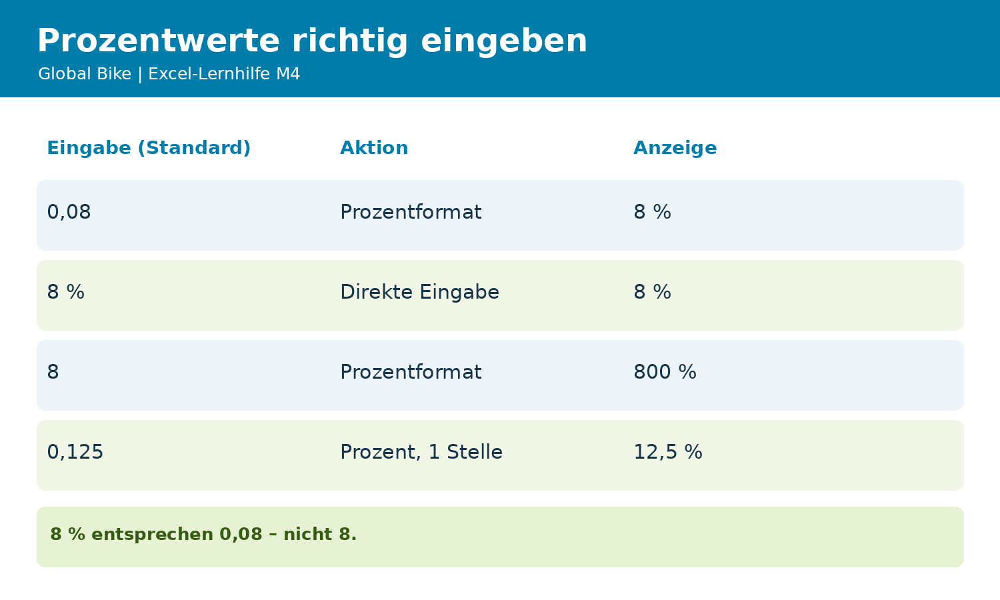
Prozent bedeutet von hundert. 8 % entsprechen dem Zahlenwert 0,08. Wird eine bereits als Zahl eingegebene 8 nachträglich als Prozent formatiert, erscheint 800 %. Sicher ist die direkte Eingabe 8 % oder die Eingabe 0,08 mit anschließender Prozentformatierung.
Klick-Anleitung
In einer Zelle mit Standardformat 0,08 eingeben.
Zelle markieren und unter Start – Zahl auf das Prozentzeichen klicken.
Bei Bedarf Dezimalstellen einstellen.
Kontrollieren, ob 8 % angezeigt werden.
Ein Anteil von 1/4 entspricht 0,25 beziehungsweise 25 %. Die Berechnung von Anteilen mit Zellbezügen wird in M8 vertieft. Prozentformat allein berechnet keinen Anteil.
7. Datums- und Uhrzeitformat
Excel speichert erkannte Datumsangaben als fortlaufende Zahlen und Uhrzeiten als Tagesbruchteile. Dadurch lassen sich Termine sortieren und Zeitabstände berechnen. Eine als Text gespeicherte Datumsangabe kann dagegen bei Berechnungen und Sortierungen Probleme verursachen.
Klick-Anleitung: Datum und Uhrzeit darstellen
In eine Zelle mit Standardformat 15.03.2027 eingeben.
Zelle markieren und Strg+1 drücken.
Kategorie Datum wählen und eine Darstellung mit vierstelliger Jahreszahl auswählen.
Alternativ unter Benutzerdefiniert den Typ TT.MM.JJJJ verwenden (deutschsprachiges Excel).
Für Uhrzeiten beispielsweise 09:30 eingeben und das Uhrzeitformat auswählen.
Ergebnis kontrollieren.
Ein Datum kann auch als 15. März 2027 erscheinen. Der zugrunde liegende Tag bleibt derselbe. Eine Uhrzeit von 12:00 entspricht einem halben Tag. Datumsformate berechnen keine Fristen; die betrieblichen Fristenregeln werden in M9 behandelt. Bei #### zunächst die Spaltenbreite prüfen; auch negative Datums- oder Zeitwerte können diese Anzeige verursachen.
8. Zahlenformate auswählen und verändern
Für häufige Formate genügt das Auswahlfeld in Start – Zahl. Der Dialog Zellen formatieren bietet weitere Einstellungen. Mehrere gleichartige Zellen können gemeinsam formatiert werden. Unterschiedliche Datenarten sollten getrennt markiert werden. Beim Kopieren können Formate mit übernommen werden; über Inhalte einfügen – Werte lassen sich Werte ohne Quellformat übertragen. Über Start – Löschen – Formate löschen kann die Formatierung zurückgesetzt werden, ohne die Inhalte zu entfernen.
9. Unabhängiges betriebliches Anwendungsbeispiel
Die Verwaltung von Global Bike erfasst testweise Informationen zu einer internen Schulung. Diese Beispieldaten sind unabhängig von M1 und keine SAP-Daten.
Angabe
Eingabe
Geeignete Anzeige
Schulungskennung
'0042
0042
Schulungstag
15.03.2027
15.03.2027
Beginn
09:30
09:30
Teilnehmerzahl
12
12
Kosten je Unterlage
3,5
3,50 €
Anteil digitaler Unterlagen
0,75
75 %
Materialgewicht in kg
1,256
1,26
Zur freiwilligen Erprobung können diese Angaben in einer separaten Arbeitsmappe eingegeben und unterschiedlich formatiert werden. Besonders aufschlussreich ist der Vergleich der Anzeige von 0,75 im Standard- und Prozentformat. Das Beispiel ist keine Vorlage für die M1-Arbeitsmappe und muss nicht abgegeben werden.
10. Typische Fehler und deren Behebung
Beobachtung
Ursache oder Prüfung
Abhilfe
800 % statt 8 %
Wert 8 statt 0,08
Wert korrigieren
0042 wird zu 42
Kennung als Zahl erkannt
Textformat vor Eingabe, Kennung neu erfassen
Geldbetrag nicht berechenbar
Betrag als Text gespeichert
Als Zahl neu erfassen oder gezielt in Zahl umwandeln
####
Spalte zu schmal oder negativer Datumswert
Breite und Wert prüfen
Datum wird nicht chronologisch sortiert
Datumswerte möglicherweise Text
Datentyp prüfen und echte Datumswerte erfassen
3,46 statt 3,456
Anzeige auf zwei Stellen begrenzt
Dezimalstellen erhöhen
Euro statt Dollar
Falsches Währungssymbol
Format ändern; keine automatische Umrechnung
Datum erscheint als Zahl
Zahlenformat statt Datum
Datumsformat wählen
Mengen zeigen Eurozeichen
Falsches Format für ganze Spalte
Mengenbereich als Zahl formatieren
Summen wirken um Cent abweichend
Angezeigte und gespeicherte Genauigkeit unterscheiden sich
Rechenwerte prüfen; Rundungsregeln beachten
Bei importierten Zahlen als Text kann Excel eine Warnung mit der Option In eine Zahl umwandeln anbieten. Diese nur für tatsächliche Rechengrößen verwenden, nicht für Kennungen. Eine bloße Änderung des Zahlenformats wandelt vorhandenen Text nicht zuverlässig in Zahlen um.
11. Freiwillige Selbstkontrolle
Welcher Zahlenwert entspricht 12 %?
Warum erscheint nach Prozentformatierung der Zahl 12 der Wert 1.200 %?
Welches Format eignet sich für eine Kennung 0007?
Wird der gespeicherte Wert 4,567 durch die Anzeige 4,57 verändert?
Warum sollten Termine als echte Datumswerte erfasst werden?
Was ist bei der Anzeige #### zuerst zu prüfen?
Kann ein Währungsformat Euro in Dollar umrechnen?
Woran lässt sich erkennen, ob ein Betrag netto oder brutto ist?
Kontrollhinweise: 0,12; das Prozentformat zeigt den Wert mal hundert mit Prozentzeichen; Textformat vor Eingabe; nein, nur die Anzeige ändert sich; damit Datumsberechnungen und chronologische Sortierung möglich sind; Spaltenbreite, gegebenenfalls negativer Datumswert; nein; an der fachlichen Bezeichnung und den betrieblichen Angaben.
12. Weiterführende Materialien
M5 vertieft Formeln und Grundrechenarten, M6 Funktionen, M7 Zellbezüge, M8 prozentuale Anteile, M9 Termine und Fristen, M10 Sortieren und Filtern. M13 behandelt die Druckaufbereitung, M14 die Qualitätskontrolle. M4 bleibt während der gesamten Lernsituation als Nachschlagewerk verfügbar.
In der Verwaltung ändern sich Mengen, Preise und Termine. Eine manuell eingetragene Summe bleibt unverändert, wenn sich eine Ausgangszahl ändert. Eine Formel berechnet das Ergebnis dagegen aus den aktuellen Ausgangswerten. Das spart Arbeit und reduziert Übertragungsfehler. Eine falsche Formel kann allerdings viele falsche Ergebnisse erzeugen. Deshalb gehört die Kontrolle zur Arbeit mit Excel.
2. Werte, Formeln und Funktionen
Begriff
Bedeutung
Beispiel
Wert
Direkt eingegebene Information
12
Formel
Rechenvorschrift, die mit einem Gleichheitszeichen beginnt
=12*4
Zellbezug
Verweis auf den Inhalt einer Zelle
=B2
Funktion
Vorgefertigte Rechenvorschrift innerhalb einer Formel
=SUMME(B2:B5)
Eine Formel steht in der Zelle, obwohl dort normalerweise ihr Ergebnis angezeigt wird. Die Bearbeitungsleiste zeigt die eigentliche Formel. Funktionen werden in M6 vertieft.
3. Aufbau einer Formel
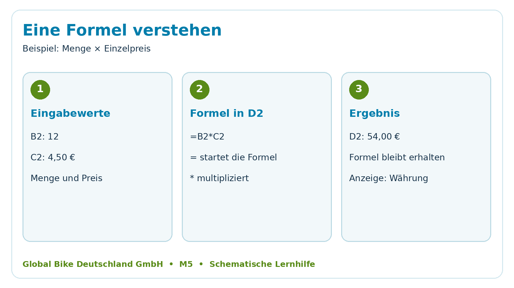
Das Gleichheitszeichen signalisiert Excel, dass eine Berechnung folgen soll. Danach stehen Zahlen, Zellbezüge, Operatoren oder Funktionen. In =B2*C2 verweist B2 auf Spalte B, Zeile 2; C2 auf Spalte C, Zeile 2. Das Sternchen bedeutet Multiplikation. Die Ergebniszelle darf nicht auf sich selbst verweisen.
4. Die vier Grundrechenarten
Rechenart
Operator
Beispiel
Ergebnis
Addition
+
=18+7
25
Subtraktion
-
=18-7
11
Multiplikation
*
=18*7
126
Division
/
=18/6
3
Excel verwendet für die Multiplikation das Sternchen und für die Division den Schrägstrich. Ein handschriftliches Malzeichen oder ein Doppelpunkt ist dafür ungeeignet. Der Doppelpunkt kennzeichnet in Zellbezügen einen zusammenhängenden Bereich, etwa B2:B5.
Im Büro werden beispielsweise Teilbeträge addiert, Restbudgets durch Subtraktion ermittelt, Mengen mit Einzelpreisen multipliziert und Gesamtkosten durch Stückzahlen dividiert.
5. Rechenregeln und Klammern
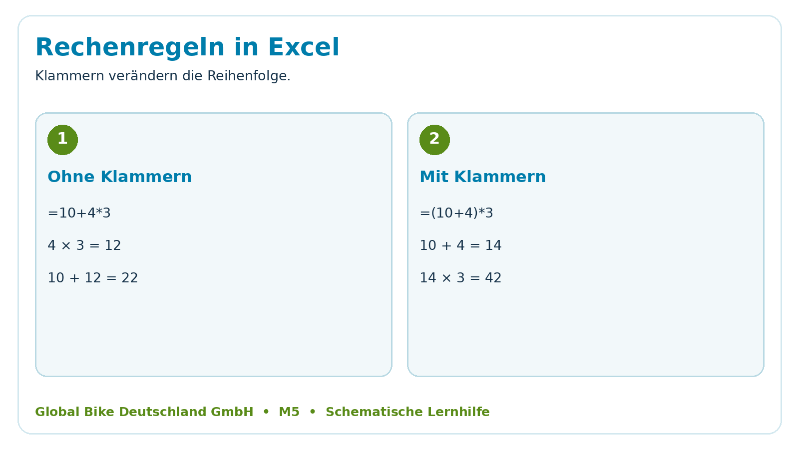
Multiplikation und Division werden vor Addition und Subtraktion ausgeführt. Gleichrangige Grundrechenarten werden von links nach rechts verarbeitet. Klammern verändern die Reihenfolge.
=10+4*3 ergibt 22.
=(10+4)*3 ergibt 42.
=24/6*2 ergibt 8.
=24/(6*2) ergibt 2.
Klammern müssen paarweise vorhanden sein. Eine verständliche Formel ist wichtiger als eine möglichst kurze Formel. Bei komplexeren Rechnungen können Zwischenergebnisse in eigenen Zellen sinnvoll sein.
6. Mit Zellbezügen rechnen
Eine Formel wie =6*8 funktioniert, ist aber für wechselnde Eingaben ungeeignet. Steht die Menge in B2 und der Einzelpreis in C2, lautet die passende Formel =B2*C2. Bei einer Änderung der Menge oder des Preises bleibt die Formel unverändert und das Ergebnis wird neu berechnet.
Eingabewerte und Berechnungsergebnisse sollten getrennt und eindeutig beschriftet sein. Wiederkehrende Berechnungen lassen sich kopieren. Dabei ändern sich normale Zellbezüge passend zur neuen Position: Aus =B2*C2 wird eine Zeile tiefer =B3*C3. Feste Zellbezüge mit Dollarzeichen werden in M7 ausführlich behandelt.
7. Formeln eingeben, bearbeiten und kopieren
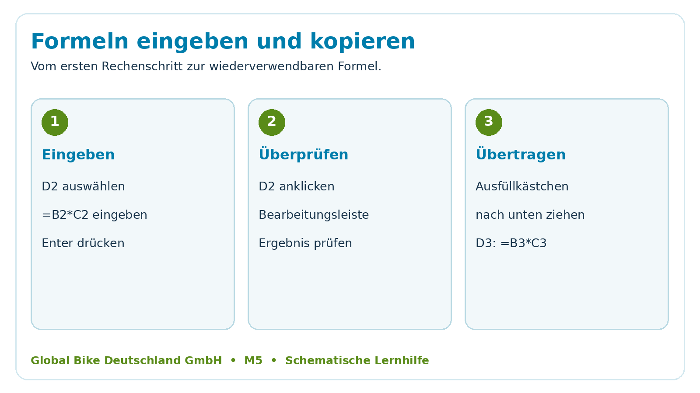
Klick-Anleitung: Formel erstellen
Die vorgesehene Ergebniszelle anklicken.
Das Gleichheitszeichen eingeben.
Die erste benötigte Zelle anklicken oder ihre Adresse eingeben.
Den Rechenoperator eingeben.
Die zweite benötigte Zelle anklicken oder ihre Adresse eingeben.
Mit Enter bestätigen.
Ergebnis und Formel in der Bearbeitungsleiste kontrollieren.
Klick-Anleitung: Formel korrigieren
Ergebniszelle auswählen.
In die Bearbeitungsleiste klicken oder F2 drücken.
Den fehlerhaften Bestandteil ändern.
Mit Enter bestätigen; mit Esc lässt sich eine noch nicht bestätigte Änderung abbrechen.
Klick-Anleitung: Formel nach unten übertragen
Zelle mit der geprüften Formel auswählen.
Das kleine Ausfüllkästchen unten rechts an der Zellmarkierung greifen.
Bis zur letzten benötigten Zeile nach unten ziehen.
Eine kopierte Formel anklicken und ihre Zellbezüge kontrollieren.
Alternativ kann die Formel mit Strg+C kopiert und mit Strg+V eingefügt werden. Dabei werden relative Bezüge ebenfalls angepasst. Nicht versehentlich nur Werte einfügen.
8. Automatische Neuberechnung
Excel berechnet Formeln normalerweise automatisch neu. Eine Funktionsprüfung gelingt durch vorübergehendes Ändern eines Eingabewerts. Das Ergebnis muss sich passend ändern. Anschließend den ursprünglichen Wert wiederherstellen.
Wenn sich Ergebnisse nicht aktualisieren, unter Formeln – Berechnungsoptionen prüfen, ob Automatisch eingestellt ist. F9 stößt eine Neuberechnung an. Auch als Text gespeicherte Formeln oder falsche Zellbezüge können die Ursache sein.
9. Rundung und Dezimalstellen
Wie in M4 erläutert, verändert die Anzeige von zwei Nachkommastellen nicht den gespeicherten Rechenwert. Für eine tatsächliche Rundung auf Cent kann die Funktion RUNDEN verwendet werden.
=RUNDEN(10/3;2) ergibt 3,33. Die 2 bezeichnet die Anzahl der Nachkommastellen. Das Semikolon trennt in der üblichen deutschen Excel-Konfiguration die Funktionsargumente.
Bei kaufmännischen Berechnungen ist entscheidend, an welcher Stelle gerundet werden soll. Drei einzeln auf 3,33 gerundete Beträge ergeben 9,99; eine ungerundete Berechnung von drei Dritteln von 10 ergibt 10. Die betriebliche Rundungsregel bestimmt, welcher Rechenweg anzuwenden ist. Nicht wahllos Zwischenergebnisse runden.
10. Unabhängiges betriebliches Anwendungsbeispiel
Für eine interne Schulung der Global Bike Deutschland GmbH werden beispielhaft Schulungsunterlagen kalkuliert. Die Daten gehören nicht zum Arbeitsauftrag M1.
Zeile
A – Position
B – Menge
C – Einzelpreis
D – Gesamtpreis
2
Schulungshefte
12
4,50 €
54,00 €
3
Namensschilder
12
1,25 €
15,00 €
4
Moderationskarten
3
6,80 €
20,40 €
Die Überschriften stehen in Zeile 1. In D2 steht =B2*C2, in D3 =B3*C3, in D4 =B4*C4. Die Preise werden als Währung formatiert.
Zelle
Inhalt oder Formel
Ergebnis
D5
=D2+D3+D4
89,40 €
D6
Eingabewert: genehmigter Betrag
120,00 €
D7
=D6-D5
30,60 €
B8
Eingabewert: Teilnehmende
12
D8
=D5/B8
7,45 €
Die Bezeichnungen für die Auswertungen stehen in Spalte A. Der genehmigte Betrag und die Teilnehmerzahl sind Eingabewerte, keine Ergebnisse. Wenn B2 auf 14 geändert wird, ergeben sich in D2 63,00 €, in D5 98,40 €, in D7 21,60 € und in D8 8,20 €. Die Teilnehmerzahl bleibt bei dieser Kontrolländerung unverändert. Anschließend B2 wieder auf 12 setzen.
Dieses Beispiel zeigt alle vier Grundrechenarten und die Abhängigkeit der Ergebnisse von den Eingaben. Die Addition mehrerer Zellen wird in M6 durch SUMME vereinfacht.
11. Typische Fehler und deren Behebung
Beobachtung
Mögliche Ursache
Kontrolle und Behebung
Formel erscheint als Text
Textformat oder vorangestelltes Apostroph
Standardformat wählen, Apostroph entfernen, Formel erneut bestätigen
Ergebnis bleibt gleich
Fest eingetragene Zahl statt Formel
Bearbeitungsleiste prüfen, Formel einsetzen
Falsches Produkt
Falscher Zellbezug
Adressen mit Überschriften vergleichen
Formel wird nicht akzeptiert
Falscher Operator oder fehlende Klammer
Syntax und Klammerpaare prüfen
#DIV/0!
Division durch null oder leere Bezugszelle
Nenner prüfen; fehlende Eingabe klären
#WERT!
Ungeeigneter Datentyp, etwa Text statt Zahl
Eingabewerte und Formate prüfen
#BEZUG!
Ungültiger Zellbezug, etwa nach Löschen einer Spalte
Richtigen Bezug wiederherstellen
#NAME?
Unbekannter Funktionsname oder nicht definierter Name
Schreibweise und Sprache prüfen
####
Spalte zu schmal, gegebenenfalls negativer Datumswert
Spalte verbreitern und Wert prüfen
Zirkelbezug
Formel hängt direkt oder indirekt von sich selbst ab
Abhängigkeiten prüfen und korrigieren
Unerwartete Centabweichung
Anzeige gerundet, Rechenwert nicht
Rundungsregel und tatsächliche Werte prüfen
Fehlermeldungen nicht durch beliebige Zahlen oder leere Texte verdecken. Zuerst die Ursache klären. Ein scheinbar plausibles Ergebnis ist kein Beweis für eine richtige Formel.
12. Freiwillige Selbstkontrolle
Die folgenden Fragen können zur eigenen Überprüfung genutzt werden. Es ist keine zusätzliche Abgabe erforderlich.
Womit beginnt eine Formel?
Welche Formel multipliziert B4 mit C4?
Was ergibt =8+2*5?
Was ergibt =(8+2)*5?
Wie verändert sich =B4*C4, wenn sie eine Zeile nach unten kopiert wird?
Warum ist eine Formel einem fest eingetragenen Ergebnis vorzuziehen?
Was bedeutet #DIV/0!?
Was unterscheidet das Zahlenformat mit zwei Dezimalstellen von RUNDEN?
Wie lässt sich prüfen, ob eine Berechnung auf geänderte Eingaben reagiert?
Kontrollhinweise
Mit =.
=B4*C4.
=B5*C5.
Das Ergebnis wird bei geänderten Eingaben automatisch neu berechnet, sofern die automatische Berechnung aktiv ist.
Es wird durch null oder einen als null behandelten leeren Bezug dividiert.
Das Format verändert die Anzeige; RUNDEN verändert das berechnete Ergebnis.
Einen Eingabewert testweise ändern, erwartetes und tatsächliches Ergebnis vergleichen und den ursprünglichen Wert wiederherstellen.
13. Weiterführende Materialien
M6 vertieft SUMME, MIN, MAX und MITTELWERT. M7 behandelt relative und absolute Zellbezüge, M8 prozentuale Anteile und M9 Datums- und Fristenberechnungen. M14 greift die Funktionsprüfung und Wiederverwendbarkeit auf. M5 bleibt während der gesamten Lernsituation als Nachschlagewerk verfügbar.
M6 – Excel-Funktionen: SUMME, MIN, MAX und MITTELWERT
Global Bike Deutschland GmbH – Verwaltung
1. Bedeutung von Excel-Funktionen im Büroalltag
In der Verwaltung müssen regelmäßig größere Zahlenmengen ausgewertet werden. Wie hoch sind die Gesamtausgaben? Welche Ausgabe ist besonders hoch? Wie viel wird durchschnittlich ausgegeben? Excel bietet fertige Rechenvorschriften, mit denen solche Fragen schnell beantwortet werden können. Die Ergebnisse ändern sich bei automatischer Berechnung, wenn sich die einbezogenen Ausgangswerte ändern. Die Auswahl des richtigen Datenbereichs und die Interpretation bleiben Aufgabe der Mitarbeitenden.
2. Formeln und Funktionen
Eine Formel ist eine Rechenvorschrift. Eine Funktion ist eine vorgefertigte Rechenvorschrift, die innerhalb einer Formel verwendet werden kann. =B2+B3+B4 und =SUMME(B2:B4) liefern bei drei numerischen Werten dieselbe Summe. Die zweite Schreibweise ist bei langen zusammenhängenden Listen übersichtlicher.
3. Aufbau einer Funktion
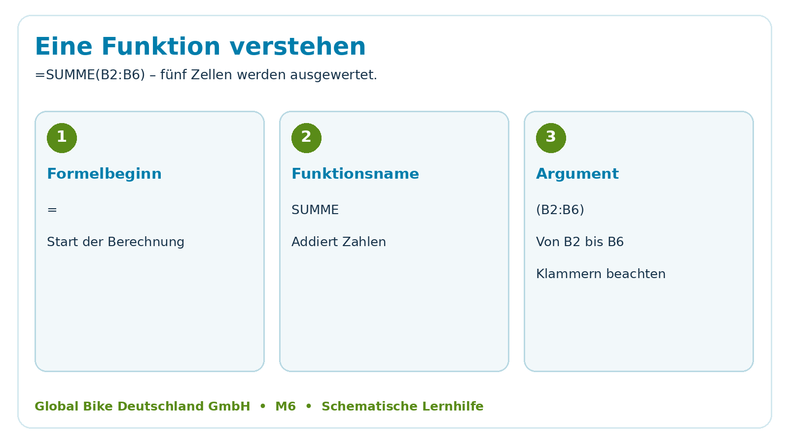
Die Formel =SUMME(B2:B6) beginnt mit dem Gleichheitszeichen. SUMME ist der Funktionsname. In Klammern steht das Argument, hier ein Zellbereich. Der Doppelpunkt bedeutet „von ... bis einschließlich“. B2:B6 umfasst fünf Zellen. Mehrere getrennte Argumente werden in der üblichen deutschen Excel-Konfiguration durch Semikolon getrennt, etwa =SUMME(B2:B6;D2:D6). Ein rechteckiger Bereich wie B2:D6 umfasst alle Zellen der drei Spalten und fünf Zeilen.
Die Ergebniszelle muss außerhalb des eigenen ausgewerteten Bereichs liegen. Überschriften und bereits berechnete Summen sollen nicht versehentlich in den Bereich aufgenommen werden.
4. SUMME – Gesamtwerte berechnen
SUMME addiert die numerischen Werte eines Bereichs. Beispielsweise ergibt =SUMME(B2:B5) bei 40, 60, 20 und 80 den Wert 200. Im Büro lassen sich damit Ausgaben, Stückzahlen oder Bearbeitungszeiten zusammenfassen. Nur Werte mit sinnvoll vergleichbaren Einheiten addieren.
Klick-Anleitung
Die Ergebniszelle außerhalb des Datenbereichs auswählen.
=SUMME( eingeben.
Den gewünschten Bereich mit der Maus markieren.
Die schließende Klammer eingeben und Enter drücken.
Den Bereich in der Bearbeitungsleiste und das Ergebnis kontrollieren.
5. MIN – kleinsten Wert ermitteln
=MIN(B2:B5) ergibt bei denselben vier Werten 20. MIN liefert den kleinsten numerischen Wert, nicht den Namen der zugehörigen Position. Um die Position zu finden, kann der Wert in der Liste gesucht oder die Liste sortiert werden (M10). Bei mehreren gleichen Minimalwerten sind alle betreffenden Positionen zu berücksichtigen.
Klick-Anleitung: Ergebniszelle wählen, =MIN( eingeben, Datenbereich markieren, Klammer schließen, Enter drücken und Ergebnis mit den Ausgangsdaten vergleichen.
6. MAX – größten Wert ermitteln
=MAX(B2:B5) ergibt 80. MAX eignet sich beispielsweise zur Ermittlung des höchsten Einzelbetrags oder der längsten Bearbeitungsdauer. Der größte Betrag ist nicht automatisch die wichtigste Aufgabe. Weitere betriebliche Kriterien können entscheidend sein.
Klick-Anleitung: Ergebniszelle wählen, =MAX( eingeben, Datenbereich markieren, Klammer schließen, Enter drücken und Ergebnis kontrollieren.
7. MITTELWERT – Durchschnitt berechnen
MITTELWERT addiert die numerischen Werte und teilt die Summe durch deren Anzahl. =MITTELWERT(B2:B5) ergibt bei den vier Beispielwerten 50, denn 200 geteilt durch 4 ergibt 50. Der Durchschnitt muss nicht als einzelner Wert in der Liste vorkommen.
Klick-Anleitung: Ergebniszelle wählen, =MITTELWERT( eingeben, Datenbereich markieren, Klammer schließen und Enter drücken. Zur Kontrolle die Summe durch die Anzahl der numerischen Werte teilen.
Ein Durchschnitt pro Vorgang ist etwas anderes als ein Durchschnitt pro Monat. Die Bezugsgröße muss zur Fragestellung passen. Bei unterschiedlich großen Gruppen ist der einfache Durchschnitt ihrer Durchschnittswerte nicht zwangsläufig der Gesamtdurchschnitt.
8. AutoSumme und Funktionsassistent
Klick-Anleitung: AutoSumme
Die Zelle unmittelbar unter einer Zahlenliste auswählen.
Im Register Start in der Gruppe Bearbeiten auf AutoSumme (Σ) klicken.
Den von Excel vorgeschlagenen Bereich überprüfen und bei Bedarf ändern.
Mit Enter bestätigen.
Die Formel in der Bearbeitungsleiste kontrollieren.
Über den kleinen Pfeil neben AutoSumme lassen sich auch Mittelwert, Max und Min auswählen. Die Menübezeichnungen können je nach Excel-Version leicht abweichen. Excel kann bei Lücken einen unvollständigen Bereich vorschlagen.
Klick-Anleitung: Funktionsassistent
Ergebniszelle auswählen und auf fx neben der Bearbeitungsleiste klicken.
Den gewünschten Funktionsnamen suchen und auswählen.
Im Argumentfenster den Datenbereich eintragen oder markieren.
Die Vorschau prüfen und mit OK bestätigen.
Die direkte Eingabe einer Funktion ist gleichwertig. Der Funktionsassistent hilft besonders beim Kennenlernen der Argumente.
9. Leere Zellen, Nullwerte und Text
Zellinhalt im Bereich
SUMME
MIN/MAX
MITTELWERT
Zahl
Wird addiert
Wird verglichen
Wird einbezogen
Zahl 0
Wird addiert
Wird verglichen
Wird mitgezählt
Leere Zelle
Wird ignoriert
Wird ignoriert
Wird ignoriert
Text, auch als Text gespeicherte Zahl
Wird ignoriert
Wird ignoriert
Wird ignoriert
Diese Regeln gelten für Werte innerhalb referenzierter Zellbereiche. Fehlerwerte können die Auswertung mit einem Fehler abbrechen. Direkt eingegebene Funktionsargumente können sich anders verhalten.
Beispiel: B2 enthält 40, B3 ist leer, B4 enthält 0, B5 enthält 80. SUMME ergibt 120, MIN 0, MAX 80 und MITTELWERT 40 (120 geteilt durch drei). Wird B3 mit 0 gefüllt, ergibt MITTELWERT 30. Eine fehlende Angabe darf deshalb nicht ohne sachlichen Grund durch null ersetzt werden.
Enthält der Bereich überhaupt keine Zahlen, liefern SUMME, MIN und MAX null, MITTELWERT dagegen #DIV/0!. Eine angezeigte Null ist dann kein Nachweis eines tatsächlich vorhandenen Messwerts.
10. Unabhängiges betriebliches Anwendungsbeispiel
Für eine interne Schulungsreihe der Global Bike Deutschland GmbH werden beispielhaft die Nettokosten von sechs Schulungsterminen ausgewertet. Die Daten sind didaktisch simuliert und gehören nicht zu M1.
Zeile
A – Schulungstermin
B – Kosten netto
2
Termin 1
120,00 €
3
Termin 2
180,00 €
4
Termin 3
90,00 €
5
Termin 4
150,00 €
6
Termin 5
210,00 €
7
Termin 6
150,00 €
Die Überschriften stehen in Zeile 1. Die Auswertungsbezeichnungen stehen in A9:A12.
Ergebniszelle
Formel
Kontrollwert
B9 – Gesamtkosten
=SUMME(B2:B7)
900,00 €
B10 – niedrigste Kosten
=MIN(B2:B7)
90,00 €
B11 – höchste Kosten
=MAX(B2:B7)
210,00 €
B12 – Durchschnitt
=MITTELWERT(B2:B7)
150,00 €
Die Ergebniszellen werden als Währung mit zwei Nachkommastellen formatiert. Die Summe lässt sich durch Addition prüfen; der Durchschnitt ergibt sich aus 900 geteilt durch 6.
Funktionsprüfung: Wird B6 vorübergehend von 210 auf 270 geändert, steigen die Gesamtkosten auf 960 und der Durchschnitt auf 160. MAX ergibt 270; MIN bleibt 90. Anschließend den ursprünglichen Wert wiederherstellen.
Bei einem zusätzlichen Termin in Zeile 8 muss geprüft werden, ob die Formeln den neuen Wert einbeziehen. Ein fester Bereich B2:B7 umfasst Zeile 8 nicht automatisch. Eine als Excel-Tabelle formatierte Liste kann mit strukturierten Bezügen automatisch erweitert werden; auch dann ist eine Funktionsprüfung sinnvoll. Die Ergebniszellen bleiben außerhalb der Datenliste.
11. Kaufmännische Interpretation
Die Gesamtkosten zeigen den gesamten Aufwand der sechs Termine. MIN und MAX zeigen die Spannweite der Einzelkosten. Der teuerste Termin kostet 120 Euro mehr als der günstigste. Der Durchschnitt von 150 Euro beschreibt die mittleren Kosten pro Termin, nicht die Kosten pro teilnehmender Person.
Aus den Beträgen allein lässt sich nicht ableiten, dass der teuerste Termin unwirtschaftlich war. Dazu wären beispielsweise Teilnehmerzahl, Dauer und Leistungsumfang erforderlich. Die Verwaltung kann zunächst die Ursachen der Unterschiede prüfen und erst dann eine begründete Empfehlung abgeben.
Beim Filtern einer Liste berechnen die vier hier behandelten Standardfunktionen weiterhin die Werte des angegebenen Bereichs einschließlich ausgefilterter Zeilen. Eine Auswertung ausschließlich sichtbarer Zeilen benötigt andere Verfahren; diese sind nicht Gegenstand von M6.
12. Typische Fehler und deren Behebung
Fehler
Kontrolle und Behebung
Erste oder letzte Datenzeile fehlt
Bereich in der Bearbeitungsleiste prüfen
Gesamtsumme wird erneut mitaddiert
Nur Ausgangsdaten einbeziehen
Ergebniszelle liegt im eigenen Bereich
Zirkelbezug durch getrennte Ergebniszelle vermeiden
Falscher Funktionsname
Deutsche Schreibweise prüfen
Doppelpunkt und Semikolon verwechselt
Zusammenhängende Bereiche mit Doppelpunkt angeben
Zahl als Text gespeichert
Datentyp prüfen und Zahl korrekt konvertieren
Fehlender Wert als null eingetragen
Fehlende Angabe klären; nicht erfinden
Durchschnitt mit falscher Bezugsgröße
Anzahl und Einheit der einbezogenen Werte prüfen
Neue Zeile fehlt in der Auswertung
Bereich erweitern und testen
Gefilterte Zeilen werden mitgerechnet
Umfang der Auswertung klären
MIN/MAX liefert nur einen Betrag
Zugehörige Positionen anhand der Liste ermitteln
Fehlerwert in Ausgangsdaten
Ursache der fehlerhaften Eingabe oder Formel beheben
13. Freiwillige Selbstkontrolle
Unabhängige Übungswerte in C2:C6: 30, 50, 0, leer, 80.
Welche Funktion berechnet die Gesamtsumme?
Wie lautet die Formel für den kleinsten Wert?
Welches Ergebnis liefert MAX?
Wie hoch ist der Durchschnitt?
Wie ändert sich der Durchschnitt, wenn die leere Zelle mit null gefüllt wird?
Was bedeutet der Doppelpunkt in C2:C6?
Warum darf eine Summenzelle nicht im eigenen Summenbereich liegen?
Liefert MAX auch die Bezeichnung der teuersten Position?
Was muss nach dem Ergänzen einer neuen Datenzeile geprüft werden?
Berechnet SUMME nach dem Filtern automatisch nur sichtbare Zeilen?
Kontrollhinweise
=SUMME(C2:C6) ergibt 160.
=MIN(C2:C6) ergibt 0.
40 (160 geteilt durch vier numerische Werte).
32 (160 geteilt durch fünf).
Alle Zellen von C2 bis einschließlich C6.
Es entsteht ein Zirkelbezug.
Nein, nur den größten numerischen Wert.
Ob der neue Wert im Funktionsbereich enthalten ist.
Nein, SUMME berücksichtigt weiterhin den angegebenen Bereich.
Die Selbstkontrolle ist freiwillig und erfordert keine zusätzliche Abgabe.
14. Weiterführende Materialien
M7 vertieft relative und absolute Zellbezüge. M8 behandelt prozentuale Anteile, M10 Sortieren und Filtern, M11 und M12 die grafische Auswertung und M14 die Funktionsprüfung. M6 bleibt während der gesamten Lernsituation als Nachschlagewerk verfügbar.
In einer betrieblichen Tabelle werden häufig viele gleichartige Berechnungen benötigt. Beispielsweise werden Mengen mit Einzelpreisen multipliziert oder einzelne Kostenbeträge mit einem gemeinsamen Planungszuschlag berechnet. Statt jede Formel neu zu schreiben, lässt sie sich kopieren. Excel passt dabei relative Zellbezüge an. Manche Werte, etwa ein zentral hinterlegter Prozentsatz, sollen dagegen bei jeder Berechnung aus derselben Zelle stammen. Dafür werden absolute Zellbezüge verwendet. Die richtige Wahl verhindert Fehler und macht Arbeitsmappen wiederverwendbar.
2. Aufbau einer Zelladresse
B4 bezeichnet die Zelle in Spalte B und Zeile 4. In einer Formel verweist B4 auf deren Inhalt. Ein Dollarzeichen vor dem Spaltenbuchstaben fixiert die Spalte beim Kopieren; ein Dollarzeichen vor der Zeilennummer fixiert die Zeile. $B$4 fixiert beides. Das Dollarzeichen ist hier kein Währungssymbol. Ein absoluter Bezug schützt den Zellinhalt nicht vor Änderungen.
3. Relative Zellbezüge
Relative Bezüge sind der Normalfall. Sie enthalten keine Dollarzeichen. Beim Kopieren einer Formel bleiben die Abstände zwischen Formelzelle und Bezugszellen erhalten.
Formelzelle
Formel
D2
=B2*C2
D3 (eine Zeile tiefer)
=B3*C3
D4 (zwei Zeilen tiefer)
=B4*C4
E2 (eine Spalte weiter rechts)
=C2*D2
Die letzte Zeile zeigt nur die technische Veränderung beim Kopieren nach rechts. Ob diese Formel fachlich sinnvoll ist, hängt von den Spalteninhalten ab. Relative Bezüge eignen sich besonders für zeilenweise Berechnungen mit jeweils eigenen Eingabewerten.
4. Absolute Zellbezüge
Ein absoluter Bezug bleibt beim Kopieren in andere Zellen unverändert. Steht ein gemeinsamer Zuschlagssatz in H2, kann die Formel =D2*$H$2 verwendet werden. Beim Kopieren nach unten entsteht =D3*$H$2. D2 wird angepasst, H2 bleibt fest.
Wird der Inhalt von H2 geändert, rechnen alle darauf bezogenen Formeln mit dem neuen Wert, sofern die automatische Berechnung aktiv ist. Absolut bedeutet also nicht, dass der Wert unveränderlich ist. Die Fixierung gilt für das Kopieren von Formeln, nicht für jede denkbare Änderung der Tabellenstruktur. Beim Einfügen, Löschen oder Verschieben von Zellen können sich auch absolute Adressen ändern.
5. Relative und absolute Zellbezüge im Vergleich
Merkmal
Relativ
Absolut
Schreibweise
B2
$B$2
Eine Zeile tiefer kopiert
B3
$B$2
Eine Spalte weiter kopiert
C2
$B$2
Typischer Zweck
Unterschiedliche Werte je Datensatz
Gemeinsamer Satz oder Bezugswert
Entscheidend ist die fachliche Frage: Soll die nächste Formel den Wert aus der nächsten Zeile verwenden oder weiterhin denselben zentralen Wert? Nicht alle Bezüge einer Formel müssen gleichartig sein.
6. Bedeutung des Dollarzeichens
$H$2 besteht aus einem fixierten Spaltenbuchstaben H und einer fixierten Zeile 2. Die Zeichen stehen jeweils unmittelbar vor dem zu fixierenden Bestandteil. Ein absoluter Bezug ist keine fest eingetragene Zahl: =D2*0,08 enthält einen festen Zahlenwert, während =D2*$H$2 auf eine veränderbare Eingabezelle verweist. Die zweite Variante erleichtert die zentrale Pflege eines gemeinsamen Satzes.
7. Klick-Anleitung: F4-Taste verwenden
Ergebniszelle auswählen und eine Formel beginnen, beispielsweise =D2*H2.
Vor dem Bestätigen den Bezug H2 in der Bearbeitungsleiste markieren oder den Cursor in diesen Bezug setzen.
F4 drücken. Aus H2 wird $H$2.
Die Dollarzeichen kontrollieren und Enter drücken.
Die Formelzelle erneut auswählen und den Bezug in der Bearbeitungsleiste prüfen.
Beim wiederholten Drücken von F4 wechselt Excel normalerweise zwischen H2, $H$2, H$2, $H2 und wieder H2. Auf manchen Notebooks ist Fn+F4 erforderlich. Außerhalb der Formelbearbeitung hat F4 eine andere Funktion. Falls die Tastenkombination nicht funktioniert, können die Dollarzeichen direkt eingegeben werden. Die Anleitung bezieht sich auf Desktop-Excel für Windows.
8. Klick-Anleitung: Formeln kopieren und überprüfen
Die erste Formel vollständig eingeben und mit Enter bestätigen.
Die Ergebniszelle anklicken.
Das Ausfüllkästchen unten rechts an der Zellmarkierung bis zur letzten Datenzeile ziehen.
Die erste, eine mittlere und die letzte kopierte Formel in der Bearbeitungsleiste prüfen.
Kontrollieren, ob die relativen Bezüge mitwandern und die absoluten Bezüge unverändert bleiben.
Mindestens ein Ergebnis unabhängig nachrechnen.
Alternativ lässt sich die Formel mit Strg+C und Strg+V kopieren. Beim Einfügen ausschließlich als Werte geht die Formel verloren. Das Ausschneiden und Verschieben ist nicht dasselbe wie Kopieren.
Für eine interne Schulung der Global Bike Deutschland GmbH werden beispielhafte Nettokosten mit einem einheitlichen Planungszuschlag kalkuliert. Die Werte sind didaktisch simuliert und gehören nicht zum Hauptfall M1. Der Zuschlag ist eine interne Planungsgröße, keine Steuer und kein tatsächlich angefallener Aufwand.
In H1 steht „Planungszuschlag“, in H2 wird 8 % als numerischer Prozentwert eingetragen. Die Überschriften der folgenden Liste stehen in Zeile 1.
Zeile
A – Material
B – Menge
C – Einzelpreis netto
D – Grundbetrag
E – Zuschlag
F – Planbetrag
2
Schreibblöcke
10
3,50 €
35,00 €
2,80 €
37,80 €
3
Ordner
6
4,00 €
24,00 €
1,92 €
25,92 €
4
Stifte
20
1,20 €
24,00 €
1,92 €
25,92 €
In D2 steht =B2*C2, in E2 =D2*$H$2 und in F2 =D2+E2. Die drei Formeln werden bis Zeile 4 kopiert. In E4 muss anschließend =D4*$H$2 stehen.
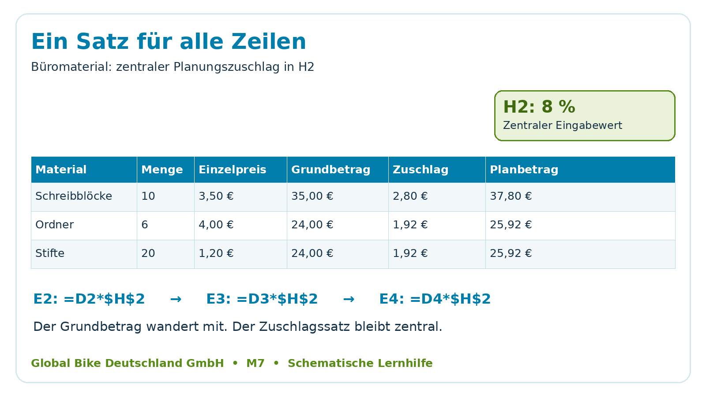
Die Grundbeträge ergeben zusammen 83,00 €, die Zuschläge 6,64 € und die Planbeträge 89,64 €. Wird H2 testweise auf 10 % geändert, ergeben sich Zuschläge von 3,50 €, 2,40 € und 2,40 €. Der neue Gesamtplanbetrag beträgt 91,30 €. Anschließend den ursprünglichen Satz wiederherstellen. Alle Beträge sind hier ohne zusätzliche Rundungsschritte centgenau. Bei anderen Daten ist die betriebliche Rundungsregel zu beachten (M5).
10. Unabhängiges Beispiel: Prozentuale Anteile
Eine zweite, separate Beispieltabelle enthält drei simulierte Schulungskosten: B2 = 60 €, B3 = 90 €, B4 = 150 €. In B5 steht =SUMME(B2:B4) mit dem Ergebnis 300 €. In C2 steht =B2/$B$5. Die Formel wird bis C4 kopiert und die Ergebnisse werden als Prozentwerte formatiert.
Zelle
Formel
Ergebnis
C2
=B2/$B$5
20 %
C3
=B3/$B$5
30 %
C4
=B4/$B$5
50 %
Der Zähler verändert sich, der Nenner bleibt gleich. Die Anteile ergeben zusammen 100 %. Bei einem Gesamtbetrag von null ist die Division nicht definiert. Der Fehler #DIV/0! muss fachlich geklärt werden. Nicht zusätzlich mit 100 multiplizieren, wenn das Prozentformat verwendet wird. M8 vertieft die Berechnung und Interpretation von Anteilen.
11. Freiwillige Vertiefung: gemischte Zellbezüge
Gemischte Bezüge fixieren nur eine Koordinate. $B2 hält die Spalte B fest, B$2 die Zeile 2. Diese Schreibweisen sind bei zweidimensionalen Berechnungstabellen hilfreich.
Ausgangsbezug
Eine Zeile tiefer
Eine Spalte weiter rechts
B2
B3
C2
$B$2
$B$2
$B$2
$B2
$B3
$B2
B$2
B$2
C$2
Beispiel: Stehen Mengen in A2:A4 und verschiedene Einzelpreise in B1:D1, kann in B2 die Formel =$A2*B$1 stehen. Beim Kopieren nach rechts und unten werden jeweils die passende Menge und der passende Preis verwendet. Diese Vertiefung ist freiwillig und kein zusätzlicher verbindlicher Prüfungsinhalt.
12. Typische Fehler und deren Behebung
Beobachtung
Ursache und Abhilfe
Zuschlag verschwindet nach dem Kopieren
Satzbezug wandert in eine leere Zelle; absoluten Bezug prüfen
Zufällig gleiche Ausgangswerte; mit unterschiedlichen Werten testen
Kopierte Zelle enthält nur Zahl
Als Werte eingefügt; Formel erneut kopieren
Neue Datenzeile fehlt
Formel oder Summenbereich nicht erweitert; Funktionsprüfung durchführen
13. Funktionsprüfung und Wiederverwendbarkeit
Eine verlässliche Arbeitsmappe trennt Eingaben, Berechnungen und Auswertungen. Gemeinsame Bezugsgrößen werden eindeutig beschriftet. Eine zentrale Eingabezelle vermeidet widersprüchliche Sätze in verschiedenen Formeln.
Zur freiwilligen Kontrolle kann eine Kopie der Arbeitsmappe genutzt werden: Einen zeilenbezogenen Eingabewert verändern und prüfen, ob die betroffenen Ergebnisse reagieren. Danach einen zentralen Satz verändern und prüfen, ob alle davon abhängigen Zeilen reagieren. Ursprüngliche Werte wiederherstellen. Bei einer zusätzlichen Zeile die Formeln und Auswertungsbereiche kontrollieren. Ein plausibles Ergebnis allein genügt nicht; auch die Formel muss stimmen.
14. Freiwillige Selbstkontrolle
Was bezeichnet die Adresse C7?
Wie verändert sich =B2*C2 beim Kopieren eine Zeile nach unten?
Wie wird H2 vollständig fixiert?
Wie lautet =D2*$H$2 zwei Zeilen tiefer?
Bleibt der Inhalt einer absolut referenzierten Zelle unveränderlich?
Welchen Vorteil hat ein zentral hinterlegter Prozentsatz gegenüber einer Zahl in jeder Formel?
Welche Formel berechnet den Anteil von B3 an der Gesamtsumme in B8 mit kopierfähigem Nenner?
Was ist zu prüfen, wenn F4 nicht die erwarteten Dollarzeichen setzt?
Warum sollten kopierte Formeln mit unterschiedlichen Eingabewerten getestet werden?
Was ist bei einer neu ergänzten Datenzeile zu kontrollieren?
Kontrollhinweise
Spalte C, Zeile 7.
=B3*C3.
$H$2.
=D4*$H$2.
Nein, die Adresse bleibt beim Kopieren fest; der Inhalt kann geändert werden.
Eine zentrale Änderung wirkt auf alle abhängigen Formeln.
=B3/$B$8, anschließend Prozentformat wählen.
Formelbearbeitung, ausgewählten Bezug und gegebenenfalls Fn-Taste prüfen; alternativ Dollarzeichen eingeben.
Gleiche Eingabewerte können falsche Bezüge verdecken.
Ob die benötigten Formeln vorhanden sind und die Auswertungsbereiche die neue Zeile umfassen.
Keine zusätzliche Abgabe oder Bewertung.
15. Weiterführende Materialien
M5 behandelt Formeln und Grundrechenarten, M6 die grundlegenden Funktionen. M8 vertieft prozentuale Anteile, M9 die Datums- und Fristenberechnung, M14 die Qualitätskontrolle und Wiederverwendbarkeit. M7 bleibt während der gesamten Lernsituation verfügbar.
M8 – Prozentuale Anteile in Excel berechnen und interpretieren
Global Bike Deutschland GmbH – Verwaltung
1. Bedeutung der Prozentrechnung im Büroalltag
Absolute Zahlen zeigen Beträge oder Mengen. Prozentwerte zeigen, wie groß diese im Verhältnis zu einer Bezugsgröße sind. In der Verwaltung helfen sie beispielsweise bei der Überwachung von Kostenbudgets, der Auswertung erledigter Vorgänge und dem Vergleich verschiedener Kostenarten. Ein Prozentwert ist nur aussagekräftig, wenn klar ist, worauf er sich bezieht. 75 % eines kleinen Budgets können weniger Euro sein als 30 % eines großen Budgets.
2. Grundwert, Prozentwert und Prozentsatz
Der Grundwert G ist die Bezugsgröße (100 %). Der Prozentwert W ist der betrachtete Teil in derselben Einheit wie der Grundwert. Der Prozentsatz p beschreibt das Verhältnis W/G. In Excel wird beispielsweise 25 % intern als 0,25 gespeichert.
Beispiel: Von einem internen Schulungsbudget von 800 € wurden 200 € ausgegeben. 800 € sind der Grundwert, 200 € der Prozentwert und 25 % der Prozentsatz. Der verbleibende Betrag beträgt 600 €, entsprechend 75 % des Budgets. Die Bezugsgröße bleibt in beiden Anteilsberechnungen das ursprüngliche Budget.
3. Die drei Grundformeln der Prozentrechnung
Gesucht
Berechnung
Excel-Beispiel
Prozentwert W
G × p
=B2*C2
Prozentsatz p
W / G
=D2/B2
Grundwert G
W / p
=D2/C2
In einer unabhängigen Beispielzeile steht B2 für 800 €, C2 für 25 % und D2 für 200 €. Die Formeln zeigen drei alternative Berechnungen, je nachdem, welcher Wert fehlt. Sie dürfen nicht gleichzeitig so in die drei Eingabezellen eingetragen werden, weil sonst ein Zirkelbezug entsteht. Bei der Division darf der Nenner nicht null sein.
Ein Prozentsatz von 25 % entspricht 25/100. Wird der Satz als Prozentwert in Excel eingegeben, ist keine zusätzliche Division durch 100 notwendig.
4. Prozentwerte in Excel eingeben und formatieren
Excel unterscheidet Zellwert und Anzeige (M4). Die Eingabe 25% speichert den numerischen Wert 0,25. Auch die Eingabe 0,25 mit anschließender Prozentformatierung zeigt 25 %. Wer dagegen die Zahl 25 eingibt und anschließend das Prozentformat zuweist, erhält 2500 %.
Klick-Anleitung (deutschsprachiges Desktop-Excel für Windows):
Ergebniszelle oder zusammenhängenden Ergebnisbereich markieren.
Registerkarte Start öffnen.
In der Gruppe Zahl auf das Prozentzeichen klicken.
Mit Dezimalstelle hinzufügen bzw. entfernen die gewünschte Genauigkeit einstellen.
In der Bearbeitungsleiste den zugrunde liegenden Wert oder die Formel prüfen.
Alternativ Strg+1 drücken, Kategorie Prozent wählen, Dezimalstellen festlegen und bestätigen. Geldbeträge bleiben im Währungsformat, Mengen im Zahlenformat. Prozentformatierung verändert normalerweise nur die Anzeige, nicht den zugrunde liegenden Wert.
5. Prozentuale Anteile an einer Gesamtsumme
Bei einer Kostenstruktur ist die Summe aller berücksichtigten Einzelkosten der Grundwert. Jeder Einzelbetrag wird durch diese Gesamtsumme geteilt. Bei vollständigen, überschneidungsfreien Kategorien mit nichtnegativen Beträgen und positiver Gesamtsumme ergeben die Anteile zusammen 100 %. Zwischensummen dürfen nicht erneut als Einzelpositionen einbezogen werden.
Bei einer gefilterten Liste muss vorab feststehen, ob sich die Anteile auf alle Daten oder nur auf die sichtbare Teilmenge beziehen sollen. SUMME berücksichtigt auch ausgefilterte Zeilen. Eine gefilterte Ansicht ändert deshalb nicht automatisch die Bezugsgröße. Für Auswertungen ausschließlich sichtbarer Zeilen kann ergänzend TEILERGEBNIS verwendet werden; diese Funktion ist hier kein verbindlicher Lerninhalt.
6. Relative und absolute Zellbezüge anwenden
Bei mehreren Anteilen verändert sich der Zähler je Zeile, der Nenner bleibt gleich. Steht die Gesamtsumme in B6, lautet eine erste Formel =B2/$B$6. Beim Kopieren nach unten wird daraus =B3/$B$6. Die Dollarzeichen fixieren die Adresse beim Kopieren (M7), nicht den Wert der Gesamtsumme. Ändert sich ein Einzelbetrag, müssen sich Gesamtsumme und davon abhängige Anteile bei automatischer Berechnung entsprechend aktualisieren.
7. Klick-Anleitung zur Anteilsberechnung
Einzelbeträge in einer zusammenhängenden Spalte erfassen und als Währung formatieren.
Unterhalb der Einzelbeträge die Summe mit SUMME berechnen.
Erste Ergebniszelle in der Anteilsspalte anklicken.
Gleichheitszeichen eingeben, erste Betragszelle anklicken, Schrägstrich eingeben und Summenzelle anklicken.
Den Bezug auf die Summenzelle mit F4 oder manuell durch zwei Dollarzeichen fixieren.
Enter drücken und die Formel am Ausfüllkästchen bis zur letzten Einzelposition kopieren.
Anteilsspalte markieren und das Prozentformat mit zwei Dezimalstellen wählen.
Die Summe der Anteile berechnen und die erste sowie letzte Formel prüfen.
Die Summenzeile wird nicht als weitere Einzelposition in die Anteilsberechnung kopiert. Eine Kontrolle von 100 % ersetzt nicht die Prüfung der Datengrundlage.
Für eine interne Schulung der Global Bike Deutschland GmbH liegen folgende simulierte Nettokosten vor. Sie sind unabhängig vom Hauptfall M1 und keine SAP-Daten.
Zeile
A – Kostenart
B – Betrag
C – Anteil
2
Schulungsunterlagen
120,00 €
20,00 %
3
Raumausstattung
180,00 €
30,00 %
4
Technische Ausstattung
240,00 €
40,00 %
5
Verbrauchsmaterial
60,00 €
10,00 %
6
Gesamt
600,00 €
100,00 %
B6: =SUMME(B2:B5); C2: =B2/$B$6; C3 bis C5 durch Kopieren; C6: =SUMME(C2:C5).
Technische Ausstattung hat mit 40 % den größten Anteil. Daraus folgt nicht automatisch, dass diese Kosten unangemessen sind. Vor einer Einsparentscheidung sind Bedarf, Qualität und mögliche Alternativen zu prüfen.
Funktionsprobe: B2 vorübergehend von 120 € auf 180 € ändern. Die Gesamtsumme steigt auf 660 €. Der Anteil der Schulungsunterlagen beträgt rund 27,27 %, der technischen Ausstattung rund 36,36 %. Auch unveränderte Einzelbeträge können einen anderen Anteil erhalten, weil sich der Grundwert geändert hat. Anschließend den ursprünglichen Wert wiederherstellen.
B5 und B6 als Prozent formatieren. Die Ausgaben können in einer späteren Arbeitsmappe aus einer Summe von Einzelpositionen stammen. Bei 1.350 € Ausgaben beträgt die Auslastung 112,50 %, das Restbudget −150 € und der verbleibende Anteil −12,50 %. Negative Restwerte dürfen nicht einfach auf null gesetzt werden, weil dadurch eine Überschreitung verborgen würde. Eine Budgetauslastung von 75 % bedeutet nicht automatisch, dass 25 % frei ausgegeben werden dürfen: Bereits geplante oder zugesagte Ausgaben und interne Freigaben sind zu beachten.
10. Freiwillige Vertiefung: Veränderungen und Prozentpunkte
Ein Anteil am Gesamtwert ist etwas anderes als eine Veränderung gegenüber einem früheren Wert. Steigen simulierte Monatskosten von 200 € (B2) auf 250 € (B3), beträgt die absolute Veränderung =B3-B2 = 50 €. Die relative Veränderung =(B3-B2)/B2 beträgt 25 %. Der alte Wert ist der Grundwert. Bei einem alten Wert von null ist diese Veränderungsrate nicht definiert.
Steigt eine Erledigungsquote von 60 % auf 75 %, beträgt die Differenz 15 Prozentpunkte. Relativ zur alten Quote ist dies eine Steigerung von 25 %. Beide Aussagen sind richtig, beschreiben aber unterschiedliche Größen. Prozentpunkte sind kein zusätzlicher verbindlicher Prüfungsinhalt.
11. Rundung und Nachkommastellen
Drei gleich große Anteile von jeweils einem Drittel werden mit zwei Dezimalstellen als 33,33 % angezeigt. Die sichtbaren Zahlen ergeben 99,99 %, während die Summe der ungerundeten Zellwerte als 100,00 % angezeigt wird. Das ist eine Anzeigeabweichung und kein Rechenfehler.
Mit den ungerundeten Werten weiterrechnen. Nur wenn eine fachliche Rundungsregel eine tatsächliche Rundung verlangt, ist beispielsweise =RUNDEN(C2;4) für einen als Dezimalbruch gespeicherten Prozentsatz mit zwei Prozent-Nachkommastellen geeignet. Eine solche Rundung kann die Summe verändern. Nicht eigenmächtig einen Anteil anpassen, nur damit die Anzeige 100 % ergibt.
12. Kaufmännische Interpretation
Eine aussagekräftige Auswertung nennt den betrachteten Wert, die Bezugsgröße, den Zeitraum und die Bedeutung für den Arbeitsauftrag. Prozentwerte können Prioritäten sichtbar machen, ersetzen aber keine Entscheidung über notwendige Ausgaben. Eine hohe Erledigungsquote kann einzelne dringende offene Vorgänge verdecken. Eine geringe Budgetauslastung kann auf noch nicht erfasste Kosten zurückgehen.
Bei Vergleichen müssen Zeitraum, Einheit und Abgrenzung zusammenpassen. Ein Nettobudget darf nicht mit Bruttoausgaben verglichen werden. Fehlende Angaben sind nicht automatisch null. Empfehlungen müssen sich auf überprüfte Daten stützen und Unsicherheiten kenntlich machen.
13. Typische Fehler und deren Behebung
Beobachtung
Ursache und Abhilfe
2500 % statt 25 %
Zahl 25 statt 0,25 bzw. 25 % eingegeben
Anteil hundertmal zu groß
Zusätzlich mit 100 multipliziert und Prozentformat verwendet
Anteil verändert sich unerwartet beim Kopieren
Nenner nicht absolut referenziert
Alle Anteile gleich
Zähler versehentlich fixiert
Summe der Anteile deutlich über 100 %
Zwischensumme doppelt erfasst oder falscher Grundwert
Summe deutlich unter 100 %
Positionen fehlen oder Grundwert passt nicht zur Auswahl
99,99 % statt 100 % in sichtbaren Einzelwerten
Anzeige-Rundung prüfen
#DIV/0!
Nenner null oder leer; Ursache klären, nicht als 0 % ausgeben
#WERT!
Text statt Zahl in Berechnungszellen; Datentyp prüfen
Budgetüberschreitung bleibt unsichtbar
Negative Restwerte unterdrückt
Gefilterte Anteile ergeben nicht 100 %
Bezugsgröße umfasst weiterhin alle Daten
Anteil wird als Veränderungsrate bezeichnet
Bezugsgröße und Fragestellung unterscheiden
14. Qualitätskontrolle und Wiederverwendbarkeit
Freiwillige Kontrolle an einer Kopie: Sind alle Beträge numerisch und in derselben Einheit? Ist der Grundwert eindeutig bezeichnet? Stimmen Summenbereiche und Zellbezüge? Sind Prozentwerte als solche formatiert? Reagieren die Formeln auf Änderungen? Werden neue Datenzeilen in die Berechnung einbezogen? Ist bei Filtern die Bezugsgröße weiterhin nachvollziehbar? Sind fehlende Werte und Budgetüberschreitungen sichtbar? Lassen sich die Aussagen aus den Zahlen begründen?
Einzelne Ergebnisse unabhängig nachrechnen. Bei einer neuen Datenzeile prüfen, ob die Summenformel und die Anteilsformeln erweitert wurden. Die ursprünglichen Testwerte wiederherstellen. Die Arbeitsmappe soll ohne erneute Eingabe aller Formeln nutzbar bleiben.
15. Freiwillige Selbstkontrolle
Was ist der Grundwert bei einer Budgetauslastung?
Wie wird ein Anteil von 45 € an 180 € berechnet?
Welcher Zellwert entspricht 12,5 %?
Welche Formel berechnet den Anteil von B3 an der Gesamtsumme B9 kopierfähig?
Wie lautet diese Formel eine Zeile tiefer?
Ein Budget beträgt 500 €, die Ausgaben 350 €. Wie hoch sind Restbetrag und Auslastung?
Wie hoch ist die Auslastung bei 550 € Ausgaben und 500 € Budget?
Warum können drei angezeigte Drittel zusammen 99,99 % ergeben?
Was bedeutet #DIV/0! bei einer Anteilsberechnung?
Warum kann der Anteil eines unveränderten Betrags sinken?
Bedeutet der größte Kostenanteil automatisch, dass dort eingespart werden sollte?
Verändert ein Filter automatisch den durch SUMME berechneten Grundwert?
Kontrollhinweise
Das gesamte verfügbare Budget.
45/180 = 0,25 = 25 %.
0,125.
=B3/$B$9.
=B4/$B$9.
150 € Restbetrag, 70 % Auslastung.
110 %; das Budget ist um 50 € überschritten.
Durch die Rundung der Anzeige auf zwei Dezimalstellen.
Der Nenner ist null oder leer; eine Quote ist so nicht definiert.
Weil der Gesamtbetrag steigen kann.
Nein; Bedarf, Alternativen und betriebliche Folgen müssen geprüft werden.
Nein, SUMME berücksichtigt auch ausgefilterte Zeilen.
Keine zusätzliche Abgabe oder Bewertung.
16. Weiterführende Materialien
M4 erläutert Zahlenformate, M5 Formeln und Grundrechenarten, M6 SUMME und weitere Funktionen, M7 Zellbezüge. M9 vertieft Postorganisation, Termine und Fristen. M11 und M12 behandeln Diagramme, M14 die Qualitätskontrolle. M8 bleibt während der gesamten Lernsituation verfügbar.
M9 – Postorganisation, Termine und Fristen mit Excel
Global Bike Deutschland GmbH – Verwaltung
1. Bedeutung der digitalen Büroorganisation
Eine zuverlässige Büroorganisation sorgt dafür, dass Anfragen, Bestellungen, interne Mitteilungen und Aufgaben nicht verloren gehen. Eine gemeinsame Excel-Übersicht macht sichtbar, was eingegangen ist, wer zuständig ist, was bereits erledigt wurde und wo Handlungsbedarf besteht. Sie unterstützt die Abstimmung zwischen Verwaltung, Verkauf und Auftragsbearbeitung. Eine Tabelle ersetzt weder die tatsächliche Bearbeitung noch die Kommunikation mit den zuständigen Mitarbeitenden.
2. Posteingang und Postausgang
Zum Posteingang gehören beispielsweise empfangene Kundenanfragen und Bestellungen, zum Postausgang versandte Angebote und Antworten. Auch interne Mitteilungen können in einer betrieblichen Postübersicht erfasst werden. Die Richtung wird aus Sicht des dokumentierenden Bereichs angegeben. Das Datum bezeichnet den tatsächlichen Ein- oder Ausgang, nicht automatisch das Datum auf dem Schreiben.
Ein Vorgang wird erfasst, eindeutig gekennzeichnet, einer zuständigen Stelle zugeordnet, bearbeitet und mit seinem tatsächlichen Erledigungsdatum dokumentiert. Bei der Weiterleitung bleiben die Zuständigkeit und der Bearbeitungsstand nachvollziehbar. Eine versandte Nachricht ist nicht automatisch ein abgeschlossener Geschäftsvorgang.
3. Aufbau betrieblicher Postlisten
Feld
Bedeutung
Vorgangs-ID
Eindeutige Kennzeichnung, beispielsweise S01
Datum
Tatsächlicher Ein- oder Ausgang
Richtung
Eingang oder Ausgang
Vorgangsart
Beispielsweise Kundenanfrage
Zuständigkeit
Verantwortlicher betrieblicher Bereich
Status
Offen oder Erledigt
Erledigt am
Tatsächliches Abschlussdatum; bei offenen Vorgängen leer
Eine Zeile enthält einen Postvorgang, eine Spalte ein Merkmal. Überschriften sind eindeutig, Datumswerte echte Excel-Daten und Statusangaben einheitlich. Keine Leerzeilen innerhalb des Datenbereichs, keine verbundenen Zellen in der Liste. Vorgangs-IDs sind Text und bleiben auch beim Sortieren mit ihren vollständigen Zeilen verbunden.
Postliste und Fristenliste erfüllen unterschiedliche Zwecke. Eine Fristenliste kann auch eigenständige Aufgaben ohne Postreferenz enthalten. Eine Postreferenz verbindet eine Aufgabe mit einem Vorgang, ohne dass die Aufgabe selbst als zusätzlicher Postvorgang gezählt wird. Nicht jeder Postvorgang benötigt eine eigene Frist. Die Ausgangsdaten M1 bleiben unverändert.
4. Termine und Fristen unterscheiden
Ein Termin bezeichnet einen bestimmten Zeitpunkt, beispielsweise eine Besprechung am 15. September um 10 Uhr. Eine Frist bezeichnet einen Zeitraum, innerhalb dessen etwas erledigt werden soll. Das Fristende ist das Datum, bis zu dem die Aufgabe erledigt sein muss. Eine Besprechung kann einen festen Termin und zusätzlich eine Vorbereitungsfrist haben.
Begriff
Beispiel (unabhängiger Schulungsfall)
Ausgangsdatum
08.09.2027
Fristdauer
5 Kalendertage
Fristende
13.09.2027
Termin
Besprechung am 15.09.2027
Im Hauptfall M1 gelten Kalendertage, der Ausgangstag zählt nicht mit, Wochenenden und Feiertage führen nicht zur Verschiebung. Das ist eine interne Simulationsregel und keine allgemeine Regel für gesetzliche oder vertragliche Fristen.
5. Datumswerte in Excel verstehen
Excel speichert ein Datum als fortlaufende Zahl. Dadurch können Tage addiert und Datumswerte voneinander abgezogen werden. Das Datumsformat bestimmt die Anzeige. Ein als Text gespeichertes Datum kann Berechnungen und Sortierungen stören.
Klick-Anleitung: Zellen markieren, Strg+1 drücken, Kategorie Datum oder Benutzerdefiniert wählen, beispielsweise TT.MM.JJJJ einstellen, bestätigen. Ein Datum wie 08.09.2027 in der deutschen Excel-Umgebung eingeben. Zur Kontrolle kann in einer freien Zelle =ISTZAHL(B2) verwendet werden: WAHR zeigt einen numerischen Wert, beweist aber noch nicht, dass das richtige Datum eingegeben wurde. Diese Prüffunktion ist eine freiwillige Hilfe.
Bei importierten Textdaten zunächst eine Kopie anlegen. Über Daten > Text in Spalten kann bei einer einzelnen Datumsspalte im letzten Schritt das Datenformat Datum mit Reihenfolge TMJ gewählt werden. Zielbereich und Vorschau prüfen, damit keine Nachbarspalten überschrieben werden. Alternativ einzelne Werte korrekt neu eingeben. Die Originaldaten nicht überschreiben. Bei einer Anzeige ##### zuerst die Spaltenbreite prüfen.
6. Fälligkeitsdaten berechnen
Steht in B2 das Ausgangsdatum und in C2 die Fristdauer in ganzen Kalendertagen, berechnet =B2+C2 das Fristende. Das Ergebnis als Datum formatieren. Die Fristdauer bleibt eine Zahl, nicht ein Datum.
Beispiel: 08.09.2027 plus 5 Tage ergibt 13.09.2027. Der 09.09. ist Tag 1, der 13.09. Tag 5. Auch Samstag und Sonntag zählen mit. Ein Monatswechsel wird automatisch berücksichtigt: 28.09.2027 plus 5 Tage ergibt 03.10.2027. Es wird kein zusätzlicher Tag addiert. Bei fehlendem Ausgangsdatum oder fehlender Fristdauer zuerst die Daten klären; leere Zellen können sonst wie null behandelt werden. Eine Fristdauer von null ist nur bei ausdrücklich vorgegebener taggleicher Fälligkeit sinnvoll.
7. Einen zentralen Stichtag verwenden
Ein Stichtag ist das Datum, auf das sich die Auswertung bezieht. Für eine historische Auswertung muss er fest bleiben. In M1 ist der Stichtag 01.07.2027. Das unabhängige Schulungsbeispiel in diesem Material verwendet dagegen 15.09.2027.
Ein zentraler Stichtag in K2 kann in allen Berechnungen mit $K$2 angesprochen werden. Der Bezug bleibt beim Kopieren unverändert, der Zellwert kann bei einer neuen Auswertung angepasst werden. =HEUTE() liefert dagegen das aktuelle Systemdatum und verändert eine historische Auswertung bei späterem Öffnen. Deshalb ist HEUTE für den festen Hauptfall nicht geeignet.
8. Verbleibende und überschrittene Fristen berechnen
Bei offenen Aufgaben ergibt sich die Anzahl verbleibender Kalendertage aus Fristende minus Stichtag. Steht das Fristende in D2, lautet die Formel=D2-$K$2. Ergebnis als Zahl mit null Dezimalstellen formatieren.
Ergebnis
Bedeutung bei offenen Aufgaben
positiv
Frist liegt in der Zukunft
null
Heute fällig
negativ
Frist überschritten; Betrag zeigt überfällige Tage
Bei erledigten Aufgaben ist dagegen das Erledigungsdatum maßgeblich. Die Differenz Fristende minus Erledigungsdatum zeigt, wie viele Tage vor dem Fristende die Aufgabe abgeschlossen wurde; null bedeutet am Fristende, ein negativer Wert verspätet. Ein erledigter Vorgang ist nicht weiterhin offen oder überfällig.
9. Offene und erledigte Vorgänge beurteilen
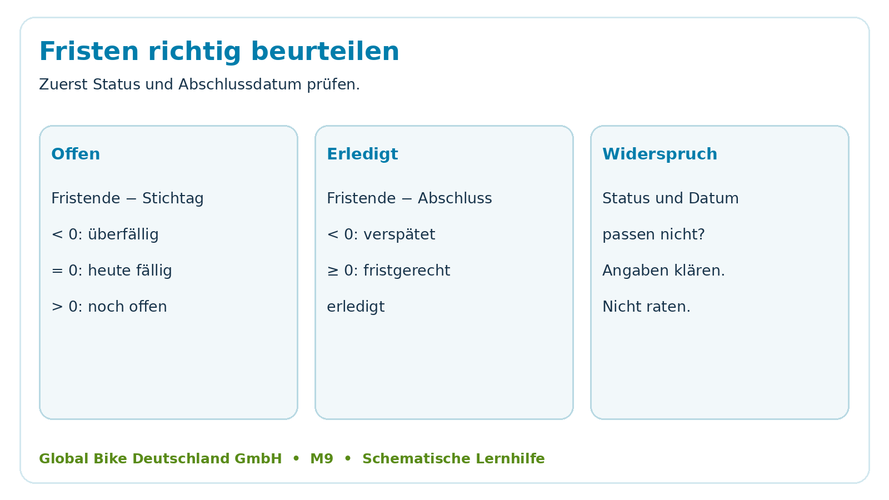
Zuerst den Bearbeitungsstatus prüfen. Bei offenen Aufgaben ohne Erledigungsdatum das Fristende mit dem Stichtag vergleichen. Bei erledigten Aufgaben das Fristende mit dem tatsächlichen Abschlussdatum vergleichen. Widersprüche, etwa Status Erledigt ohne Abschlussdatum, müssen geklärt werden. Ein Abschlussdatum nach dem Stichtag passt nicht zu einem bereits erledigten Vorgang in einer historischen Stichtagsauswertung.
Die Beurteilung kann anhand der berechneten Differenzen und einer dokumentierten Entscheidung erfolgen. Eine automatische Klassifikation mit WENN ist eine freiwillige Vertiefung, keine zusätzliche verbindliche Fachkompetenz. Für bereits geprüfte, vollständige Daten im Beispiel aus Abschnitt 13 ist folgende Formel in H2 möglich:
Die Formel setzt voraus, dass E nur die gültigen Statuswerte Offen und Erledigt enthält und G korrekt berechnet wurde. Sie ist keine Datenvalidierung. Bei widersprüchlichen oder fehlenden Eingaben darf keine scheinbar sichere Einstufung erfolgen.
10. Klick-Anleitungen zur Fristenüberwachung
A – Postliste vorbereiten
Neue Arbeitsmappe oder Kopie öffnen und Tabellenblatt sinnvoll benennen.
Überschriften für die benötigten Merkmale eintragen.
Daten zeilenweise übernehmen, IDs als Text und Datumsfelder als Datum formatieren.
Den Datenbereich markieren und über Start > Als Tabelle formatieren eine übersichtliche Tabelle anlegen. Die Option Tabelle hat Überschriften bestätigen.
Prüfen, ob jede ID eindeutig ist und alle Angaben einer Zeile zusammengehören.
B – Fristende und Tagesdifferenz
Ausgangsdatum und Fristdauer in getrennten Spalten erfassen.
Eine Spalte Fristende ergänzen. In der ersten Datenzeile die Additionsformel eingeben.
Enter drücken, Ergebnis als Datum formatieren und Formel über das Ausfüllkästchen nach unten kopieren. In einer formatierten Excel-Tabelle kann die Formel automatisch übernommen werden.
Den Stichtag außerhalb des Datenbereichs mit Beschriftung erfassen.
In einer weiteren Spalte für offene Aufgaben das Fristende minus den absolut referenzierten Stichtag berechnen.
Für erledigte Aufgaben stattdessen das Erledigungsdatum abziehen. Die jeweilige Formel anhand des Status auswählen. Bei einer späteren Statusänderung muss auch die Formel angepasst werden, sofern keine automatische Logik verwendet wird.
Differenzen als ganze Zahlen formatieren. Erste und letzte Formel sowie einen Monatswechsel kontrollieren.
C – Handlungsbedarf sichtbar machen
Die Spalte Fristenbeurteilung ergänzen und die Ergebnisse anhand der Entscheidungslogik eintragen.
Über den Filterpfeil dieser Spalte gezielt Überfällig oder Heute fällig auswählen. M10 erläutert Sortieren und Filtern ausführlich.
Bei Bedarf über Start > Bedingte Formatierung > Regeln zum Hervorheben von Zellen > Textinhalt Regeln für die Bezeichnungen anlegen, beispielsweise Überfällig rot, Heute fällig gelb.
Textbezeichnungen beibehalten: Farbe allein ist nicht ausreichend. Erledigte Aufgaben nicht als offene Fälle markieren.
Filter wieder aufheben und kontrollieren, ob alle Datensätze vorhanden sind.
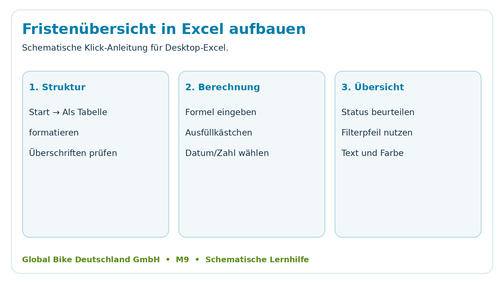
Manuelle Beurteilungen müssen nach einer Änderung von Stichtag, Frist oder Status erneut überprüft werden. Wer die freiwillige automatische Variante nutzt, prüft die Eingabedaten und testet die Formel für jeden Statusfall.
11. Interne Ablagefristen
Interne Ablagefristen legen fest, bis wann Unterlagen betrieblich geordnet und abgelegt werden sollen. Beispiele sind die Ablage von Angebotskopien oder Monatsunterlagen. Das Fristende wird aus der internen Vorgabe berechnet. Die Ablage muss tatsächlich erfolgt sein, bevor der Vorgang als erledigt gekennzeichnet wird.
Gesetzliche Aufbewahrungsfristen regeln dagegen, wie lange bestimmte Unterlagen aufzubewahren sind. Das Ende einer internen Ablagefrist ist keine Erlaubnis zur Vernichtung. M1 enthält ausschließlich interne Ablagefristen; gesetzliche Fristberechnungen sind nicht Gegenstand dieser Lernsituation.
12. Betriebliche Prioritäten setzen
Überfällige offene Aufgaben benötigen eine zeitnahe Prüfung. Heute fällige Aufgaben müssen ebenfalls berücksichtigt werden. Zukünftige Fristen sind einzuplanen. Innerhalb dieser Gruppen spielen Dringlichkeit, Auswirkungen auf Kunden, Abhängigkeiten und Zuständigkeit eine Rolle. Die älteste Frist ist nicht in jedem Fall automatisch die wichtigste Aufgabe.
Bei einer drohenden oder eingetretenen Überschreitung die zuständige Stelle informieren, Ursache klären und das weitere Vorgehen abstimmen. Fristen nicht eigenmächtig verlängern oder Erledigungsdaten erfinden. Die Tabelle liefert die Entscheidungsgrundlage, die Entscheidung bleibt eine betriebliche Aufgabe.
Unabhängige simulierte Schulungsdaten der Global Bike Deutschland GmbH, keine SAP-Daten und keine Lösung zu M1. Stichtag in K2: 15.09.2027.
Zeile
A – Aufgabe
B – Ausgang
C – Tage
D – Fristende
E – Status
F – Erledigt am
G – Differenz
H – Beurteilung
2
Rückmeldung
08.09.2027
5
13.09.2027
Offen
leer
−2
Überfällig
3
Unterlagen prüfen
10.09.2027
5
15.09.2027
Offen
leer
0
Heute fällig
4
Besprechung vorbereiten
12.09.2027
5
17.09.2027
Offen
leer
2
Noch offen
5
Kopien ablegen
08.09.2027
4
12.09.2027
Erledigt
11.09.2027
1
Fristgerecht erledigt
6
Liste aktualisieren
07.09.2027
4
11.09.2027
Erledigt
13.09.2027
−2
Verspätet erledigt
7
Unterlagen versenden
09.09.2027
3
12.09.2027
Erledigt
12.09.2027
0
Fristgerecht erledigt
D2: =B2+C2, bis D7 kopieren. G2: =D2-$K$2, bis G4 kopieren. G5: =D5-F5, bis G7 kopieren. Für eine automatische Auswahl der Differenzformel bei geprüften Daten kann freiwillig =WENN(E2="Erledigt";D2-F2;D2-$K$2) in G2 eingesetzt und nach unten kopiert werden. H anhand der Entscheidungslogik beurteilen oder freiwillig die Formel aus Abschnitt 9 verwenden.
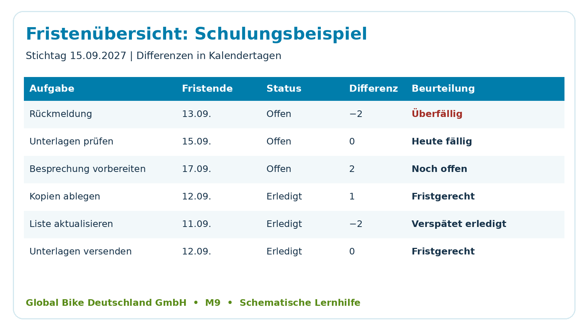
Die Rückmeldung ist überfällig, die Unterlagenprüfung heute fällig. Beide benötigen Aufmerksamkeit. Die Besprechungsvorbereitung ist einzuplanen. Die verspätete Listenaktualisierung ist bereits erledigt; hier geht es um die Ursachenanalyse, nicht um eine erneute Bearbeitung.
Funktionsprobe in einer Kopie: Stichtag auf 17.09.2027 ändern. Die offenen Differenzen werden −4, −2 und 0. Die Differenzen der erledigten Aufgaben bleiben 1, −2 und 0. Manuelle Beurteilungen aktualisieren. Anschließend den ursprünglichen Stichtag wiederherstellen.
14. Typische Fehler und deren Behebung
Fehler
Abhilfe
Datum als Text gespeichert
Datentyp prüfen und korrekt umwandeln
Fristdauer als Datum angezeigt
Zahlenformat mit null Dezimalstellen wählen
Fristende um einen Tag verschoben
Ausgangstag gemäß interner Regel nicht mitzählen
Wochenende übersprungen
Kalendertage statt Arbeitstage verwenden
Stichtag wandert beim Kopieren
Absoluten Bezug verwenden
Historische Auswertung verändert sich täglich
Festen Stichtag statt HEUTE verwenden
Negative Tagesdifferenz als Datum angezeigt
Zahlenformat verwenden
Erledigte Aufgabe als überfällig eingestuft
Erledigungsdatum statt Stichtag vergleichen
Status und Abschlussdatum widersprechen sich
Originalangaben prüfen, nicht raten
Leeres Datum erzeugt scheinbar gültiges Ergebnis
Eingaben vor Berechnung auf Vollständigkeit prüfen
Nur eine Spalte sortiert
Gesamten zusammenhängenden Datenbereich sortieren
Farbe ohne Textbezeichnung
Eindeutige Statusbezeichnung ergänzen
Ablagefrist als Löschfrist verstanden
Interne Ablage und gesetzliche Aufbewahrung unterscheiden
Neue Zeile ohne Formel
Berechnungsbereich erweitern und testen
15. Qualitätskontrolle und Wiederverwendbarkeit
Freiwillige Kontrolle: Sind IDs eindeutig, Datumswerte numerisch und plausibel, Fristdauern ganze Kalendertage und Statusangaben einheitlich? Sind offene Abschlussdaten leer und erledigte Abschlussdaten vorhanden? Liegt ein Abschluss nicht vor dem Ausgangsdatum oder nach dem Stichtag? Sind Fristende und Differenz korrekt formatiert? Ist der Stichtag zentral und absolut referenziert? Bleiben erledigte Differenzen bei einer Stichtagsänderung stabil? Werden neue Zeilen vollständig berücksichtigt? Sind manuelle Beurteilungen nach Änderungen aktualisiert? Bleiben Originaldaten erhalten?
Mindestens einen offenen, einen heute fälligen, einen überfälligen und einen erledigten Fall in einer Kopie prüfen. Einen Monatswechsel testen. Nach der Funktionsprobe Ausgangswerte wiederherstellen. Die Arbeitsmappe muss nachvollziehbar und für weitere Mitarbeitende nutzbar bleiben.
16. Freiwillige Selbstkontrolle
Was unterscheidet Posteingang und Postausgang?
Warum braucht jeder Postvorgang eine eindeutige ID?
Was unterscheidet Termin und Frist?
Wie lautet das Fristende bei 28.09.2027 plus fünf Kalendertagen?
Welche Formel berechnet das Fristende aus B3 und C3?
Warum ist HEUTE für eine historische Auswertung ungeeignet?
Wie lautet die kopierfähige Differenzformel für eine offene Aufgabe mit Fristende D3 und Stichtag K2?
Was bedeutet eine Differenz von −3 bei einer offenen Aufgabe?
Was bedeutet eine Differenz von null bei einer offenen Aufgabe?
Fristende 20.09., erledigt am 18.09.: Welche Differenz und Beurteilung ergeben sich?
Fristende 20.09., erledigt am 22.09.: Ist die Aufgabe noch überfällig?
Warum darf eine erledigte Aufgabe ohne Abschlussdatum nicht automatisch beurteilt werden?
Darf nach Ablauf einer internen Ablagefrist eine Unterlage vernichtet werden?
Warum reicht die Farbe Rot nicht als einzige Kennzeichnung?
Was ist bei einer Änderung des Stichtags mit manuell eingetragenen Beurteilungen zu tun?
Kontrollhinweise
Empfangene gegenüber versandten Vorgängen aus Sicht des dokumentierenden Bereichs.
Damit Vorgänge eindeutig zugeordnet und wiedergefunden werden.
Termin: bestimmter Zeitpunkt; Frist: Zeitraum bis zur Erledigung.
03.10.2027.
=B3+C3.
HEUTE liefert das aktuelle Systemdatum statt des festgelegten Auswertungsdatums.
=D3-$K$2.
Drei Kalendertage überfällig.
Heute fällig.
+2, fristgerecht erledigt.
Nein, sie ist verspätet erledigt; Differenz −2.
Der tatsächliche Abschlusszeitpunkt fehlt.
Nein, die interne Ablagefrist ist keine Lösch- oder Aufbewahrungsfrist.
Text ist eindeutiger und auch ohne Farbwahrnehmung verständlich.
Erneut anhand der aktualisierten Differenzen prüfen und anpassen.
Keine zusätzliche Abgabe oder Bewertung.
17. Weiterführende Materialien
M3 unterstützt die Tabellenstruktur, M4 die Datumsformate, M5 die Formelerstellung und M7 die absoluten Zellbezüge. M10 vertieft Sortieren, Filtern und Rangfolgen. M14 behandelt die Qualitätskontrolle und Wiederverwendbarkeit. M9 bleibt während der gesamten Lernsituation verfügbar.
1. Bedeutung für die betriebliche Büroorganisation
Eine umfangreiche Liste ist erst dann eine zuverlässige Arbeitsgrundlage, wenn die benötigten Informationen schnell auffindbar sind. In der Verwaltung müssen beispielsweise offene Geschäftsvorgänge gefunden, Fristen nach Dringlichkeit geordnet und Büroausgaben verglichen werden. Sortieren und Filtern unterstützen diese Aufgaben, ohne dass die Daten erneut erfasst werden müssen. Eine Rangfolge zeigt die Position eines Wertes im Vergleich zu anderen Werten. Sie ersetzt keine kaufmännische Beurteilung.
M1 liefert die verbindlichen Ausgangsdaten. Die folgenden Beispiele sind davon unabhängige simulierte Schulungsdaten der Global Bike Deutschland GmbH, keine SAP-Daten und keine Hauptfalllösungen.
Ein Filter löscht keine Daten. Eine Sortierung verändert dagegen die Reihenfolge tatsächlich. Das Entfernen eines Filters stellt alle Zeilen wieder dar, macht aber eine Sortierung nicht rückgängig. Eine ursprüngliche Reihenfolge lässt sich beispielsweise über eine zuvor gespeicherte laufende Nummer wiederherstellen. IDs dürfen dabei nicht neu vergeben werden.
3. Alphabetische, numerische und chronologische Sortierung
Text wird alphabetisch, Zahlen werden nach ihrer Größe und echte Datumswerte zeitlich sortiert. Aufsteigend bedeutet A bis Z, klein nach groß oder alt nach neu. Absteigend bedeutet die umgekehrte Richtung.
Merkmal
Aufsteigend
Absteigend
Zuständigkeit
A bis Z
Z bis A
Nettobetrag
Kleinster zuerst
Größter zuerst
Fristende
Frühestes zuerst
Spätestes zuerst
Tagesdifferenz offener Aufgaben
Negativste zuerst
Größte zuerst
Klick-Anleitung für eine Excel-Tabelle: Eine Zelle der gewünschten Spalte auswählen, Daten > Sortieren und Filtern > passende Sortierrichtung wählen. Alternativ den Pfeil in der Spaltenüberschrift öffnen und den entsprechenden Sortierbefehl auswählen. Die genaue Beschriftung hängt vom Datentyp und der Excel-Version ab. Ergebnis anhand der ersten und letzten Zeile prüfen.
Bei Zahlen, die als Text gespeichert sind, kann beispielsweise 100 vor 20 erscheinen. Ein Datumsformat allein wandelt Text nicht in echte Datumswerte um. M4 und M9 erläutern die Prüfung der Datentypen.
4. Sortieren nach mehreren Kriterien
Bei mehreren Sortierebenen bestimmt die erste Ebene die Hauptreihenfolge. Die zweite Ebene ordnet nur Datensätze mit gleichem Wert der ersten Ebene. Weitere Ebenen wirken entsprechend.
Beispiel: Die Verwaltung möchte Vorgänge zunächst nach Zuständigkeit gruppieren und innerhalb jeder Zuständigkeit nach Fristende ordnen.
Klick-Anleitung:
Eine Zelle innerhalb der vollständigen Tabelle auswählen.
Daten > Sortieren öffnen.
Bei einer normalen Liste den gesamten Datenbereich einschließlich Überschriften berücksichtigen; Daten haben Überschriften aktivieren.
Erste Ebene: Zuständigkeit, Zellwerte, A bis Z.
Ebene hinzufügen: Fristende, Zellwerte, älteste bis neueste.
Bei Bedarf eine weitere Ebene mit eindeutiger Vorgangs-ID ergänzen.
Mit OK bestätigen und prüfen, ob innerhalb jeder Zuständigkeit die Datumsreihenfolge stimmt.
Eine Sortierung nach Status in alphabetischer Reihenfolge ist keine automatische Dringlichkeitsreihenfolge. Für offene Aufgaben kann nach vorherigem Statusfilter das Fristende oder die Tagesdifferenz sortiert werden.
5. Zusammengehörige Datensätze erhalten
Eine Zeile bildet einen vollständigen Vorgang oder Kostenbeleg. Beim Sortieren müssen ID, Datum, Zuständigkeit, Status und alle zugehörigen Werte gemeinsam verschoben werden. Eine isoliert sortierte Datumsspalte kann falsche Zuordnungen erzeugen, obwohl die einzelnen Datumswerte korrekt aussehen.
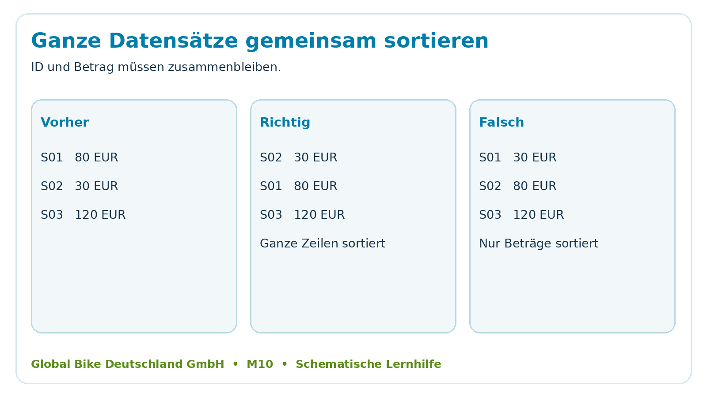
Bei einer normalen Liste kann Excel fragen, ob die Auswahl erweitert werden soll. Auswahl erweitern wählen, sofern die angrenzenden Spalten zum Datensatz gehören. Vorher sicherstellen, dass der vollständige Datenbereich erkannt wird. Eine formatierte Excel-Tabelle erleichtert das gemeinsame Sortieren. Summen, Stichtage und sonstige Parameter außerhalb der Datensätze halten. Keine verbundenen Zellen oder Leerzeilen innerhalb der Liste verwenden.
Nach dem Sortieren mindestens zwei IDs mit den ursprünglichen Angaben vergleichen. Formeln und Zuordnungen ebenfalls prüfen: Insbesondere Bezüge auf feste Positionen innerhalb eines sortierten Bereichs können nach der Sortierung eine andere fachliche Bedeutung haben. Ein absoluter Zellbezug fixiert eine Adresse, nicht die Identität eines Datensatzes.
6. Filter einrichten und verwenden
Klick-Anleitung für eine normale Liste:
Vollständigen Datenbereich mit eindeutigen Überschriften markieren.
Daten > Filter auswählen (alternativ Strg+Umschalt+L unter Windows).
Pfeil der gewünschten Spaltenüberschrift öffnen.
Auswahl Alle auswählen deaktivieren und benötigte Werte markieren.
Mit OK bestätigen.
Sichtbare Zeilen und Filtersymbol prüfen.
Formatierte Excel-Tabellen besitzen üblicherweise bereits Filterpfeile. Filter nicht unnötig erneut einschalten oder ausschalten.
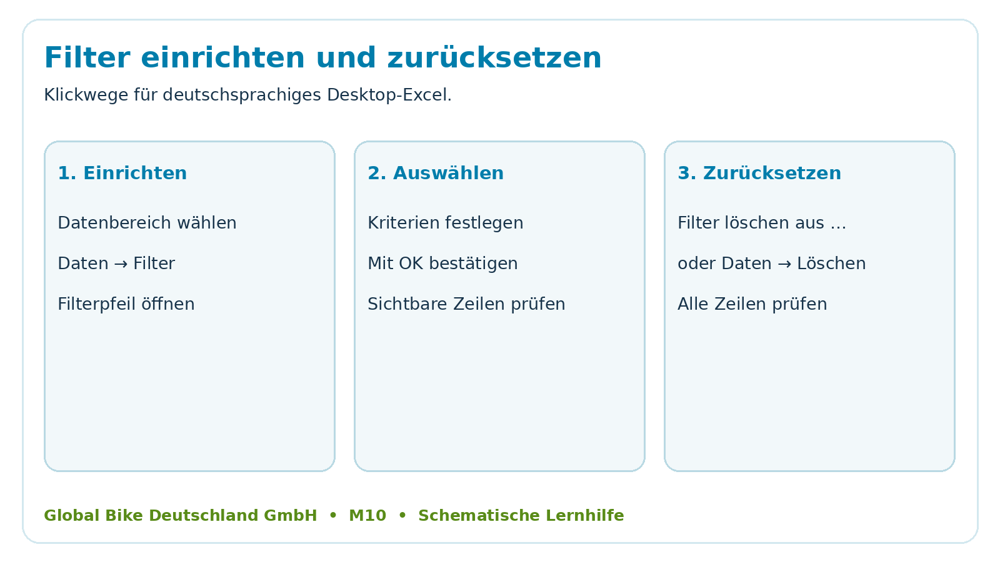
Um einen einzelnen Filter zu entfernen, den betreffenden Pfeil öffnen und Filter löschen aus der betreffenden Spalte wählen. Daten > Löschen in der Gruppe Sortieren und Filtern entfernt die Filterkriterien des aktiven Bereichs, ohne die Daten zu löschen. Nicht mit dem Löschen von Zellinhalten verwechseln. Daten > Filter schaltet die Filterfunktion einer normalen Liste aus. Ausgeblendete Zeilen nicht versehentlich als fehlende Datensätze behandeln.
7. Text-, Zahlen- und Datumsfilter
Filterart
Beispiel
Zweck
Textfilter
Ist gleich Offen
Bearbeitungsstand auswählen
Textfilter
Enthält Ablage
Aufgaben mit passendem Text finden
Zahlenfilter
Kleiner als 0
Negative Tagesdifferenzen finden
Zahlenfilter
Größer oder gleich 100
Beträge ab 100 EUR auswählen
Datumsfilter
Vor 15.09.2027
Frühere Datumswerte finden
Datumsfilter
Zwischen zwei Daten
Zeitraum auswählen
Klick-Anleitung: Filterpfeil der Spalte öffnen, Textfilter, Zahlenfilter oder Datumsfilter wählen, Vergleichsbedingung auswählen, Vergleichswert eingeben und bestätigen. Die angebotene Filterart richtet sich nach den gespeicherten Datentypen. Bei Datumsfiltern kann Excel Werte zusätzlich nach Jahren und Monaten gruppieren. Für historische Auswertungen feste Datumsgrenzen verwenden, nicht relative Optionen wie Heute oder Diesen Monat.
Bei einem benutzerdefinierten Filter derselben Spalte können zwei Bedingungen mit UND oder ODER kombiniert werden. UND verlangt beide Bedingungen, ODER mindestens eine. Beispiel: Betrag größer oder gleich 50 UND kleiner oder gleich 100 schließt beide Grenzwerte ein. Bei Datumsgrenzen ebenfalls prüfen, ob die Grenze ein- oder ausgeschlossen ist.
8. Mehrere Filterkriterien kombinieren
Filter auf unterschiedlichen Spalten wirken gemeinsam als UND-Verknüpfung. Wer Status Offen und Zuständigkeit Verwaltung auswählt, sieht nur offene Vorgänge der Verwaltung. Wer innerhalb einer Werteliste derselben Spalte Offen und Erledigt auswählt, lässt beide Werte zu (ODER).
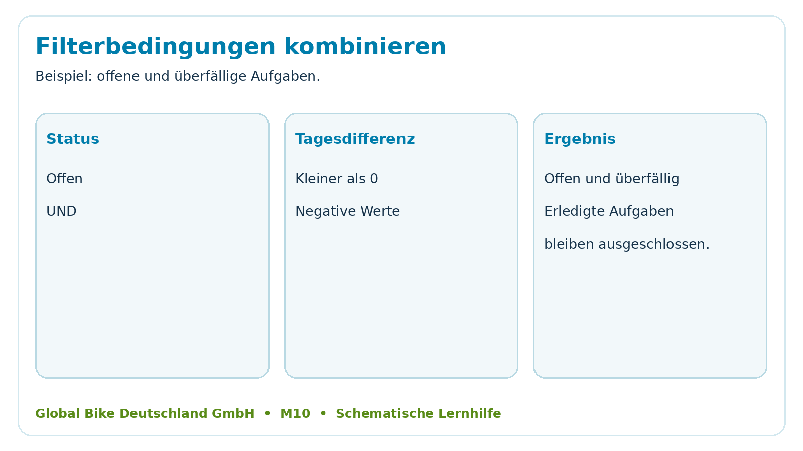
Beispiel: Eine offene Aufgabe mit negativer Tagesdifferenz ist überfällig. Eine erledigte Aufgabe mit negativer Differenz ist verspätet erledigt und darf nicht als noch überfällig behandelt werden. Deshalb genügt ein Zahlenfilter kleiner als null allein nicht.
Nach Änderung von Eingabewerten oder Formelergebnissen können Filterergebnisse veraltet sein. Daten > Erneut anwenden nutzen oder den Filter neu setzen und die sichtbaren Datensätze kontrollieren.
9. Offene und überfällige Vorgänge identifizieren
M9 erläutert die Berechnung der Tagesdifferenzen. Im Hauptfall gilt der feste Stichtag 01.07.2027; die Fristen werden nach der internen Kalendertagsregel aus M1 beurteilt. Für offene Aufgaben bedeutet eine negative Differenz überfällig, null heute fällig und ein positiver Wert zukünftig fällig.
Klick-Anleitung:
Vollständigkeit der Fristenliste und Plausibilität von Status und Erledigungsdatum prüfen.
Statusfilter auf Offen setzen.
Zahlenfilter in der Differenzspalte auf Kleiner als 0 setzen.
Nach Fristende aufsteigend sortieren, um die ältesten offenen Fristen zuerst zu sehen.
Für heute fällige Aufgaben den Zahlenfilter auf Gleich 0 ändern; für beide Gruppen zusammen Kleiner oder gleich 0 wählen.
Zuständigkeit bei Bedarf zusätzlich filtern.
Ergebnisse beurteilen, zuständige Stellen identifizieren und Filter anschließend zurücksetzen.
Eine bereits verspätet erledigte Aufgabe kann Anlass für eine Ursachenanalyse sein. Sie ist aber kein offener Bearbeitungsauftrag. Eine bevorstehende Frist kann wegen ihrer Auswirkungen wichtiger sein als eine ältere Frist. Prioritäten werden deshalb nicht allein aus der Sortierreihenfolge abgeleitet.
10. Rangfolgen erstellen
Eine Rangfolge kann durch absteigendes Sortieren sichtbar gemacht werden. Soll der Rang auch bei anderer Sortierreihenfolge erhalten bleiben, kann Excel ihn berechnen. Für die Kostenpositionen ist zunächst zu klären, welche Vergleichseinheit gemeint ist: einzelne Belege oder zusammengefasste Kostenarten. Für eine Rangfolge der Kostenarten müssen gleichartige Belege zunächst zusammengefasst werden. Einzelbelege und Kostenartensummen dürfen nicht vermischt werden.
Die Funktion RANG.GLEICH ist eine mögliche technische Umsetzung. Sie wird als Lernhilfe erläutert; die verbindliche Kompetenz ist die fachlich korrekte Rangfolge.
Syntax: =RANG.GLEICH(Zahl;Bezug;[Reihenfolge]). Reihenfolge 0 oder weggelassen bedeutet größter Wert erhält Rang 1; Reihenfolge 1 bedeutet kleinster Wert erhält Rang 1.
Beispiel: In B2:B6 stehen fünf Kostenartensummen. In C2 steht =RANG.GLEICH(B2;$B$2:$B$6;0). Der Vergleichsbereich bleibt beim Kopieren fest, der Einzelwert verändert sich zeilenweise.
Klick-Anleitung: Rangspalte ergänzen, Formel in erster Datenzeile eingeben, Enter drücken, Formel nach unten kopieren, Rang als ganze Zahl formatieren, anschließend Vergleichsbereich und Rang 1 prüfen. Bei Erweiterung einer normalen Liste den absoluten Vergleichsbereich erweitern. Eine Excel-Tabelle mit strukturierten Bezügen kann den Bereich automatisch erweitern; beispielsweise =RANG.GLEICH([@Kosten];Kostenliste[Kosten];0) in einer Tabelle namens Kostenliste mit Spalte Kosten.
11. Umgang mit gleichen Rangwerten
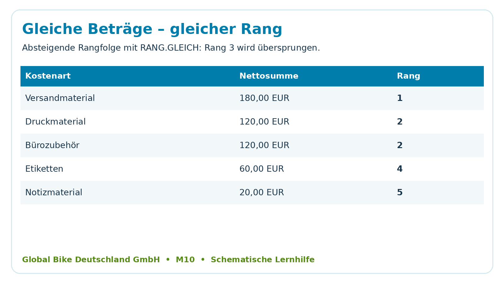
Kostenart
Nettosumme
Rang absteigend
Versandmaterial
180,00 EUR
1
Druckmaterial
120,00 EUR
2
Bürozubehör
120,00 EUR
2
Etiketten
60,00 EUR
4
Notizmaterial
20,00 EUR
5
Gleiche Werte erhalten bei RANG.GLEICH denselben Rang. Der nächste Rang wird entsprechend übersprungen. Eine laufende Nummer 1 bis 5 wäre hier keine korrekte Rangfolge nach Kostenhöhe. Für die Darstellung können gleichrangige Kostenarten zusätzlich alphabetisch sortiert werden; dadurch ändert sich ihr fachlicher Rang nicht. RANG.MITTELW ist eine andere mögliche Rangkonvention, aber nicht erforderlich. Keine willkürlichen Unterschiede bei gleichen Beträgen erfinden.
12. Auswirkungen von Filtern auf Berechnungen
SUMME, MIN, MAX, MITTELWERT und RANG.GLEICH berücksichtigen weiterhin die Werte ihres angegebenen Bereichs, auch wenn Zeilen durch einen Filter ausgeblendet sind. Ein Filter verändert daher nicht automatisch den Gesamtwert oder die Rangposition. Für eine Auswertung nur sichtbarer Zeilen kann TEILERGEBNIS als freiwillige Vertiefung verwendet werden.
Die Funktionen 9 und 109 stehen für Summen. Bei einer formatierten Tabelle kann über Tabellenentwurf > Ergebniszeile eine sichtbarkeitsabhängige Summe gewählt werden. Ergebniszeile und Gesamtwert eindeutig beschriften. Die Ergebniszeile nicht zusätzlich in den eigenen Summenbereich aufnehmen.
Beispiel aus Abschnitt 11: Gesamtsumme 500 EUR. Filter Nettosumme größer oder gleich 120 EUR: sichtbar sind 180, 120 und 120 EUR. SUMME bleibt 500 EUR; TEILERGEBNIS ergibt 420 EUR. Nach Entfernen des Filters beträgt auch das Teilergebnis wieder 500 EUR, sofern keine manuell ausgeblendeten Zeilen bei Funktion 109 vorliegen. Prozentuale Anteile am Gesamtbudget dürfen nicht versehentlich auf eine gefilterte Teilsumme bezogen werden.
Unabhängige Schulungsdaten, Stichtag 15.09.2027. Die Differenz ist bei offenen Aufgaben Fristende minus Stichtag, bei erledigten Aufgaben Fristende minus Abschlussdatum.
ID
Aufgabe
Zuständigkeit
Fristende
Status
Erledigt am
Differenz
S01
Rückmeldung
Verkauf
13.09.2027
Offen
leer
−2
S02
Unterlagen prüfen
Verwaltung
15.09.2027
Offen
leer
0
S03
Besprechung vorbereiten
Verwaltung
17.09.2027
Offen
leer
2
S04
Kopien ablegen
Verwaltung
12.09.2027
Erledigt
11.09.2027
1
S05
Liste aktualisieren
Verwaltung
11.09.2027
Erledigt
13.09.2027
−2
S06
Unterlagen versenden
Auftragsbearbeitung
12.09.2027
Erledigt
12.09.2027
0
S07
Anfrage klären
Verkauf
12.09.2027
Offen
leer
−3
S08
Ablage prüfen
Verwaltung
14.09.2027
Offen
leer
−1
Auswertung A: Status Offen, Differenz kleiner als null, Fristende aufsteigend. Ergebnis S07, S01, S08. S05 ist ausgeschlossen, weil erledigt.
Auswertung B: Status Offen, Differenz kleiner oder gleich null, Zuständigkeit Verwaltung. Ergebnis S02 und S08; nach Fristende aufsteigend S08, S02.
Auswertung C: Alle Filter entfernen, Zuständigkeit A bis Z, innerhalb der Zuständigkeit Fristende aufsteigend. Reihenfolge S06, S07, S01, S05, S04, S08, S02, S03.
Betriebliche Beurteilung: Verkauf muss die beiden überfälligen offenen Rückmeldungen prüfen, Verwaltung die überfällige Ablageprüfung und die heute fällige Unterlagenprüfung. Die verspätete Listenaktualisierung kann separat untersucht werden. Die genaue Bearbeitungsreihenfolge ist mit den zuständigen Stellen unter Berücksichtigung der Auswirkungen abzustimmen.
Kostenbeispiel: Die fünf Kostenartensummen aus Abschnitt 11 werden absteigend sortiert und mit RANG.GLEICH ausgewertet. Versandmaterial hat den höchsten Anteil an den betrachteten Kosten. Das ist ein Anlass zur Prüfung des Bedarfs, aber kein Beweis für unnötige Ausgaben. Die beiden gleich hohen Kostenarten bleiben gleichrangig.
Funktionsprobe: In einer Kopie die Kosten für Notizmaterial von 20 auf 200 EUR ändern. Neue Gesamtsumme 680 EUR; Notizmaterial Rang 1, Versandmaterial Rang 2, Druckmaterial und Bürozubehör Rang 3, Etiketten Rang 5. Filter erneut anwenden, falls aktiv. Ursprüngliche Werte anschließend wiederherstellen.
14. Typische Fehler und deren Behebung
Fehler
Abhilfe
Nur eine Spalte sortiert
Vollständige Datensätze gemeinsam sortieren
Überschrift als Datenzeile behandelt
Überschriftenoption prüfen
Zahlen als Text gespeichert
Datentyp korrigieren
Datumswerte alphabetisch sortiert
Echte Excel-Datumswerte verwenden
Summenzeile mitsortiert
Auswertungsbereich getrennt halten
Sortierebenen vertauscht
Hauptkriterium zuerst festlegen
Filter mit Löschen verwechselt
Filter zurücksetzen statt Zeilen löschen
Filterkriterien übersehen
Filtersymbole und sichtbare Zeilen prüfen
Erledigte verspätete Aufgabe als offen gewertet
Status zusätzlich filtern
Filter nach Datenänderung nicht aktualisiert
Erneut anwenden
Rangbereich wandert beim Kopieren
Vergleichsbereich absolut referenzieren
Gleiche Beträge erhalten willkürlich verschiedene Ränge
Rangkonvention beachten
Belege und Kostenartensummen vermischt
Vergleichseinheit festlegen
SUMME als sichtbare Teilsumme interpretiert
Gesamt- und Teilsumme unterscheiden
Neue Zeilen fehlen im Filter oder Rangbereich
Bereich erweitern und prüfen
Rang als automatische Sparentscheidung verstanden
Bedarf und betriebliche Folgen beurteilen
15. Qualitätskontrolle und Wiederverwendbarkeit
Freiwillige Kontrolle: Sind die Überschriften eindeutig, Datentypen korrekt und IDs unverändert? Stimmen die zugehörigen Werte nach dem Sortieren? Sind alle Datensätze nach Entfernen der Filter wieder sichtbar? Sind Sortierebenen und Filterbedingungen fachlich begründet? Werden offene und erledigte Vorgänge korrekt unterschieden? Sind Rangrichtung, Vergleichseinheit und Gleichstände nachvollziehbar? Bleiben Gesamtsummen beim Filtern unverändert, sofern sie alle Daten umfassen sollen? Werden neue Zeilen berücksichtigt? Sind Formeln nach einer Sortierung noch fachlich korrekt?
Vor Weitergabe der Arbeitsmappe den vorgesehenen Filterzustand dokumentieren. Für eine vollständige Ausgangsansicht alle Filter zurücksetzen. Für eine gezielte Arbeitsansicht die aktiven Kriterien kenntlich machen. Funktionsproben nur in einer Kopie oder mit anschließender Wiederherstellung durchführen. Originaldaten aus M1 bleiben erhalten.
16. Freiwillige Selbstkontrolle
Was unterscheidet Sortieren und Filtern?
Werden ausgefilterte Zeilen gelöscht?
Wie werden echte Datumswerte vom frühesten zum spätesten sortiert?
Warum darf nicht nur die Datumsspalte sortiert werden?
Welche Ebene wirkt bei einer mehrstufigen Sortierung zuerst?
Wie lassen sich nur offene Vorgänge der Verwaltung anzeigen?
Welche Filterbedingungen finden offene überfällige Aufgaben?
Warum reicht eine negative Differenz allein nicht?
Was bedeutet UND bei zwei Filterkriterien?
Wie lässt sich ein Filter nach einer Datenänderung aktualisieren?
Welche Rangfolge ergibt sich für 90, 70, 70 und 40 bei absteigender Rangbildung mit RANG.GLEICH?
Warum wird der Vergleichsbereich beim Kopieren einer Rangformel absolut referenziert?
Welche Werte berücksichtigt SUMME bei einem Filter?
Was unterscheidet TEILERGEBNIS mit 9 und 109?
Warum ist der höchste Kostenrang nicht automatisch eine Sparentscheidung?
Was muss bei einer neu hinzugefügten Zeile überprüft werden?
Kontrollhinweise
Sortieren ändert die Reihenfolge, Filtern die sichtbare Auswahl.
Nein.
Aufsteigend, älteste bis neueste.
Sonst können Daten verschiedenen Vorgängen falsch zugeordnet werden.
Die erste Ebene.
Status Offen UND Zuständigkeit Verwaltung.
Status Offen UND Differenz kleiner als null.
Auch verspätet erledigte Aufgaben können negative Differenzen haben.
Beide Bedingungen müssen erfüllt sein.
Daten > Erneut anwenden oder Filter neu setzen.
1, 2, 2, 4.
Damit alle Einzelwerte mit demselben Bereich verglichen werden.
Alle Werte des angegebenen Bereichs, auch ausgefilterte.
Beide ignorieren ausgefilterte Zeilen; 109 ignoriert zusätzlich manuell ausgeblendete Zeilen.
Bedarf, Alternativen und betriebliche Folgen müssen berücksichtigt werden.
Datenbereich, Filter, Formeln, Rangbereich und Auswertungen.
Keine zusätzliche Abgabe oder Bewertung.
17. Weiterführende Materialien
M3 erläutert Tabellenstruktur, M4 Datentypen, M6 Funktionen, M7 Zellbezüge, M8 Prozentanteile und M9 Fristen. M11 und M12 vertiefen grafische Auswertungen, M14 die Qualitätskontrolle. M10 bleibt während der gesamten Lernsituation verfügbar.
M11 – Diagrammtypen kennen, unterscheiden und begründet auswählen
Global Bike Deutschland GmbH – Verwaltung
1. Warum grafische Auswertungen?
In internen Besprechungen benötigt die Verwaltung schnell verständliche Informationen. Eine Tabelle liefert genaue Einzelwerte; ein Diagramm macht Unterschiede, Entwicklungen und Größenverhältnisse sichtbar. Beide Darstellungen ergänzen sich. Ein Diagramm ersetzt weder die Quelldaten noch die Prüfung der Berechnungen. Eine optisch ansprechende Grafik ist nur dann nützlich, wenn sie die betriebliche Frage korrekt beantwortet.
Die Beispiele in M11 sind eigenständige simulierte Schulungsdaten der Global Bike Deutschland GmbH, keine SAP-Daten. Die Ausgangsdaten aus M1 bleiben unverändert. Die Diagrammauswahl für das eigentliche Lernpaket bleibt offen.
2. Grundbegriffe
Begriff
Bedeutung
Diagrammtyp
Grundform der grafischen Darstellung
Kategorie
Bezeichnung eines dargestellten Merkmals, etwa Kostenart
Bezeichnung der dargestellten Größe und gegebenenfalls Einheit
Achsenbeschriftung
Kategorien oder Skalenwerte entlang einer Achse
Legende
Zuordnung von Farben oder Symbolen zu Datenreihen bzw. Kategorien
Datenbeschriftung
Wert oder Kategorie direkt am Datenpunkt
Skalierung
Wertebereich und Abstände der Zahlenachse
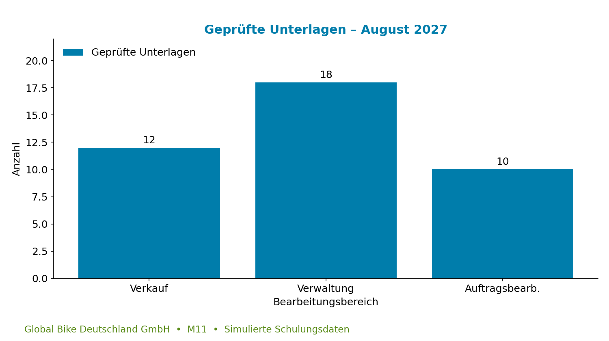
Bei Säulen- und Liniendiagrammen liegt die Kategorien- oder Zeitachse meist waagerecht, die Werteachse senkrecht. Beim Balkendiagramm ist dies umgekehrt. Ein Kreisdiagramm besitzt keine Achsen. Achsentitel werden dort nicht künstlich ergänzt; Kategorien und Anteile müssen dennoch eindeutig erkennbar sein.
3. Die vier grundlegenden Diagrammtypen
3.1 Säulendiagramm
Senkrechte Säulen zeigen die Größe von Werten durch ihre Höhe. Die Säulen stehen nebeneinander; jede gehört zu einer Kategorie oder einem Zeitpunkt.
Stärken: Größenunterschiede sind schnell erkennbar; wenige Kategorien oder Zeitpunkte lassen sich gut vergleichen; gruppierte Säulen ermöglichen den Vergleich mehrerer Datenreihen gleicher Einheit.
Grenzen: Viele oder lange Kategorienamen erschweren die Lesbarkeit. Bei vielen Zeitpunkten wird die Entwicklung unübersichtlich. Eine abgeschnittene Werteachse kann Unterschiede übertreiben.
Schulungsbeispiel: In einer internen Dokumentenprüfung wurden im August 12, 18 und 10 Unterlagen in drei Bearbeitungsbereichen geprüft. Die Säulen zeigen den Mengenvergleich. Die Anzahl allein erlaubt keine Aussage über Arbeitsqualität oder Arbeitsbelastung.
3.2 Balkendiagramm
Waagerechte Balken zeigen die Größe eines Wertes durch ihre Länge. Kategorien stehen links, Werte auf der waagerechten Achse.
Stärken: Besonders lesbar bei langen Kategorienamen; geeignet für Rangfolgen und Größenvergleiche; absteigende Sortierung macht Unterschiede schnell sichtbar.
Grenzen: Zeitliche Entwicklungen sind weniger unmittelbar erkennbar; zu viele Balken erschweren die Übersicht. Auch hier muss die Längenskala grundsätzlich bei null beginnen.
Schulungsbeispiel: Vier Arten von Büroverbrauchsmaterial verursachen im August 150, 90, 40 und 20 EUR netto. Die Beträge können absteigend verglichen werden. Der größte Betrag ist nicht automatisch eine unnötige Ausgabe.
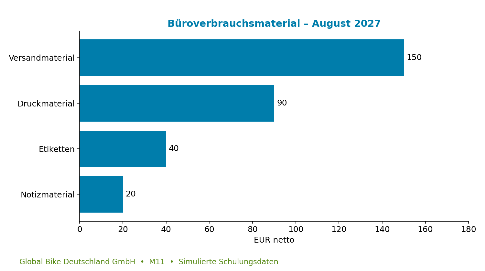
3.3 Liniendiagramm
Datenpunkte werden in ihrer zeitlichen Reihenfolge durch Linien verbunden. Steigende, fallende und gleichbleibende Entwicklungen werden sichtbar.
Stärken: Trends und Schwankungen über mehrere Zeitpunkte; Vergleich mehrerer zeitlich ausgerichteter Datenreihen; kompakte Darstellung.
Grenzen: Ungeordnete Kategorien erhalten durch Verbindung eine irreführende Reihenfolge. Fehlende Werte sind nicht automatisch null. Bei unregelmäßigen Zeitabständen ist eine geeignete Datumsachse oder ein XY-Diagramm mit tatsächlichen Abständen erforderlich. Eine Linie zwischen Monatswerten beweist keine kontinuierlich gemessene Entwicklung zwischen diesen Punkten.
Schulungsbeispiel: In vier aufeinanderfolgenden Monaten wurden 8, 12, 9 und 15 interne Prüfungen abgeschlossen. Der letzte Wert ist der höchste; die Reihe steigt nicht durchgehend. Eine Prognose für den nächsten Monat ist daraus nicht gesichert.
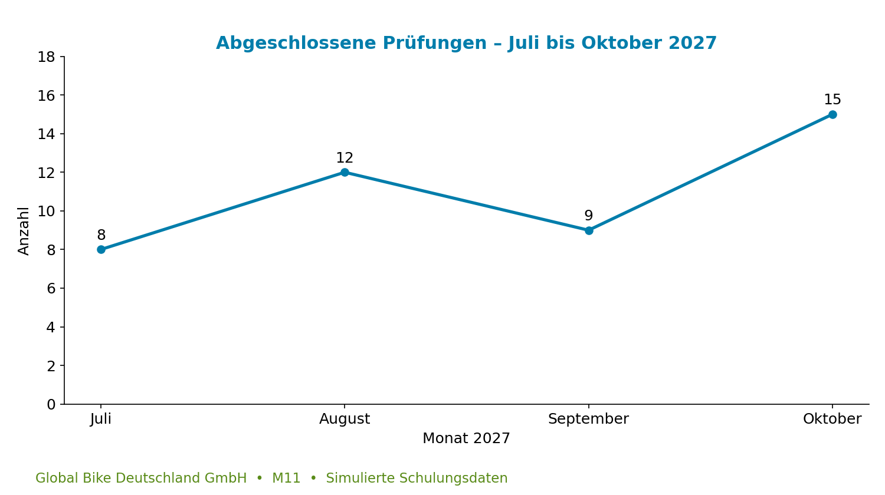
3.4 Kreisdiagramm
Ein Kreis stellt ein Ganzes dar. Kreissektoren zeigen die Anteile einzelner Kategorien an diesem Ganzen. Der gesamte Kreis entspricht 100 Prozent.
Stärken: Wenige klar unterscheidbare Anteile sind leicht erkennbar; besonders geeignet für die Frage, welche Teile ein eindeutig definiertes Ganzes bilden.
Grenzen: Ähnliche Anteile sind schwer zu vergleichen; viele kleine Sektoren sind unübersichtlich. Negative Werte, mehrere unabhängige Gesamtheiten oder zeitliche Entwicklungen sind ungeeignet. Bei einer Gesamtsumme von null sind Anteile nicht definiert. Ein Kreisdiagramm zeigt normalerweise eine Datenreihe.
Schulungsbeispiel: Die vier Kostenarten aus Abschnitt 3.2 ergeben 300 EUR. Die Anteile betragen 50 %, 30 %, rund 13,33 % und rund 6,67 %. Das Diagramm zeigt Anteile an diesen 300 EUR, nicht an einem anderen Budget. Die Gesamtzeile darf nicht als zusätzlicher Sektor ausgewählt werden.
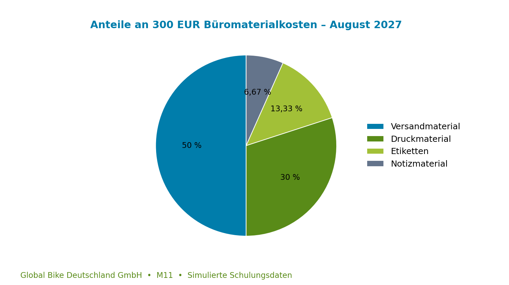
4. Vergleich der Einsatzmöglichkeiten
Fragestellung
Geeignete Grundform
Begründung
Welche Kategorien haben größere oder kleinere Werte?
Säulen oder Balken
Höhen bzw. Längen direkt vergleichbar
Wie sieht eine Rangfolge mit langen Bezeichnungen aus?
Balken
Kategorien bleiben gut lesbar
Wie verändern sich Werte über die Zeit?
Linie, bei wenigen Zeitpunkten auch Säulen
Verlauf bzw. einzelne Zeitwerte erkennbar
Wie setzt sich ein Gesamtbetrag zusammen?
Kreis, alternativ Balken mit Anteilen
Teile eines definierten Ganzen
Wie lauten exakte Einzelwerte?
Tabelle, ergänzend Diagramm
Präzise Werte bleiben verfügbar
Mehrere Diagrammtypen können fachlich geeignet sein. Die Wahl hängt von der Fragestellung, den Ausgangsdaten und der Zielgruppe ab. Ein Diagrammtyp ist nicht allein deshalb richtig, weil Excel ihn empfiehlt.
5. Entscheidungsweg
Aussageziel klären: Vergleich, Rangfolge, zeitliche Entwicklung oder Anteil?
Zielgruppe berücksichtigen: Welche Information muss in einer Besprechung schnell erkennbar sein?
Mindestens zwei grundsätzlich geeignete Darstellungen gedanklich vergleichen.
Diagrammtyp auswählen und begründen.
Prüfen, ob die Darstellung tatsächlich die gewünschte Aussage ermöglicht.
Begründungsstruktur: Aussageziel – Eigenschaften der Daten – Vorteil der gewählten Darstellung – Grenze einer Alternative. Eine bloße Aussage wie „Das sieht besser aus“ reicht nicht.
6. Daten für ein Diagramm vorbereiten
Die Datenquelle benötigt eindeutige Überschriften, zusammengehörige Kategorien und numerische Werte. Geldbeträge, Stückzahlen und Prozentwerte sind verschiedene Einheiten und dürfen nicht ohne sachliche Erklärung auf derselben Werteachse verglichen werden.
Beispiel für die unabhängigen August-Kosten:
A: Kostenart
B: Betrag netto EUR
C: Anteil
Versandmaterial
150
50 %
Druckmaterial
90
30 %
Etiketten
40
13,33 %
Notizmaterial
20
6,67 %
Gesamt
300
100 %
Bei Überschriften in Zeile 1 lautet B6 =SUMME(B2:B5) und C2 =B2/$B$6. C2 bis C5 kopieren und als Prozent formatieren. C6 kann mit =SUMME(C2:C5) kontrolliert werden. Die Prozentwerte intern nicht vorzeitig runden. Für ein Betragsdiagramm A1:B5 markieren, nicht die Gesamtzeile. Für ein Kreisdiagramm genügen ebenfalls die vier positiven Beträge; Excel berechnet die Sektoranteile aus ihrer Summe. Alternativ können die vier berechneten Anteile verwendet werden, nicht Beträge und Anteile zugleich.
Leere Werte bedeuten fehlende Information, nicht automatisch null. Vor der Darstellung klären, ob tatsächlich kein Vorgang vorliegt oder die Meldung fehlt. Bei gefilterten Daten prüfen, welche Zeilen im Diagramm erscheinen. Excel stellt ausgeblendete Zeilen standardmäßig häufig nicht dar; die Einstellung kann je nach Diagramm und Version geändert werden.
7. Klick-Anleitung: Diagrammtypen ausprobieren
Die folgenden Wege beziehen sich auf deutschsprachiges Desktop-Excel unter Windows. Menübezeichnungen können je nach Version abweichen. M12 vertieft die Gestaltung.
Einfügen > Linien- oder Flächendiagramm einfügen > 2D-Linie > Linie mit Datenpunkten
Kreis
Einfügen > Kreis- oder Ringdiagramm einfügen > 2D-Kreis
Für eine Vorschau kann auch Einfügen > Empfohlene Diagramme verwendet werden. Vorschläge fachlich prüfen.
8. Klick-Anleitung: Diagrammtyp ändern und Daten prüfen
Diagramm anklicken > Diagrammentwurf > Diagrammtyp ändern > gewünschte Familie und Untertyp auswählen > OK. Danach Datenzuordnung, Achsen, Legende und Beschriftungen erneut kontrollieren. Beim Wechsel zu einem Kreisdiagramm nur eine geeignete Datenreihe verwenden.
Wenn Kategorien und Datenreihen vertauscht sind: Diagrammentwurf > Daten auswählen > gegebenenfalls Zeile/Spalte wechseln. Im Dialog Datenquelle auswählen lassen sich Datenreihen und Kategorienbeschriftungen kontrollieren. Bei Kreisdiagrammen muss die Zuordnung der Kategorien zu den einzelnen Sektoren stimmen.
Für Diagrammelemente: Diagramm auswählen > Diagrammentwurf > Diagrammelement hinzufügen > Diagrammtitel, Achsentitel, Legende oder Datenbeschriftungen. Alternativ kann bei unterstützten Desktop-Versionen das Pluszeichen neben dem Diagramm verwendet werden. Bei einem Kreisdiagramm Datenbeschriftungen formatieren und Kategorie bzw. Prozentsatz auswählen. Achsentitel sind nur bei Diagrammen mit Achsen sinnvoll. Eine Legende ist bei mehreren Datenreihen besonders wichtig; bei eindeutig direkt beschrifteten Einzelreihen kann sie redundant sein. Die Schulbuchanforderung an eine Legende wird in der technischen Übung berücksichtigt.
9. Aussagekraft und irreführende Darstellungen
Die beiden Säulendiagramme zeigen dieselben Werte. Bei einer Achse ab 85 erscheinen 100 und 90 sehr unterschiedlich, obwohl 100 nur rund 11,11 % größer als 90 ist. Säulen und Balken sollten deshalb grundsätzlich bei null beginnen. Bei Liniendiagrammen kann eine begründete, klar beschriftete andere Skalierung sinnvoll sein, um kleine Veränderungen sichtbar zu machen.
Weitere Fehlerquellen: 3D-Effekte verzerren Größenverhältnisse; ungleiche Zeitabstände werden als gleich dargestellt; Farben suggerieren eine Bewertung ohne Begründung; Summen werden neben ihren Bestandteilen als zusätzliche Kategorien aufgenommen; unterschiedliche Einheiten werden vermischt; eine abgeschnittene Zeitreihe verschweigt den Kontext.
Farben sparsam verwenden. Beschriftungen, Symbole oder unterschiedliche Linienarten ergänzen Farben, damit die Aussage nicht ausschließlich von der Farbwahrnehmung abhängt. Titel und Einheiten müssen auch im Ausdruck verständlich sein.
10. Betriebliche Interpretation
Eine fachliche Auswertung unterscheidet Beobachtung, Erklärung und Empfehlung. Beobachtung: Der Wert im Oktober ist höher als im September. Erklärung: Die Ursache ist aus den vier Monatswerten allein nicht bekannt. Empfehlung: Die Verwaltung sollte bei Bedarf zusätzliche Informationen zur Aufgabenmenge und Bearbeitung einholen.
Bei Kostenanteilen gilt dasselbe: Ein hoher Anteil beschreibt die Zusammensetzung, nicht die Wirtschaftlichkeit. Für Einsparentscheidungen fehlen beispielsweise Bedarf, Preisalternativen und Folgen für den Betriebsablauf.
11. Freiwilliges Anwendungsbeispiel
Unabhängige Schulungsdaten: Für eine Besprechung werden die Zahlen interner Dokumentenprüfungen von Juli bis Oktober (8, 12, 9, 15) sowie die August-Kostenarten aus Abschnitt 6 betrachtet.
Freiwillige Erkundung: Die Monatswerte als Säulen und als Linie skizzieren oder in einer eigenen Übungsdatei darstellen. Die Kostenarten als Balken und Kreis darstellen. Jeweils vergleichen, welche Aussage schneller erkennbar ist. Die Werte bleiben bei einem Wechsel des Diagrammtyps gleich. Eine begründete Auswahl ist wichtiger als eine möglichst große Zahl von Diagrammen.
Kontrollhinweis: Für den zeitlichen Verlauf ist die Linie besonders anschaulich, für den Vergleich einzelner Monatswerte sind auch Säulen geeignet. Für die Rangfolge der Kostenarten sind Balken geeignet, für die Zusammensetzung der 300 EUR ein Kreis. Andere begründete Darstellungen sind möglich. Keine zusätzliche Abgabe.
12. Typische Fehler und Abhilfe
Fehler
Abhilfe
Diagramm ohne konkrete Fragestellung
Aussageziel zuerst bestimmen
Gesamtzeile als Kreissektor
Nur Bestandteile markieren
Zeitwerte unsortiert
Chronologisch ordnen
Unverbundene Kategorien als Linie
Säulen oder Balken prüfen
Negative Beträge im Kreis
Andere Darstellung wählen
Fehlende Werte als null
Bedeutung klären
Abgeschnittene Säulenachse
Nullpunkt herstellen
Einheit fehlt
Titel oder Achsentitel ergänzen
Datenreihen vertauscht
Datenquelle kontrollieren
Zu viele Sektoren
Balken oder begründete Gruppierung prüfen
3D-Effekte
Einfache 2D-Darstellung
Legende unverständlich
Aussagekräftige Reihenbezeichnungen
Filter unbemerkt aktiv
Sichtbare Daten und Quelle prüfen
Ursache aus Diagramm behauptet
Beobachtung und Erklärung trennen
13. Qualitätskontrolle
Freiwillige Prüfhilfe: Stimmen alle dargestellten Werte mit der Quelle überein? Sind Zeitraum und Einheit erkennbar? Ist der Diagrammtyp begründet? Sind Kategorien, Achsen und Datenreihen eindeutig? Sind Anteile auf das richtige Ganze bezogen? Sind Skalierung und Zeitabstände sachgerecht? Bleibt die Darstellung auch ohne Farbe verständlich? Sind Beobachtungen von Vermutungen getrennt? Wird die Quelle bei Änderungen korrekt aktualisiert? Bleibt die Arbeitsmappe erweiterbar?
Die Anforderungen an Formeln und Wiederverwendbarkeit aus den Schulbuchseiten werden durch M5–M8 und M14 unterstützt. Die technische Gestaltung und die Druckaufbereitung werden in M12 und M13 vertieft.
14. Freiwillige Selbstkontrolle
Warum ergänzen Diagramme eine Tabelle?
Worin unterscheiden sich Säulen und Balken?
Welcher Typ ist für lange Kategorienamen oft geeignet?
Welche Eigenschaft macht eine Linie für Zeitreihen nützlich?
Warum ist eine Linie für ungeordnete Kostenarten ungeeignet?
Welche Voraussetzungen hat ein Kreisdiagramm?
Wie groß ist der Anteil von 90 EUR an 300 EUR?
Warum darf die Gesamtzeile nicht als Kreissektor erscheinen?
Was unterscheidet Achsentitel und Achsenbeschriftung?
Welche Aufgabe hat die Legende?
Warum sollten Säulen bei null beginnen?
Sind fehlende Monatswerte automatisch null?
Wo lässt sich ein Diagrammtyp nachträglich ändern?
Warum ist ein hoher Kostenanteil kein Beweis für Einsparpotenzial?
Welche Kriterien gehören in eine Diagrammbegründung?
Kann ein Säulendiagramm für Monatswerte ebenfalls sinnvoll sein?
Kontrollhinweise
Muster werden sichtbar, genaue Einzelwerte bleiben in der Tabelle.
Senkrechte Säulen, waagerechte Balken.
Balkendiagramm.
Zeitlich geordnete Punkte werden verbunden.
Die Verbindung suggeriert einen Verlauf ohne sachliche Reihenfolge.
Nichtnegative Bestandteile eines eindeutigen Ganzen mit positiver Summe.
30 %.
Das Ganze würde zusätzlich zu seinen Teilen gezählt.
Titel bezeichnet Größe und Einheit; Beschriftung zeigt Kategorien oder Skalenwerte.
Farben oder Symbole den Reihen bzw. Kategorien zuordnen.
Damit Längenverhältnisse nicht verzerrt werden.
Nein, fehlende Meldungen müssen geklärt werden.
Diagrammentwurf > Diagrammtyp ändern.
Bedarf und Alternativen sind nicht bekannt.
Aussageziel, Daten, Zielgruppe, Vorteil und Grenze einer Alternative.
Ja, besonders für den direkten Vergleich weniger Monatswerte.
Keine zusätzliche Abgabe oder Bewertung.
15. Weiterführende Materialien
M4 Zahlenformate, M6 Funktionen, M7 Zellbezüge, M8 Anteile, M10 Sortieren und Filtern. M12 Diagramme erstellen und gestalten, M13 Seitenlayout und Druck, M14 Qualitätskontrolle. M11 bleibt während der gesamten Lernsituation verfügbar.
M12 – Diagramme in Excel erstellen, gestalten und aktualisieren
Global Bike Deutschland GmbH – Verwaltung
1. Betrieblicher Nutzen
Für interne Besprechungen benötigt die Verwaltung verständliche, überprüfbare und wiederverwendbare Auswertungen. M11 unterstützt die Auswahl des Diagrammtyps. M12 erklärt die technische Umsetzung. Die verbindlichen Ausgangsdaten stehen in M1. Alle folgenden Beispiele sind davon unabhängige simulierte Schulungsdaten, keine SAP-Daten und keine Lösungen des Hauptfalls. Die Diagrammwahl für das Lernpaket bleibt offen.
Die Klickwege beziehen sich auf deutschsprachiges Desktop-Excel unter Windows. Je nach Version können Bezeichnungen und Symbole abweichen. Die Abbildungen sind schematische Lernhilfen, keine Originalscreenshots.
2. Eine geeignete Datenquelle vorbereiten
Beispiel: Die Verwaltung erfasst für eine separate interne Schulung die Anzahl geprüfter Dokumente in zwei Bearbeitungsbereichen.
A: Monat
B: Verkauf
C: Verwaltung
D: Gesamt
Juli
6
4
10
August
9
5
14
September
7
6
13
Oktober
10
8
18
Die Überschriften stehen in Zeile 1. In D2 steht =SUMME(B2:C2). Die Formel wird bis D5 kopiert. Die Werte in B und C sind Eingaben, D enthält berechnete Ergebnisse. Bei einer Änderung der Eingaben muss die Summe automatisch neu berechnet werden.
Für den Vergleich der Bereiche eignet sich A1:C5. Die Gesamtspalte wird nicht zusätzlich als gleichwertiger Bereich dargestellt. Für eine Darstellung der Gesamtentwicklung werden Monat und Gesamt ausgewählt. Die getrennten Bereiche A1:A5 und D1:D5 können bei gedrückter Strg-Taste markiert werden; falls Excel die Zuordnung nicht richtig erkennt, hilft der Dialog Daten auswählen. Alternativ kann eine zusammenhängende, formelbasierte Auswertungstabelle mit Monat und Gesamt angelegt werden.
Keine Leerzeilen, verbundenen Zellen oder Zwischensummen im ausgewählten Datenbereich. Überschriften müssen eindeutig sein. Zahlen dürfen nicht als Text gespeichert sein. Fehlende Werte sind nicht automatisch null. Bei gefilterten Listen ist zu prüfen, welche Werte tatsächlich dargestellt werden.
3. Klick-Anleitung: Säulendiagramm erstellen
Übungsdaten in ein separates Arbeitsblatt eingeben und Summenformeln ergänzen.
A1:C5 markieren.
Register Einfügen öffnen.
In der Gruppe Diagramme auf Säulen- oder Balkendiagramm einfügen klicken.
Unter 2D-Säule die Variante Gruppierte Säulen wählen.
Diagramm anklicken. Die kontextbezogenen Register Diagrammentwurf und Format erscheinen.
Diagrammtitel anklicken und einen aussagekräftigen Titel eingeben.
Kategorien, Datenreihen und Werte mit der Quelle vergleichen.
Diagramm an eine freie Stelle ziehen; Größe über die Eckpunkte verändern.
Erwartetes Ergebnis: vier Monatsgruppen mit je zwei Säulen. Die Reihen heißen Verkauf und Verwaltung. Die Höhen entsprechen den acht Eingabewerten. Die Werteachse beginnt bei null.
4. Klick-Anleitungen für weitere Diagrammtypen
Balken
Für eine Rangfolge werden in einem unabhängigen Schulungsbeispiel drei Arten von Büroverbrauchsmaterial verglichen: Versandmaterial 120 EUR, Druckmaterial 80 EUR, Etiketten 40 EUR netto. Die Überschriften lauten Kostenart und Betrag netto EUR.
Daten samt Überschriften markieren > Einfügen > Säulen- oder Balkendiagramm einfügen > 2D-Balken > Gruppierte Balken. Die Kategorien stehen auf der senkrechten Achse. Wenn die größte Kategorie unten erscheint: Rechtsklick auf Kategorienachse > Achse formatieren > Kategorien in umgekehrter Reihenfolge. Anschließend die Position der Werteachse prüfen.
Linie
Für die Entwicklung der Gesamtzahl aus Abschnitt 2 Monat und Gesamt auswählen > Einfügen > Linien- oder Flächendiagramm einfügen > 2D-Linie > Linie mit Datenpunkten. Die vier Werte lauten 10, 14, 13 und 18. Zeitpunkte chronologisch anordnen. Die Linie zeigt keine durchgehend steigende Entwicklung.
Kreis
Für die Zusammensetzung der 240 EUR aus dem Balkenbeispiel die drei Kostenarten und Beträge einschließlich Überschriften markieren > Einfügen > Kreis- oder Ringdiagramm einfügen > 2D-Kreis. Die Gesamtzeile nicht markieren. Die Anteile betragen 50 %, rund 33,33 % und rund 16,67 %. Keine Achsentitel ergänzen, da ein Kreisdiagramm keine Achsen hat.
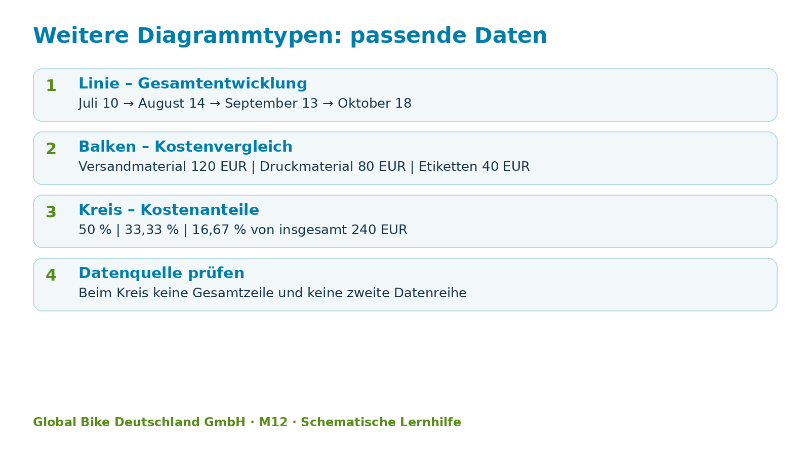
5. Diagrammtitel, Achsentitel und Legende
Ein guter Titel beantwortet, was dargestellt wird und auf welchen Zeitraum sich die Werte beziehen. Beispiel: Geprüfte Dokumente nach Bearbeitungsbereich – Juli bis Oktober 2027. Eine Überschrift wie Diagramm 1 ist nicht aussagekräftig.
Klickweg: Diagramm auswählen > Diagrammentwurf > Diagrammelement hinzufügen > Diagrammtitel > Über Diagramm. Titeltext anklicken und ersetzen.
Für Achsentitel: Diagrammentwurf > Diagrammelement hinzufügen > Achsentitel > Primär horizontal bzw. Primär vertikal. Textfelder anklicken und beschriften. Im Säulenbeispiel lautet die horizontale Achse Monat 2027, die vertikale Anzahl geprüfter Dokumente. Beim Balkendiagramm liegt die Werteachse horizontal.
Für die Legende: Diagrammentwurf > Diagrammelement hinzufügen > Legende > geeignete Position wählen, etwa unten. Die Legende darf keine Daten verdecken. Bei mehreren Reihen sind verständliche Reihenbezeichnungen erforderlich. Eine Legende mit Reihe1 und Reihe2 deutet auf fehlende oder falsch zugeordnete Überschriften hin. Bei einem Kreisdiagramm ordnet sie Kategorien den Sektoren zu.
6. Datenbeschriftungen und Zahlenformate
Diagramm auswählen > Diagrammentwurf > Diagrammelement hinzufügen > Datenbeschriftungen > geeignete Position. Bei Säulen eignen sich häufig Beschriftungen am äußeren Ende. Bei Linien können Werte oberhalb der Datenpunkte stehen. Bei vielen Werten kann eine Beschriftung jedes Punktes die Lesbarkeit verschlechtern.
Rechtsklick auf eine Datenbeschriftung > Datenbeschriftungen formatieren > Beschriftungsoptionen bzw. Zahl. Geldbeträge mit geeigneter Währungsdarstellung und Stückzahlen ohne unnötige Nachkommastellen anzeigen. Die Formatierung ändert nicht den gespeicherten Wert.
Beim Kreisdiagramm Datenbeschriftungen hinzufügen > Rechtsklick > Datenbeschriftungen formatieren > Prozentsatz aktivieren; bei Bedarf Kategoriename aktivieren und Wert deaktivieren. Prozentwerte mit sinnvoller Genauigkeit anzeigen. Rundungsbedingt können angezeigte Anteile von 100 % geringfügig abweichen.
7. Achsen und Skalierung
Rechtsklick auf die Werteachse > Achse formatieren > Achsenoptionen. Unter Grenzen können Minimum und Maximum eingestellt werden; unter Einheiten die Hauptintervalle. Bei Säulen und Balken grundsätzlich Minimum 0 verwenden. Das Maximum muss alle Werte einschließen. Automatische Grenzen sind bei veränderlichen Daten häufig sinnvoller als feste Obergrenzen.
Für das Säulenbeispiel ist ein Maximum von 12 mit Hauptintervall 2 für die ursprünglichen Einzelwerte möglich. Bei späteren größeren Werten muss eine feste Obergrenze angepasst oder auf Automatisch zurückgesetzt werden.
Bei Linien kann eine andere klar erkennbare Skalierung begründet sein. Zeitachsen müssen die zeitlichen Abstände sachgerecht abbilden. Für Monatsnamen als Text ist eine Kategorienachse mit gleichmäßigen Monatsabständen geeignet. Bei unregelmäßigen Datumsabständen echte Datumswerte und eine geeignete Datumsachse oder ein XY-Diagramm prüfen.
Rechtsklick auf Achse > Achse formatieren > Zahl: passendes Zahlenformat wählen. Gitternetzlinien über Diagrammelement hinzufügen sparsam einsetzen. Keine unnötige zweite Werteachse verwenden.
8. Datenreihen bearbeiten und Diagrammtyp wechseln
Diagramm anklicken > Diagrammentwurf > Daten auswählen. Im Dialog Datenquelle auswählen stehen die Legendeneinträge (Reihen) und horizontalen Achsenbeschriftungen.
Bearbeiten einer Reihe: Namen und Wertebereich kontrollieren. Im Beispiel Verkauf: Name B1, Werte B2:B5.
Hinzufügen: eine neue zusammengehörige Datenreihe auswählen; Kategorien und Anzahl der Werte müssen passen.
Entfernen: überflüssige Reihe auswählen und entfernen. Dadurch werden die Quelldaten nicht gelöscht.
Horizontale Achsenbeschriftungen bearbeiten: A2:A5 für die vier Monate auswählen.
Zeile/Spalte wechseln: wenn Excel Monate und Bearbeitungsbereiche vertauscht hat. Anschließend prüfen, ob die gewünschte Aussage wiedergegeben wird.
Diagrammentwurf > Diagrammtyp ändern > geeignete Familie und Untertyp > OK. Beim Wechsel zu einem Kreisdiagramm zuerst sicherstellen, dass nur eine geeignete Reihe mit Teilen eines Ganzen vorliegt. Ein Typwechsel ändert die Darstellung, nicht die zugrunde liegenden Zahlen.
9. Zweckmäßige Gestaltung
Diagramm auswählen > Diagrammentwurf > Diagrammformatvorlagen oder Farben ändern. Eine schlichte 2D-Darstellung bevorzugen. Farben müssen Reihen unterscheiden, dürfen aber keine unbegründete Bewertung suggerieren. Für dieselbe Datenreihe in mehreren Diagrammen möglichst dieselbe Farbe verwenden. Zusätzlich direkte Beschriftungen oder unterschiedliche Linienarten nutzen.
Einzelne Datenreihen formatieren: Reihe anklicken > Rechtsklick > Datenreihen formatieren > Füllung und Linie. Bei Linien können Markierungen und Stricharten ergänzt werden. Bei Säulen lässt sich die Abstandsbreite anpassen; Säulen sollen weder unnötig schmal sein noch miteinander verschmelzen.
Diagrammfläche und Zeichnungsfläche unterscheiden: Die Diagrammfläche umfasst das gesamte Objekt, die Zeichnungsfläche den Bereich der dargestellten Daten. Rechtsklick auf die jeweilige Fläche > formatieren. Dezenter Hintergrund, gut lesbare Schrift und ausreichender Kontrast unterstützen die Aussage. Keine 3D-Effekte, dekorativen Schatten oder unnötigen Rahmen.
10. Diagramme verschieben und für Besprechungen vorbereiten
Diagramm am Rand anklicken und ziehen. Eckpunkte zum Größenändern verwenden. Für ein eigenes Diagrammblatt: Diagrammentwurf > Diagramm verschieben > Neues Blatt > Namen vergeben. Alternativ als Objekt in einem vorhandenen Arbeitsblatt platzieren.
Für eine Besprechung sollen Tabelle und Diagramm gut lesbar sein. Erste Kontrolle über Datei > Drucken. Bei Bedarf Seitenlayout > Ausrichtung > Querformat und geeigneten Druckbereich wählen. Nicht blind auf eine Seite verkleinern: Schrift und Beschriftungen müssen lesbar bleiben. M13 behandelt Druckbereich, Skalierung und Seitenaufteilung ausführlich.
Beim Kopieren in ein anderes Office-Dokument zwischen verknüpftem Diagramm, eingebettetem Diagramm und Bild unterscheiden. Ein Bild ist statisch. Verknüpfungen können bei verschobenen Dateien nicht mehr funktionieren. Für die wiederverwendbare Excel-Arbeitsmappe bleibt das ursprüngliche Diagramm erhalten.
11. Automatische Aktualisierung bestehender Werte
Ein Excel-Diagramm ist mit seinem Datenbereich verbunden. Änderungen innerhalb dieses Bereichs werden normalerweise automatisch dargestellt, sofern Formeln neu berechnet werden.
Freiwilliger Test in der separaten Übungsdatei: B3 (Verkauf im August) von 9 auf 11 ändern. D3 muss von 14 auf 16 steigen. Im Säulendiagramm muss die August-Säule Verkauf von 9 auf 11 steigen; im Diagramm der Gesamtentwicklung muss der Augustwert 16 erscheinen. Danach B3 wieder auf 9 setzen. Die Hauptfalldaten werden nicht verändert.
Wenn Formeln nicht aktualisiert werden: Formeln > Berechnungsoptionen > Automatisch prüfen. Gegebenenfalls F9 zur Neuberechnung verwenden. Wenn nur das Diagramm unverändert bleibt, Datenquelle, Filter und feste Achsengrenzen kontrollieren.
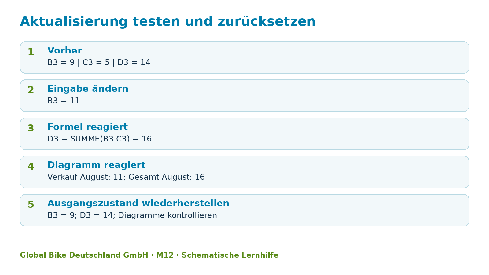
12. Neue Zeilen und wiederverwendbare Datenquellen
Eine Änderung vorhandener Werte ist nicht dasselbe wie eine Erweiterung des Datenbereichs. Ein Diagramm mit festem Bereich A1:C5 berücksichtigt eine neue Zeile 6 nicht zuverlässig automatisch.
Möglichkeit A: Diagramm auswählen > Diagrammentwurf > Daten auswählen > Datenbereich bzw. Reihen und Kategorien bis Zeile 6 erweitern. Auch die Summenformel muss bis D6 reichen.
Möglichkeit B: Ausgangsdaten A1:D5 markieren > Start > Als Tabelle formatieren (alternativ Strg+T) > Tabelle hat Überschriften aktivieren > OK. Ein Diagramm aus den benötigten Spalten dieser Excel-Tabelle erstellen. Unterhalb der Tabelle eine neue Zeile ergänzen. Excel-Tabellen erweitern sich bei entsprechender Einstellung normalerweise automatisch; berechnete Spalten übernehmen häufig die Formel. Diagramme auf Basis dieser Tabelle können die Erweiterung automatisch übernehmen. Das Ergebnis muss geprüft werden, insbesondere bei getrennten Auswertungsbereichen.
Freiwilliger Erweiterungstest: November, Verkauf 8, Verwaltung 7. Erwartete Summe 15. November muss in der gewünschten Darstellung erscheinen. Falls nicht, Datenquelle und Tabellengröße kontrollieren. Anschließend Testzeile entfernen und ursprünglichen Zustand prüfen.
Eine Excel-Tabelle ist nicht automatisch eine fertige Auswertung: Bei Rohdaten mit vielen Einzelvorgängen sind zunächst geeignete Zusammenfassungen mit den bereits erlernten Funktionen erforderlich. Diagramme sollen auf nachvollziehbaren Auswertungswerten beruhen, nicht auf manuell nachgetragenen Ergebnissen.
Bei leeren oder ausgeblendeten Zellen: Diagrammentwurf > Daten auswählen > Ausgeblendete und leere Zellen. Verfügbare Optionen hängen vom Diagrammtyp und der Excel-Version ab. Fehlende Daten nicht ohne sachlichen Grund als null darstellen.
14. Freiwillige praktische Erkundung
In einer separaten Übungsdatei können die Daten aus Abschnitt 2 verwendet werden. Eine mögliche Erkundungsfolge: Formeln ergänzen, zwei Diagrammtypen vergleichen, Titel und Legende gestalten, einen Wert ändern, eine Zeile ergänzen und beide Änderungen rückgängig machen. Die Wahl des geeigneten Typs ist anhand des Aussageziels zu begründen. Für den Bereichsvergleich sind gruppierte Säulen plausibel; für die Gesamtentwicklung eine Linie. Andere fachlich begründete Darstellungen sind möglich.
Eine eigene kurze Klick-Anleitung kann als persönliche Gedächtnisstütze dienen. Sie enthält Ausgangsdaten, Menüfolge, erwartetes Ergebnis und Kontrolle. Keine zusätzliche Pflichtabgabe, keine KI und keine Bewertung.
15. Qualitätskontrolle vor der betrieblichen Nutzung
16. Freiwillige Selbstkontrolle
Welcher Bereich zeigt im Beispiel die beiden Bearbeitungsbereiche ohne Gesamt?
Welche Formel steht in D2?
Wie wird ein gruppiertes Säulendiagramm eingefügt?
Was bedeutet eine Legende?
Wo werden Achsentitel ergänzt?
Warum hat ein Kreisdiagramm keine Achsentitel?
Wie wird ein Prozentwert am Kreissektor angezeigt?
Warum beginnt die Werteachse bei Säulen grundsätzlich bei null?
Wo werden falsche Datenreihen korrigiert?
Ändert ein Diagrammtypwechsel die Quelldaten?
Welcher August-Gesamtwert entsteht bei B3 = 11?
Warum erscheint eine neue Zeile möglicherweise nicht?
Welche Tastenkombination erstellt aus einem markierten Bereich eine Excel-Tabelle?
Welche Summe ergibt November mit 8 und 7?
Warum ist ein festes Achsenmaximum bei wachsenden Daten riskant?
Was ist bei fehlenden Werten zu beachten?
Wie wird die Drucklesbarkeit vorab geprüft?
Warum muss nach einem Aktualisierungstest der Ausgangszustand wiederhergestellt werden?
Kontrollhinweise
A1:C5.
=SUMME(B2:C2).
Einfügen > Säulen- oder Balkendiagramm > Gruppierte Säulen.
Zuordnung von Reihen bzw. Kategorien zu Farben oder Symbolen.
Es zeigt Sektoren eines Ganzen, keine Werte entlang von Achsen.
Datenbeschriftungen formatieren > Prozentsatz.
Damit Höhenverhältnisse nicht verzerrt werden.
Diagrammentwurf > Daten auswählen.
Nein.
Der feste Datenbereich endet möglicherweise in Zeile 5.
Strg+T.
Größere Werte können abgeschnitten werden.
Bedeutung klären; nicht automatisch null einsetzen.
Datei > Drucken.
Damit die verbindliche Datengrundlage nicht unbeabsichtigt verändert wird.
17. Weiterführende Materialien
M11 unterstützt die begründete Diagrammauswahl. M3, M5–M8 und M10 unterstützen Datenstruktur, Berechnungen und Auswertungen. M13 vertieft Seitenlayout und Druck, M14 Qualitätskontrolle und Wiederverwendbarkeit. M12 bleibt während der gesamten Lernsituation verfügbar.
Eine fachlich richtige Tabelle ist nicht automatisch eine geeignete Besprechungsunterlage. Abgeschnittene Spalten, fehlende Überschriften, unlesbare Zahlen und versehentlich mitgedruckte interne Notizen erschweren Entscheidungen. Die Druckaufbereitung stellt sicher, dass die benötigten Informationen vollständig, verständlich und adressatengerecht vorliegen.
Die bearbeitbare Excel-Arbeitsmappe bleibt die Grundlage. Ein PDF ist eine Momentaufnahme und ersetzt weder Formeln noch Filter oder aktualisierbare Diagramme. M13 ergänzt M3 und M12. Die verbindlichen Ausgangsdaten stehen weiterhin in M1. Alle Beispiele in M13 sind davon unabhängige simulierte Schulungsdaten der Global Bike Deutschland GmbH, keine SAP-Daten und keine Hauptfalllösungen.
Die Klickwege beziehen sich auf deutschsprachiges Desktop-Excel unter Windows. Menünamen können je nach Version und Druckertreiber abweichen. Die Abbildungen sind schematische Lernhilfen, keine Originalscreenshots.
2. Arbeitsblatt, Druckseite und PDF unterscheiden
Begriff
Bedeutung
Arbeitsmappe
Excel-Datei mit einem oder mehreren Arbeitsblättern
Arbeitsblatt
Bearbeitungsfläche mit Zellen, Formeln und gegebenenfalls Diagrammen
Kontrolle der vorgesehenen Ausgabe vor dem Drucken
PDF
Datei mit festem Seitenlayout für die Weitergabe
Die Normalansicht dient der Bearbeitung. Ansicht > Seitenlayout zeigt die Aufteilung auf Papierseiten und Kopf- und Fußzeilen. Ansicht > Umbruchvorschau zeigt die Seitenbegrenzungen. Die endgültige Kontrolle erfolgt über Datei > Drucken. Der Bildschirmzoom verändert nur die Anzeige, nicht die Druckgröße.
3. Unabhängiges Schulungsbeispiel vorbereiten
Die Verwaltung erstellt für eine interne Schulung eine Übersicht über Büroverbrauchsmaterial im Juli 2027. In einer neuen Übungsmappe steht in A1 der Titel Büroverbrauchsmaterial – Juli 2027. Zeile 2 bleibt frei. In Zeile 3 stehen die Überschriften.
A: Datum
B: Material
C: Menge
D: Einzelpreis netto
E: Gesamt netto
05.07.2027
Briefumschläge
4
5,50 €
22,00 €
08.07.2027
Etiketten
3
8,00 €
24,00 €
12.07.2027
Druckpapier
5
6,40 €
32,00 €
19.07.2027
Ordner
2
7,50 €
15,00 €
Die Daten stehen in Zeilen 4 bis 7. E4 enthält =C4*D4, bis E7 kopiert. D8 enthält Gesamt netto, E8 =SUMME(E4:E7) mit Ergebnis 93,00 EUR. Die Datumsspalte erhält ein Datumsformat, D und E ein Währungsformat mit zwei Nachkommastellen. Spaltenbreiten so einstellen, dass Überschriften und Werte sichtbar sind. Für die Schulung kann in G3 eine Notiz stehen: Nur interne Testnotiz. Sie gehört nicht zur Besprechungsunterlage.
Ein optionales Diagramm zu Material und Gesamtbetrag kann nach M11 und M12 aus B3:B7 und E3:E7 erstellt und innerhalb A10:E21 platziert werden. Die Summenzeile bleibt aus der Diagrammquelle ausgeschlossen. Das Beispiel zeigt nur einen möglichen Aufbau, nicht die Gestaltung des Hauptfalls.
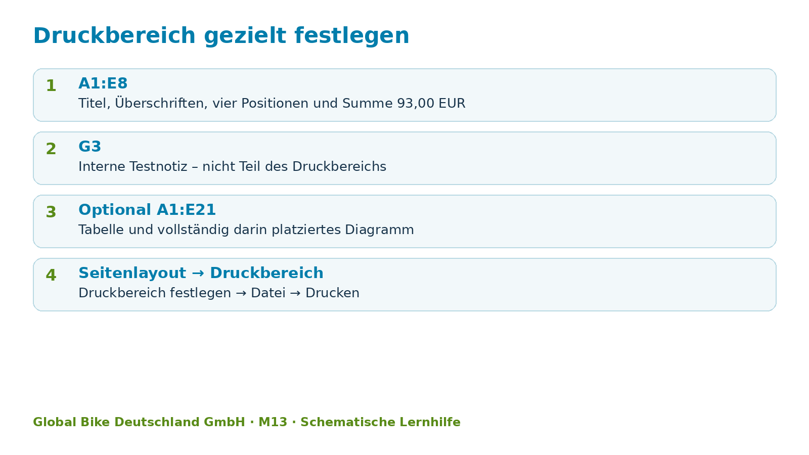
4. Klick-Anleitung: Druckbereich festlegen und ändern
Das gewünschte Arbeitsblatt aktivieren.
Für die reine Tabelle A1:E8 markieren.
Register Seitenlayout öffnen.
Druckbereich > Druckbereich festlegen wählen.
Datei > Drucken öffnen.
Kontrollieren, dass Titel, Überschriften, vier Datensätze und Summe erscheinen, nicht aber die Testnotiz in G3.
Mit dem Zurück-Pfeil zur Arbeitsmappe wechseln.
Soll das optionale Diagramm mit ausgegeben werden, A1:E21 markieren und den Druckbereich erneut festlegen. Das Diagramm vollständig innerhalb des Bereichs platzieren.
Druckvorschau erneut kontrollieren.
Druckbereich > Druckbereich aufheben entfernt die gespeicherte Einschränkung, nicht die Daten. Danach kann Excel wieder den gesamten verwendeten Bereich ausgeben. Druckbereich hinzufügen kann einen bestehenden Bereich erweitern; getrennte Bereiche werden normalerweise auf getrennten Seiten gedruckt. Für eine gemeinsame Seite ist ein zusammenhängender Bereich zweckmäßiger.
Der Druckbereich wird mit der Arbeitsmappe gespeichert. Neue Zeilen außerhalb eines festgelegten Bereichs werden nicht automatisch zuverlässig berücksichtigt. Nach Erweiterungen ist die Einstellung zu prüfen.
Eine einmalige Alternative: Zellen markieren > Datei > Drucken > unter Einstellungen Auswahl drucken. Das ist nicht dasselbe wie ein dauerhaft gespeicherter Druckbereich.
5. Papierformat, Ausrichtung und Seitenränder
Papierformat
Seitenlayout > Größe > A4 auswählen. A4 misst 210 × 297 mm. Das Papierformat muss zum Drucker und zur vorgesehenen PDF-Ausgabe passen. Bei abweichenden Einstellungen können Seitenumbrüche anders ausfallen.
Hoch- und Querformat
Seitenlayout > Ausrichtung > Hochformat oder Querformat. Hochformat bietet mehr Höhe, Querformat mehr Breite. Eine schmale Terminliste kann im Hochformat gut lesbar sein; eine breite Auswertung mit mehreren Spalten kann Querformat benötigen. Die Wahl hängt vom tatsächlichen Inhalt ab.
Seitenränder
Seitenlayout > Seitenränder > Normal, Breit oder Schmal wählen. Unter Benutzerdefinierte Seitenränder lassen sich Abstände einzeln einstellen. Im Dialog Seite einrichten, Register Seitenränder, kann die Ausgabe horizontal oder vertikal zentriert werden. Horizontales Zentrieren eignet sich häufig für eine kleine Tabelle; vertikales Zentrieren ist nicht immer sinnvoll.
Ränder dürfen nicht so klein sein, dass der Drucker Inhalte abschneidet. Kopf- und Fußzeilen benötigen ebenfalls Platz. Nach jeder Änderung die Vorschau kontrollieren.
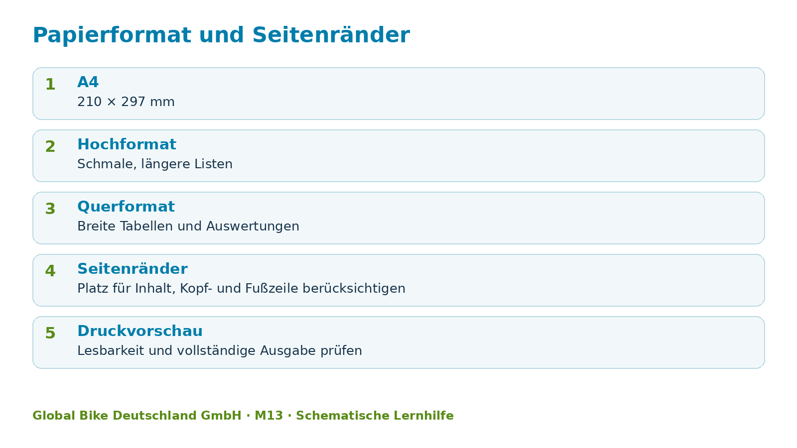
6. Skalierung: eine Seite oder mehrere lesbare Seiten?
Die Schulungsanforderung einer einseitigen Tabelle ist bei überschaubaren Daten sinnvoll. Eine große Liste auf eine einzige Seite zu zwingen, kann sie unbrauchbar machen.
Klickweg: Seitenlayout > Gruppe An Format anpassen (je nach Version Skalierung). Breite und Höhe auswählen.
Einstellung
Wirkung
Breite 1 Seite, Höhe 1 Seite
Gesamter Druckbereich wird auf eine Seite angepasst
Breite 1 Seite, Höhe Automatisch
Alle Spalten passen in die Breite; mehrere Seiten nach unten sind möglich
Breite und Höhe Automatisch
Keine feste Seitenzahl; Prozentmaßstab kann eingestellt werden
Skalierung 100 %
Ausgabe in ursprünglicher Druckgröße, sofern keine Anpassung aktiv ist
Alternativ Datei > Drucken > Skalierungsmenü: Keine Skalierung, Blatt auf einer Seite darstellen, Alle Spalten auf einer Seite darstellen oder Alle Zeilen auf einer Seite darstellen. Die genaue Bezeichnung kann abweichen.
Für das kleine Beispiel zuerst A4 und passende Ausrichtung einstellen, dann die Vorschau betrachten. Nur bei Bedarf auf eine Seite skalieren. Für lange Listen ist eine Seite breit und automatisch viele Seiten hoch oft geeigneter. Bei unlesbarer Schrift zuerst unnötige Spalten aus der Ausgabe nehmen, Spaltenbreiten sinnvoll anpassen oder Querformat prüfen. Keine benötigten Daten aus der Arbeitsmappe löschen.
Skalierung verändert weder Zellwerte noch Formeln. Die angezeigte Prozentzahl ist abhängig von Druckbereich, Papierformat, Rändern und Druckertreiber. Es gibt keinen universell richtigen Prozentwert.
7. Seitenumbrüche kontrollieren
Ansicht > Umbruchvorschau. Blaue Linien markieren Seitenbegrenzungen; gestrichelte Linien stehen typischerweise für automatische, durchgezogene für manuelle Begrenzungen beziehungsweise den äußeren Druckbereich. Seitenzahlen dienen der Orientierung und werden nicht als solche mitgedruckt.
Manuellen horizontalen Umbruch einfügen: Zeile unterhalb der gewünschten Trennstelle markieren > Seitenlayout > Umbrüche > Seitenumbruch einfügen. Für einen vertikalen Umbruch die Spalte rechts der Trennstelle markieren. Wird eine einzelne Zelle gewählt, können beide Richtungen betroffen sein.
Umbruch entfernen: passende Zeile oder Spalte am manuellen Umbruch markieren > Seitenlayout > Umbrüche > Seitenumbruch entfernen. Alle manuellen Umbrüche lassen sich über Alle Seitenumbrüche zurücksetzen entfernen. Automatische Umbrüche entstehen weiterhin durch das Seitenlayout.
In der Umbruchvorschau können Grenzen verschoben werden. Dadurch können sich Skalierung oder Druckbereich ändern. Bei der Anpassung auf eine feste Seitenzahl kann Excel manuelle Umbrüche ignorieren. Für bewusst gesetzte Umbrüche daher die feste Seitenanpassung aufheben und einen geeigneten Prozentmaßstab verwenden. Anschließend Datei > Drucken prüfen.
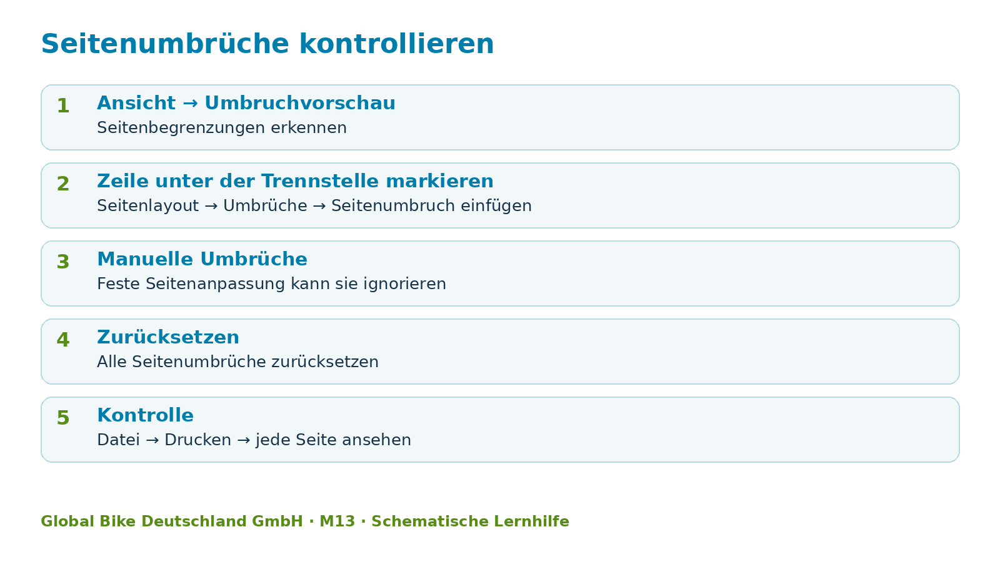
8. Drucktitel bei mehrseitigen Listen
Eine Liste mit vielen Vorgängen benötigt auf jeder Seite verständliche Spaltenüberschriften. Drucktitel wiederholen vorhandene Zeilen oder Spalten, ohne die Daten zu duplizieren.
Arbeitsblatt aktivieren; gegebenenfalls Zellbearbeitung beenden und Blattgruppierung aufheben.
Seitenlayout > Drucktitel öffnen.
Im Dialog Seite einrichten das Register Blatt auswählen.
Bei Wiederholungszeilen oben in das Eingabefeld klicken.
Für die Beispielüberschrift Zeile 3 markieren. Der Bezug lautet $3:$3.
Bei Bedarf Wiederholungsspalten links festlegen, beispielsweise $A:$A bei horizontal verteilten Seiten.
OK wählen und in der Druckvorschau die zweite Seite kontrollieren.
Drucktitel sind nicht dasselbe wie Kopfzeilen. Sie enthalten tatsächliche Zellen des Arbeitsblatts. Ansicht > Fenster fixieren hält Überschriften am Bildschirm sichtbar, wiederholt sie aber nicht automatisch im Ausdruck. Bei einem einseitigen Dokument ist die Wiederholung meist nicht nötig.
9. Kopf- und Fußzeilen einrichten
Kopf- und Fußzeilen können betriebliche Dokumente eindeutig kennzeichnen. Geeignet sind Unternehmensname, Dokumentbezeichnung, Berichtszeitraum, Seitenzahl und gegebenenfalls ein freigegebener Bearbeitungsstand.
Klickweg: Einfügen > Kopf- und Fußzeile. Excel wechselt in die Seitenlayoutansicht. In den linken, mittleren oder rechten Abschnitt klicken. Text eingeben oder über das kontextbezogene Register Kopf- und Fußzeile die Felder Seitenzahl, Anzahl der Seiten, aktuelles Datum oder Blattname einfügen. Alternativ Seitenlayout > Dialogfeld Seite einrichten > Kopfzeile/Fußzeile > Benutzerdefinierte Kopfzeile beziehungsweise Fußzeile.
Beispiel Kopfzeile links: Global Bike Deutschland GmbH. Mitte: Verwaltung. Fußzeile links: Schulungsübersicht Juli 2027. Rechts: Seite [Seitenzahl] von [Anzahl der Seiten]. Die eckigen Klammern stehen hier für einzufügende Excel-Felder, nicht für wörtlich einzutippenden Text. Die Felder werden über die Schaltflächen eingefügt.
Das automatisch eingefügte aktuelle Datum ist das Ausgabedatum, nicht der Berichtszeitraum. Für einen festen Berichtszeitraum daher Text verwenden. Dateipfad oder Benutzername nur aufnehmen, wenn dies betrieblich erforderlich und freigegeben ist. Kopf- und Fußzeilen können für jedes Blatt unterschiedlich eingerichtet werden.
10. Gitternetzlinien, Überschriften und Diagramme
Gitternetzlinien auf dem Bildschirm sind nicht automatisch gedruckte Rahmen. Seitenlayout > Blattoptionen > Gitternetzlinien > Drucken aktiviert den Druck der Gitternetzlinien. Für eine professionelle Übersicht sind gezielt gesetzte Zellrahmen häufig übersichtlicher. Rahmen über Start > Rahmenlinien einstellen.
Die Excel-Zeilen- und Spaltenköpfe (1, 2, 3 und A, B, C) lassen sich unter Seitenlayout > Blattoptionen > Überschriften > Drucken einblenden. Für betriebliche Berichte werden sie normalerweise nicht benötigt. Fachliche Tabellenüberschriften müssen unabhängig davon vorhanden sein.
Für eine gemeinsame Ausgabe von Tabelle und Diagramm das Diagramm vollständig im Druckbereich positionieren. Falls es fehlt: Diagramm auswählen, über Rechtsklick auf die Diagrammfläche die Formatierungsoptionen und unter Größe und Eigenschaften die Einstellung Objekt drucken prüfen, sofern in der Version vorhanden. Vor dem Drucken eine Zelle anklicken, damit nicht versehentlich nur das ausgewählte Diagramm ausgegeben wird.
11. Druckvorschau und Ausgabeumfang
Datei > Drucken (Strg+P) öffnen. Drucker beziehungsweise Ausgabeziel, Seitenzahl, Papierformat, Ausrichtung, Ränder und Skalierung kontrollieren. Mit den Seitennavigationspfeilen jede Seite ansehen. Die Vorschau kann vergrößert werden; diese Vergrößerung verändert nicht die Druckgröße.
Unter Einstellungen unterscheiden:
Aktive Blätter drucken: aktuell ausgewählte Arbeitsblätter; bei gruppierten Blättern können mehrere betroffen sein.
Gesamte Arbeitsmappe drucken: alle für den Druck berücksichtigten Arbeitsblätter; nicht für eine einzelne Besprechungsunterlage verwenden, wenn andere Blätter nicht benötigt werden.
Druckbereiche ignorieren: nur bewusst verwenden, wenn die gespeicherten Bereiche nicht gelten sollen.
Bei gefilterten Listen werden ausgeblendete Zeilen normalerweise nicht gedruckt. Eine SUMME über den gesamten Bereich kann trotzdem auch ausgeblendete Werte enthalten. Daher prüfen, ob Überschrift, Filterzustand und berechnete Summen dieselbe Aussage treffen. Filter oder ausgeblendete Spalten sind keine Zugriffssicherung für eine weitergegebene Excel-Datei.
Erst nach vollständiger Vorschau und gegebenenfalls betrieblicher Freigabe den Druck auslösen. Für freiwillige Schulungsversuche genügt die Vorschau; Papierverbrauch ist nicht erforderlich.
12. Klick-Anleitung: PDF erstellen und prüfen
Excel-Arbeitsmappe im XLSX-Format speichern.
Gewünschtes Blatt aktivieren und Druckbereich sowie Layout prüfen.
Datei > Exportieren > PDF/XPS-Dokument erstellen > PDF/XPS erstellen wählen. Alternativ Datei > Speichern unter > Dateityp PDF.
Einen geeigneten Speicherort und einen eindeutigen Dateinamen wählen, beispielsweise GB_Schulung_Bueroverbrauch_Juli_2027.pdf.
Unter Optionen den gewünschten Ausgabeumfang prüfen, etwa aktive Blätter oder Auswahl. Gespeicherten Druckbereich nicht unbeabsichtigt ignorieren.
Für gut lesbare Ausgabe die Standardqualität wählen, sofern keine andere betriebliche Vorgabe gilt.
Veröffentlichen beziehungsweise Speichern wählen.
PDF separat öffnen. Seitenzahl, Titel, Zahlen, Einheiten, Diagramme, Seitenränder und Vollständigkeit kontrollieren.
Prüfen, dass keine ungewollten internen Notizen oder zusätzlichen Blätter enthalten sind.
Die PDF-Datei ist nicht automatisch vertraulich oder manipulationssicher. Sie enthält keine weiterrechenbaren Excel-Formeln. Für spätere Aktualisierungen die XLSX-Datei bearbeiten und eine neue PDF-Fassung erzeugen. Eine alte PDF-Datei aktualisiert sich nicht automatisch. Vor Weitergabe betriebliche Berechtigungen und Empfängerkreis prüfen. Im Unterricht werden keine echten externen Empfänger angeschrieben.
13. Wiederverwendbare Druckaufbereitung
Eine universell einsetzbare Tabelle soll nicht für jeden Bericht neu aufgebaut werden müssen. Formeln, Zahlenformate, Überschriften und Diagramme bleiben erhalten. Die Druckeinstellungen werden in der XLSX-Datei gespeichert. Bei neuen Zeilen oder Spalten können Druckbereich, Drucktitel, Seitenzahl und Skalierung jedoch Anpassungen benötigen.
Freiwilliger Test in einer Kopie der Schulungsmappe: Eine zusätzliche Materialposition vor der Summenzeile einfügen, beispielsweise 2 Packungen Klebeband zu je 3,25 EUR. Die neue Zeilensumme beträgt 6,50 EUR, die Gesamtsumme 99,50 EUR. Die Summenformel muss den neuen Datenbereich einschließen. Wenn die neue Zeile nicht in der Druckvorschau erscheint, Druckbereich und Seitenaufteilung prüfen. Ein vorhandenes Diagramm muss ebenfalls auf die neue Position geprüft werden. Anschließend die Testkopie schließen oder die ursprünglichen Werte wiederherstellen.
Für die spätere Nutzung können die ursprüngliche Arbeitsmappe und eine eindeutig benannte Arbeitskopie getrennt gespeichert werden. Keine Hauptfalldaten für einen Test verändern.
14. Typische Fehler erkennen und beheben
Beobachtung
Mögliche Ursache
Abhilfe
Letzte Spalte fehlt
Druckbereich zu klein
Druckbereich neu festlegen
Zusätzliche leere Seite
Formatierung außerhalb der Tabelle oder falscher Bereich
Druckbereich und Umbruchvorschau prüfen
Zahlen erscheinen als ####
Spalte zu schmal oder nicht darstellbarer Datumswert
Außerhalb des Bereichs oder Objekt drucken deaktiviert
Position und Eigenschaften prüfen
Nur Diagramm wird gedruckt
Diagramm ausgewählt
Zelle anklicken und Ausgabeumfang prüfen
Interne Notiz erscheint
Falscher Druckbereich
Bereich und PDF-Inhalt kontrollieren
Summe passt nicht zur gefilterten Liste
SUMME umfasst ausgeblendete Zeilen
Aussage und Berechnungsgrundlage prüfen
PDF enthält weitere Blätter
Gesamte Arbeitsmappe gewählt
Aktive Blätter oder Auswahl einstellen
PDF zeigt alte Werte
Nach Änderung nicht neu exportiert
XLSX neu berechnen und PDF neu erzeugen
Kopfzeile überlappt Inhalt
Ränder zu klein
Kopfzeilenabstand und Seitenränder anpassen
Vorschau unterscheidet sich je Drucker
Druckertreiber oder Papierformat
Zielgerät und Vorschau erneut prüfen
15. Freiwillige praktische Erkundung
Die separate Schulungsmappe aus Abschnitt 3 kann für eine kurze Erkundung genutzt werden. Eine mögliche Reihenfolge ist: Druckbereich für die Tabelle festlegen, Hoch- und Querformat vergleichen, die lesbarere Einstellung begründen, Kopf- und Fußzeile ergänzen und eine PDF-Probeausgabe kontrollieren. Bei einer längeren Kopie der Liste können Drucktitel und Seitenumbrüche erprobt werden. Die zusätzlichen Testdaten sind keine betrieblichen Ist-Daten.
Eine persönliche Klick-Anleitung kann die gewählten Einstellungen und Kontrollschritte festhalten. Die Erkundung ist freiwillig, unbewertet und keine zusätzliche Pflichtabgabe. Die Lernenden entscheiden im Hauptfall selbst über die geeignete Ausgabeform ihres Lernpakets. Keine KI.
16. Qualitätskontrolle
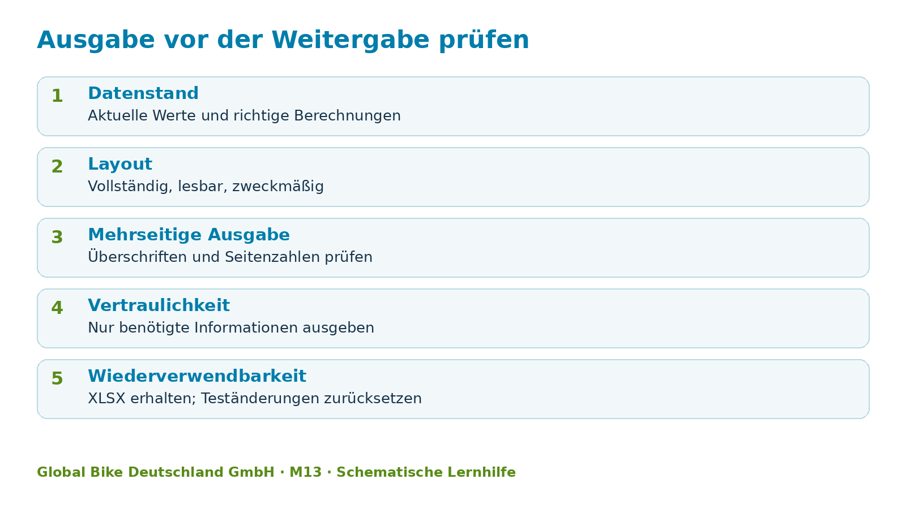
17. Freiwillige Selbstkontrolle
Worin unterscheiden sich Arbeitsblatt und Druckseite?
Welcher Bereich umfasst im Schulungsbeispiel die reine Tabelle?
Wie wird dieser Druckbereich gespeichert?
Wie wird ein Druckbereich aufgehoben?
Welche Maße hat A4?
Wann kann Querformat sinnvoll sein?
Welche Skalierung eignet sich häufig für lange, breite Listen?
Ändert der Bildschirmzoom die Druckgröße?
Wie wird ein manueller horizontaler Seitenumbruch eingefügt?
Was bedeutet $3:$3 bei Drucktiteln?
Wiederholt Fenster fixieren automatisch Überschriften im Druck?
Worin unterscheiden sich Drucktitel und Kopfzeilen?
Wie wird die Druckvorschau geöffnet?
Warum kann eine gefilterte Liste eine unerwartete SUMME zeigen?
Wie lässt sich vermeiden, dass weitere Arbeitsblätter im PDF erscheinen?
Aktualisiert sich ein bereits exportiertes PDF automatisch?
Wie hoch ist die Gesamtsumme im ursprünglichen Schulungsbeispiel?
Wie hoch ist sie nach Ergänzung der Klebebandposition?
Was ist nach Erweiterung einer Tabelle am Druckbereich zu prüfen?
Warum ersetzt ein PDF die XLSX-Datei nicht?
Kontrollhinweise
Arbeitsblatt ist die Bearbeitungsfläche, Druckseite die auf Papier beziehungsweise im PDF ausgegebene Fläche.
Drucktitel wiederholen Zellen; Kopfzeilen enthalten separate Seitenangaben.
Datei > Drucken oder Strg+P.
SUMME kann auch ausgeblendete Werte umfassen.
Gewünschtes Blatt aktivieren, Blattgruppierung prüfen und aktive Blätter beziehungsweise Auswahl als Umfang festlegen.
Nein, neu exportieren.
93,00 EUR.
99,50 EUR.
Ob die neuen Daten vollständig enthalten und lesbar sind.
PDF enthält eine feste Darstellung, keine bearbeitbaren Excel-Formeln.
18. Weiterführende Materialien
M3 unterstützt die Tabellenstruktur, M4 die Zahlenformate, M5–M8 die Berechnungen, M10 die Listenbearbeitung, M11 und M12 die Diagrammauswahl und -gestaltung. M14 vertieft die Qualitätskontrolle und Wiederverwendbarkeit. M13 bleibt während der gesamten Lernsituation verfügbar.
M14 – Qualitätskontrolle und Wiederverwendbarkeit von Excel-Arbeitsmappen
Global Bike Deutschland GmbH – Verwaltung
1. Warum Qualität im Büro wichtig ist
Emma Fuchs benötigt eine zuverlässige Arbeitsmappe für die Büroorganisation im Marktgebiet Nordwest. Eine ansprechend gestaltete Tabelle allein genügt nicht. Falsche Summen, übersehene Fristen oder unvollständige Diagramme können zu falschen betrieblichen Entscheidungen führen. Eine Arbeitsmappe muss deshalb fachlich richtig, technisch funktionsfähig, verständlich und erweiterbar sein.
M14 verbindet M2–M13. Die verbindlichen Daten und Regeln bleiben in M1: Auswertungszeitraum 01.01.–30.06.2027, Stichtag 01.07.2027, Halbjahresbudget 2.500 EUR netto, interne Fristen in Kalendertagen ohne Wochenendverschiebung. Keine Änderung dieser Vorgaben. Ostfriesland bleibt Marktgebiet, kein SAP-Standort.
Die folgenden Beispiele sind eigenständige simulierte Schulungsdaten der Global Bike Deutschland GmbH, keine SAP-Daten und keine Lösung des Hauptfalls. Klickwege beziehen sich auf deutschsprachiges Desktop-Excel unter Windows; je nach Version können Bezeichnungen abweichen.
2. Qualitätsmerkmale einer Arbeitsmappe
Merkmal
Prüffrage
Richtigkeit
Stimmen Eingaben, Formeln und Ergebnisse?
Vollständigkeit
Sind alle benötigten Datensätze und Auswertungen enthalten?
Konsistenz
Stimmen Einheiten, Zeiträume und Bezugsgrößen überein?
Verständlichkeit
Sind Überschriften, Eingabefelder und Ergebnisse eindeutig?
Funktionsfähigkeit
Reagieren Berechnungen auf geänderte Eingaben?
Erweiterbarkeit
Werden neue Datensätze in Auswertungen berücksichtigt?
Lesbarkeit
Sind Tabellen, Diagramme und Druckausgaben verständlich?
Verantwortlicher Umgang
Bleiben Originaldaten erhalten und Informationen geschützt?
Eine Prüfung umfasst Daten, Berechnungen, Auswertungen und Ausgabe. Ein korrekt wirkendes Ergebnis ist kein Beweis für eine richtige Formel.
3. Originaldaten und Arbeitskopien
Die Datei M1_Rohdaten.xlsx ist die Ausgangsquelle. Sie bleibt unverändert. Die selbst entwickelte Arbeitsmappe enthält die aufbereiteten Daten und Auswertungen. Für Funktionstests wird eine zusätzliche Kopie verwendet.
Klick-Anleitung:
Datei > Speichern unter öffnen (bei Cloud-Dateien gegebenenfalls Kopie speichern).
Einen geeigneten Ordner wählen.
Einen eindeutigen Namen vergeben, etwa GB_Bueroorganisation_Test_2027.xlsx.
Dateityp Excel-Arbeitsmappe (*.xlsx) beibehalten.
Vor Änderungen den Dateinamen in der Titelleiste prüfen.
Nach dem Test die unveränderte Arbeitsfassung wieder öffnen. Testergebnisse nicht als betriebliche Ist-Daten übernehmen.
Eine CSV-Datei ist kein Ersatz für eine vollständige XLSX-Arbeitsmappe: Formeln, mehrere Blätter, Diagramme und Formatierungen bleiben dort nicht als Excel-Arbeitsmappe erhalten. Eine PDF-Datei ist eine Ausgabe, keine bearbeitbare Datenbasis.
4. Datenqualität kontrollieren
Vergleich mit der Ausgangsquelle: Vorgangskennzeichen, Datumswerte, Beträge, Status und Zuständigkeiten stichprobenartig und bei kritischen Feldern vollständig prüfen. Fehlende Angaben nicht eigenmächtig ergänzen. Leere Erledigungsdaten bedeuten im Hauptfall nicht erledigt; leere Vorgangsreferenzen bedeuten eigenständige Aufgaben.
Klick-Anleitung für die Sichtkontrolle:
Datenblatt aktivieren und Überschriften prüfen.
Daten > Filter aktivieren, sofern nicht bereits als Tabelle eingerichtet.
Filterpfeil einer Spalte öffnen und auf leere oder unerwartete Einträge prüfen.
Filter wieder löschen, bevor eine vollständige Übersicht beurteilt wird.
Datums- und Betragszellen auswählen und über Strg+1 das Zahlenformat kontrollieren.
Bei Verdacht auf Text statt Zahl den tatsächlichen Zellinhalt und gegebenenfalls die Excel-Fehleranzeige prüfen.
Eine Zahl kann wie eine Währung aussehen und trotzdem als Text gespeichert sein. Umgekehrt verändert ein Währungsformat nicht den zugrunde liegenden Wert. Ein leeres Feld ist nicht automatisch null. Doppelte Beträge oder Datumswerte sind nicht automatisch doppelte Vorgänge. Daten > Duplikate entfernen löscht Datensätze; daher nur nach fachlicher Prüfung in einer Kopie verwenden. Eindeutige Vorgangskennzeichen sind geeigneter als ein bloßer Betragsvergleich.
Optionaler Prüfweg: Start > Bedingte Formatierung > Regeln zum Hervorheben von Zellen > Doppelte Werte auf eine Kennzeichenspalte anwenden. Markierungen sind Prüfhinweise, keine Löschanweisung.
5. Unabhängiges Schulungsbeispiel: Materialkosten
Eine neue Testmappe enthält in A1:E5 die folgende kleine Übersicht. Sie dient ausschließlich dem Erproben von Prüfmethoden.
A Material
B Menge
C Einzelpreis netto
D Gesamt netto
E Anteil am Gesamt
Versandtaschen
4
12,50 €
50,00 €
50 %
Etiketten
3
8,00 €
24,00 €
24 %
Ordner
2
13,00 €
26,00 €
26 %
Gesamt
100,00 €
100 %
In D2 steht =B2*C2, kopiert bis D4. D5 enthält =SUMME(D2:D4). E2 enthält =D2/$D$5, kopiert bis E4. E5 enthält =SUMME(E2:E4). D und C erhalten Währungsformat, E Prozentformat. Die Schulungsbezugsgröße ist 100 EUR, nicht das Halbjahresbudget aus M1.
In G1 steht Schulungsbudget, in G2 der unabhängige Testwert 125 EUR. G3 kann mit =G2-D5 den Restbetrag (25 EUR) berechnen; G4 mit =D5/G2 die Budgetauslastung (80 %). G4 als Prozent formatieren.
6. Formeln und Zellbezüge überprüfen
Eine Formel beginnt mit dem Gleichheitszeichen. Eingabewerte werden referenziert, nicht unnötig in Formeln festgeschrieben. =B2*C2 reagiert auf Änderungen; =4*12,5 enthält feste Zahlen und reagiert nicht auf die Zellen.
Klick-Anleitung:
Ergebniszelle D2 anklicken und Bearbeitungsleiste ansehen.
F2 drücken, um die Formel und farbig markierte Bezüge zu sehen.
Mit Esc ohne Änderung beenden.
D3 und D4 kontrollieren: relative Bezüge müssen zur jeweiligen Zeile passen.
E2 bis E4 prüfen: der Zähler ändert sich je Zeile, der Nenner $D$5 bleibt fest.
D5 prüfen: Der Summenbereich umfasst genau D2:D4, nicht die Summenzelle selbst.
Formeln > Formeln anzeigen wählen, um Formeln statt Ergebnisse zu sehen; erneut wählen, um zurückzukehren.
Eine Formel kann rechnerisch funktionieren, aber fachlich falsch sein. Beispiel =D2/$G$2 berechnet den Anteil am Schulungsbudget statt am Gesamtbetrag. Beide Ergebnisse sind mathematisch möglich, beantworten jedoch unterschiedliche Fragen.
7. Formelüberwachung und Fehlerprüfung
Formeln > Formelüberwachung > Spur zum Vorgänger zeigt Zellen, die in die ausgewählte Formel eingehen. Spur zum Nachfolger zeigt abhängige Formeln. Pfeile entfernen beendet die Darstellung.
Beispiel: D2 auswählen > Spur zum Vorgänger. B2 und C2 sind die Eingaben. D5 auswählen > Spur zum Nachfolger. Die Anteilsformeln und gegebenenfalls die Budgetauswertung hängen davon ab.
Formeln > Fehlerüberprüfung sucht nach bestimmten erkennbaren Problemen. Formeln > Formel auswerten zeigt bei geeigneten Formeln einzelne Berechnungsschritte. Diese Werkzeuge ersetzen keine fachliche Prüfung: Eine falsche Bezugsgröße oder ein unvollständiger, aber gültiger Summenbereich kann ohne Warnung bleiben.
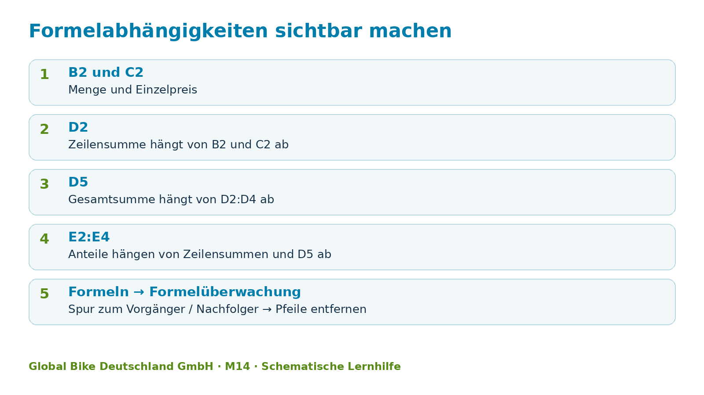
8. Typische Fehler erkennen und beheben
Anzeige oder Beobachtung
Ursache und Prüfung
#DIV/0!
Division durch null oder leere Bezugszelle; Nenner prüfen
#WERT!
Ungeeigneter Datentyp, etwa Text in einer Multiplikation; Eingaben prüfen
#BEZUG!
Ungültiger Zellbezug, etwa nach Löschen referenzierter Zellen; Quelle wiederherstellen oder Bezug fachlich korrigieren
#NAME?
Unbekannter Funktionsname oder Name; Schreibweise prüfen
#ZAHL!
Unzulässiger numerischer Wert oder Berechnungsbereich; Argumente prüfen
#NV
Gesuchter Wert nicht verfügbar; Quelle und Suchkriterium prüfen
####
Häufig zu schmale Spalte, auch nicht darstellbare negative Datums-/Zeitwerte; Breite und Wert prüfen
Formel steht als Text in der Zelle
Textformat, führendes Apostroph oder Formeln-anzeigen-Modus prüfen
Ergebnis bleibt unverändert
Fester Zahlenwert statt Formel oder manuelle Berechnung; Formel und Berechnungsoptionen prüfen
Zirkelbezug
Formel verweist direkt oder indirekt auf sich selbst; Abhängigkeiten korrigieren
Bei Textformat: Zelle auf Standard umstellen, anschließend F2 und Eingabetaste, sofern tatsächlich eine Formel eingegeben werden soll. Bei einem führenden Apostroph dieses gezielt entfernen. Keine Fehlermeldung pauschal durch null ersetzen. WENNFEHLER kann Fehler verdecken und ist hier keine notwendige Pflichtfunktion.
Formeln > Berechnungsoptionen > Automatisch prüfen. F9 löst eine Neuberechnung aus. Ein korrektes Ergebnis nach F9 allein beweist noch keine dauerhaft automatische Aktualisierung.
9. Plausibilitätskontrolle
Plausibilität bedeutet, ein Ergebnis auf fachliche Nachvollziehbarkeit zu prüfen. Dazu gehören Überschlagsrechnung, Gegenrechnung, Vergleich mit Ausgangsdaten und Prüfung der Einheit.
Im Schulungsbeispiel: 50 + 24 + 26 = 100 EUR. Die drei Anteile ergeben zusammen 100 %. 100 von 125 EUR sind 80 %, Rest 25 EUR. Gesamtbetrag plus Rest ergeben 125 EUR.
Ein Prozentwert kann über 100 % liegen, etwa bei Budgetüberschreitung. Das ist nicht automatisch ein Fehler. Bei Anteilen an einer vollständig und überschneidungsfrei aufgeteilten Gesamtheit sollte die Summe dagegen ungefähr 100 % ergeben; Rundungsabweichungen der Anzeige sind möglich.
Für den Hauptfall gelten die Bezugsgrößen und Fristregeln aus M1. Keine gesetzlichen Aufbewahrungsfristen aus den internen Simulationsfristen ableiten. Bei Fristen insbesondere Stichtag, Ausgangstag, Fälligkeit und Erledigungsdatum auseinanderhalten. Eine erledigte Aufgabe ist nicht allein deshalb rechtzeitig erledigt.
10. Funktionstest mit geänderten Eingaben
Ein Funktionstest prüft, ob die Arbeitsmappe auf Änderungen wie erwartet reagiert. Zuerst den erwarteten Wert bestimmen, dann ändern, beobachten und vergleichen.
Test in der Schulungskopie
Erwartung
B2 von 4 auf 5 ändern
D2 = 62,50 EUR; D5 = 112,50 EUR
Dieselbe Änderung
G3 = 12,50 EUR; G4 = 90 %
Dieselbe Änderung
E2 rund 55,56 %, E3 rund 21,33 %, E4 rund 23,11 %
B2 auf 4 zurücksetzen
Ausgangssumme 100 EUR
G2 von 125 auf 80 ändern
G3 = −20 EUR; G4 = 125 %
G2 auf 125 zurücksetzen
Rest 25 EUR, Auslastung 80 %
G2 in der Testkopie auf 0 setzen
G4 zeigt bei einfacher Division #DIV/0!; Bezugsgröße fachlich klären
Ein negativer Restbetrag kennzeichnet in diesem Beispiel eine Überschreitung. Der Nulltest ist absichtlich fehlerauslösend und darf nicht in der Arbeitsfassung verbleiben. Nach jedem unabhängigen Test Ausgangswerte wiederherstellen.
11. Neue Datensätze und wiederverwendbare Tabellen
Eine Excel-Tabelle kann sich beim Hinzufügen von Datensätzen erweitern. Eine normale formatierte Zellfläche ist nicht automatisch eine Excel-Tabelle. Auch bei einer Excel-Tabelle muss überprüft werden, ob Formeln, Diagramme und Druckbereiche tatsächlich mitwachsen.
Klick-Anleitung für eine separate Kopie des Beispiels:
Nur A1:E4 (Überschriften und Einzelpositionen) markieren; die separate Summenzeile nicht als Datensatz übernehmen.
Start > Als Tabelle formatieren oder Strg+T wählen.
Tabellenbereich und Tabelle hat Überschriften bestätigen.
Unter Tabellenentwurf einen verständlichen Tabellennamen vergeben, beispielsweise Schulung_Material.
Vor dem Erweiterungstest die separate Summenzeile und ihre Anteilsbezüge so anpassen, dass neue Datensätze nicht mit ihr kollidieren. Alternativ die Summenzeile über Tabellenentwurf > Ergebniszeile einrichten und die Bezugsformeln anschließend prüfen.
Neue Tabellenzeile über Rechtsklick in der Tabelle > Einfügen > Tabellenzeilen beziehungsweise durch Tab in der letzten Datenzelle ohne aktive Ergebniszeile ergänzen.
Als Testposition 2 Packungen Klebeband zu 5 EUR eingeben.
Prüfen, ob die neue Zeilensumme 10 EUR beträgt und die Gesamtsumme 110 EUR erreicht. Bei unverändertem Schulungsbudget 125 EUR beträgt der Rest 15 EUR und die Auslastung 88 %.
Prüfen, ob alle Anteilsformeln, Diagramme und Druckbereiche die neue Position korrekt berücksichtigen.
Bei strukturierten Tabellenbezügen kann beispielsweise =SUMME(Schulung_Material[Gesamt netto]) verwendet werden, wenn der Tabellenname und die Spaltenüberschrift exakt so lauten. Die Ergebniszeile einer Excel-Tabelle kann standardmäßig TEILERGEBNIS verwenden und auf Filter reagieren; eine Gesamtsumme über alle Datensätze ist davon zu unterscheiden. Strukturierte Bezüge sind eine ergänzende Lernhilfe, keine neue Pflichtkompetenz.
Eine Erweiterung ist erst erfolgreich, wenn die abhängigen Ergebnisse stimmen. Bei festen Zellbereichen kann eine Anpassung erforderlich sein. Neue Zeilen dürfen nicht versehentlich außerhalb der Datentabelle stehen.
12. Sortieren und Filtern kontrollieren
Sortieren verändert die Reihenfolge, Filtern die Sichtbarkeit. Beides darf die Zuordnung der Werte zu ihren Vorgängen nicht zerstören.
In eine Zelle der vollständigen Liste klicken.
Daten > Sortieren öffnen, Überschriften und Sortierspalte prüfen.
Bei einer Aufforderung zur Bereichserweiterung den zusammengehörigen Datenbereich einbeziehen.
Nach der Sortierung stichprobenartig prüfen, ob Kennzeichen, Datum, Betrag und Status zusammengehören.
Filter auf eine fachlich sinnvolle Kategorie setzen.
Prüfen, welche Datensätze sichtbar sind und ob die Auswertung alle oder nur sichtbare Datensätze meint.
Daten > Löschen in der Gruppe Sortieren und Filtern verwenden, um Filterkriterien zu löschen; dies löscht keine Zellinhalte.
SUMME umfasst auch ausgeblendete Zeilen. Für eine bewusst auf sichtbare Zeilen beschränkte Summe kann beispielsweise =TEILERGEBNIS(109;D2:D4) verwendet werden; 109 ignoriert gefilterte und manuell ausgeblendete Zeilen. Diese Funktion ist eine freiwillige Vertiefung. Im Schulungsbeispiel ergeben Etiketten und Ordner zusammen 50 EUR, während die Gesamtsumme aller drei Positionen 100 EUR bleibt. Diagramme können gefilterte oder ausgeblendete Daten anders behandeln als die Gesamtsumme; deshalb die tatsächliche Anzeige kontrollieren.
13. Diagramme fachlich und technisch überprüfen
Ein Diagramm muss zur betrieblichen Fragestellung passen. Säulen oder Balken eignen sich häufig für Kategorienvergleiche, Linien für zeitliche Entwicklungen, Kreisdiagramme für wenige nichtnegative Anteile einer vollständigen Gesamtheit.
Datenbereich, Reihen und Kategorien prüfen. Im Schulungsbeispiel gehören die drei Einzelpositionen, nicht die Summenzeile, in einen Kategorienvergleich.
Diagrammentwurf > Diagrammtyp ändern, wenn die Darstellung nicht zur Frage passt.
Diagrammelemente hinzufügen: verständlicher Titel, Achsentitel und Einheiten bei Achsendiagrammen, Legende soweit erforderlich; beim Kreisdiagramm stattdessen geeignete Kategorien- oder Datenbeschriftungen.
Achsenskalierung prüfen. Bei Säulen und Balken ist ein Nullbeginn für unverzerrte Längenvergleiche in der Regel sinnvoll.
In der Testkopie einen Ausgangswert ändern und die Aktualisierung beobachten.
Nach Rücksetzen der Testwerte prüfen, ob das Diagramm wieder die Ausgangsdaten zeigt.
14. Druckaufbereitung und Weitergabe
M13 erläutert die Bedienung im Detail. Für die Abschlusskontrolle: Datei > Drucken, richtige Blätter, Druckbereich, Ausrichtung, Skalierung und Seitenzahl prüfen. Bei mehrseitigen Listen Drucktitel kontrollieren. Keine einseitige Ausgabe erzwingen, wenn dadurch die Schrift unlesbar wird. Ein optional exportiertes PDF separat öffnen und mit der aktuellen XLSX-Datei vergleichen. Vertrauliche Informationen nicht allein durch Ausblenden schützen.
Die Arbeitsmappe bleibt das bearbeitbare Handlungsergebnis beziehungsweise Bestandteil des gewählten Lernpakets. Eine PDF-Ausgabe ist keine zusätzliche Pflichtabgabe.
15. Eingaben und Formeln für andere Mitarbeitende verständlich machen
Eingabezellen und berechnete Zellen können durch eindeutige Überschriften, eine kurze Legende und zurückhaltende Formatierung unterschieden werden. Farben nicht als einziges Unterscheidungsmerkmal verwenden. Blattnamen sollen den Inhalt erkennen lassen. Einheiten, Stichtag und Bezugsgrößen müssen eindeutig sein.
Optionaler Schutz vor versehentlichen Änderungen:
In einer Testkopie die vorgesehenen Eingabezellen markieren.
Strg+1 > Schutz > Gesperrt deaktivieren.
Formelzellen gesperrt lassen beziehungsweise deren Einstellung prüfen.
Überprüfen > Blatt schützen wählen und nur benötigte Aktionen erlauben.
Eingabeänderung und Formeländerung testen.
Prüfen, ob Sortieren, Filtern und Erweitern weiterhin wie benötigt möglich sind.
Überprüfen > Blattschutz aufheben, wenn die Bearbeitung sonst behindert wird.
Die Einstellung Gesperrt wirkt erst bei aktivem Blattschutz. Blattschutz ist kein verlässlicher Schutz vertraulicher Daten und keine Verschlüsselung. Kein Passwort ohne vereinbarte betriebliche Regelung setzen. Schutzfunktionen sind optional; sie dürfen die Wiederverwendbarkeit und die Prüfung durch die Lehrkraft nicht behindern.
16. Freiwilliges Prüfprotokoll
Ein kurzes Protokoll unterstützt die selbstständige Fehlersuche. Es ist eine freiwillige Arbeitshilfe und keine zusätzliche Pflichtabgabe.
Bei Abweichungen zunächst die Ursache suchen, dann gezielt korrigieren und erneut testen. Nicht mehrere unbekannte Änderungen gleichzeitig durchführen. Bei fehlenden betrieblichen Angaben Rücksprache mit der Lehrkraft halten.
17. Abschlusscheck für das gewählte Lernpaket
Die Lernenden wählen geeignete Prüfmethoden selbstständig. Keine zusätzliche Präsentationspflicht, keine KI, keine neue Bewertung neben den vereinbarten Verfahren.
18. Freiwillige Selbstkontrolle
Warum bleibt die Rohdatendatei unverändert?
Worin unterscheiden sich Zellwert und Zahlenformat?
Warum ist ein leerer Erledigungstermin nicht automatisch null?
Wie lässt sich eine Formel in der Bearbeitungsleiste prüfen?
Was bedeutet $D$5?
Warum darf D5 nicht in seiner eigenen SUMME enthalten sein?
Was zeigt Spur zum Vorgänger?
Was bedeutet #DIV/0!?
Was kann #### bedeuten?
Warum ist ein Ergebnis ohne Fehlermeldung nicht automatisch richtig?
Was ist nach Hinzufügen einer Tabellenzeile zu prüfen?
Was unterscheidet Sortieren von Filtern?
Warum kann SUMME mehr Werte enthalten als sichtbar sind?
Warum gehört die Summenzeile nicht in den Kategorienvergleich?
Warum genügt ein PDF nicht als bearbeitbare Arbeitsmappe?
Wann wirkt die Einstellung Gesperrt?
Warum ist Blattschutz keine Zugriffssicherung?
Warum werden Testwerte zurückgesetzt?
Was geschieht nach einer Fehlerkorrektur?
Kontrollhinweise
Sie bleibt unveränderte Vergleichsgrundlage.
Wert ist der gespeicherte Inhalt, Format seine Darstellung.
Im Hauptfall bedeutet leer nicht erledigt.
Zelle anklicken; Bearbeitungsleiste ansehen, gegebenenfalls F2 und Esc.
Absoluter Bezug auf Spalte D und Zeile 5.
Es entsteht ein Zirkelbezug.
Zellen, von denen die ausgewählte Formel abhängt.
Division durch null beziehungsweise leeren Nenner.
Zu schmale Spalte oder nicht darstellbarer Datums-/Zeitwert.
Auch gültige Formeln können fachlich falsche Bezüge enthalten.
Formeln > Berechnungsoptionen > Automatisch.
100 EUR.
112,50 EUR.
90 %.
Budgetüberschreitung.
Formeln, Summen, Anteile, Diagramme und Druckbereich.
Reihenfolge ändern gegenüber Datensätze ausblenden.
SUMME berücksichtigt auch ausgeblendete Werte.
Sonst werden die Einzelwerte und ihre Summe gemeinsam dargestellt und die Aussage verzerrt.
Es enthält keine bearbeitbaren Excel-Formeln.
Bei aktivem Blattschutz.
Er verhindert vor allem versehentliche Bearbeitung, nicht zuverlässig unberechtigten Datenzugriff.
Damit die verbindlichen Ausgangsdaten und Ergebnisse erhalten bleiben.
Erneut prüfen und Ergebnis mit der Erwartung vergleichen.
19. Weiterführende Materialien
M2–M13 bleiben als Nachschlagewerke verfügbar. M15 dient dem freiwilligen Fachbegriff-Check. M16 kann durch die Lehrkraft getrennt zur fachlichen Nachbereitung bereitgestellt werden, M17 das Feedback. M14 ersetzt weder die Auswahl des Lernpakets noch die vereinbarten Arbeitsaufträge der vollständigen Handlung.
Fachbegriffe und Bedienbegriffe, einschließlich ausdrücklich gekennzeichneter Vertiefungen. Synonyme und Schreibvarianten werden zusammengefasst; keine Sammlung jedes gewöhnlichen Wortes.
Alle Lernpakete enthalten eine eigenständig erstellte, bearbeitbare XLSX-Arbeitsmappe auf Grundlage sämtlicher Daten aus M1 sowie eine einseitige druckgerechte Besprechungsübersicht und eine kurze begründete Empfehlung. Die Übersicht darf in der Arbeitsmappe liegen. Keine SAP-Daten verändern. Keine KI. Die folgenden Anforderungen gelten für jedes Paket:
Postvorgänge vollständig und eindeutig erfassen, offene und erledigte Vorgänge unterscheiden; Termine und interne Fristen übersichtlich organisieren, Referenzen erhalten.
Fristenden, Tagesdifferenzen und Beurteilungen anhand der internen Regeln und des zentralen Stichtags berechnen; offene, fällige, überfällige und erledigte Aufgaben gezielt auffindbar machen.
Kosten je Beleg, Gesamtkosten, Minimum, Maximum, Durchschnitt der Belegkosten, Kostenanteile je Beleg und zusammengefasst nach Kostenposition, Budgetauslastung, Restbudget und durchschnittliche Ausgaben je Postvorgang berechnen. Bezugsgrößen eindeutig benennen; Rangfolge der zusammengefassten Kostenpositionen mit gleichen Rangplätzen darstellen.
D4 als eigenständige Vergleichsdaten verwenden: Monatsmeldungen mit D1 und D3 abgleichen, Abweichungen gegebenenfalls kennzeichnen, nicht doppelt addieren. Monatsentwicklung der Vorgänge und Kosten grafisch auswerten; Diagrammtypen begründen, Einheiten und Zeiträume angeben.
Geeignete Zahlen- und Datumsformate, relative und absolute Zellbezüge, Sortierung und Filter einsetzen. Eingaben und Ergebnisse unterscheiden. Datei nachvollziehbar benennen und strukturieren.
In einer Kopie mindestens eine Kostenänderung, eine Stichtagsänderung und eine zusätzliche Datenzeile prüfen; Formeln, Bezugsbereiche und Diagramme kontrollieren. Ausgangswerte wiederherstellen. Druckvorschau und Lesbarkeit der einseitigen Besprechungsübersicht prüfen.
Aus den Ergebnissen begründete Empfehlungen zu Fristen, Budget und Büroorganisation ableiten. Keine fehlenden Geschäftsdaten erfinden.
Lernpaket A – Analytische Büroübersicht
Entwickeln Sie die Arbeitsmappe ausgehend von den Datenbeziehungen und den Informationsbedürfnissen der Verwaltung. Strukturieren Sie die Auswertungen so, dass Emma Fuchs Kennzahlen, Fristen und Abweichungen systematisch nachvollziehen kann. Stellen Sie Ihre begründete Empfehlung in einer kompakten, zahlenorientierten Besprechungsübersicht dar. Planen Sie selbst, welche Teilaufgaben aufeinander aufbauen und wie Sie die Berechnungen kontrollieren.
Lernpaket B – Visuell gestaltete Büroübersicht
Entwickeln Sie die Arbeitsmappe ausgehend von einer selbst entworfenen, übersichtlichen Informationsdarstellung für die interne Besprechung. Leiten Sie daraus ab, welche Tabellen, Berechnungen und Datenbeziehungen benötigt werden. Gestalten Sie die Besprechungsübersicht so, dass wesentliche Entwicklungen und Handlungsbedarfe verständlich sichtbar werden. Begründen Sie Ihre Gestaltung und Empfehlung anhand der Daten.
Lernpaket C – Vernetzte Büroübersicht
Entwickeln Sie die Arbeitsmappe ausgehend von den betrieblichen Abläufen und dem Zusammenspiel der Zuständigkeiten. Stellen Sie die Beziehungen zwischen Post, Fristen, Kosten und Monatsmeldungen nachvollziehbar dar. Gestalten Sie eine Besprechungsübersicht, die Emma Fuchs bei der Abstimmung von Prioritäten und nächsten Schritten unterstützt. Begründen Sie Ihre Empfehlung anhand der Auswertungen und prüfen Sie die Folgen von Änderungen.
Für die Durchführung gelten die Aufträge dieser Lernsituation. Bewerten erfolgt am Produkt per Peer-Check, Reflektieren über das qualitative Feedback zum Unterricht.
Prüfen Sie das zugeteilte Handlungsprodukt anhand der gemeinsamen fachlichen Kriterien. Eine Fundstelle kann eine Textzeile, ein Bildausschnitt oder eine Zeitmarke in der Übergabe sein.